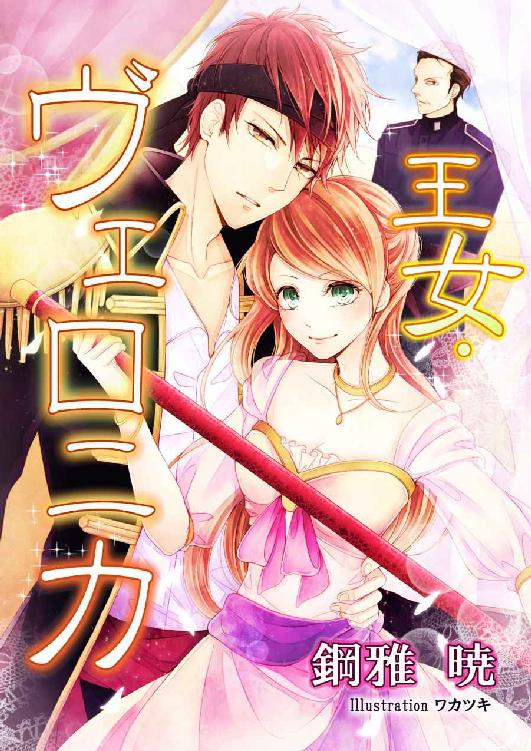

| 王女・ヴェロニカ リーカ国物語 (アプリーレ文庫) | |
| 鋼雅暁 | |
| 株式会社グリシーヌ夕霧文庫 (2016) | |

王女・ヴェロニカ
［著］鋼雅 暁
［イラスト］ワカツキ
※この作品は縦書きでレイアウトされています。
※この作品はフィクションです。実在の人物、団体、事件とは一切関係ありません。
目次
婚礼の儀、襲撃者
止まぬ魔の手
ヴェロニカの巡回
白い亡霊
わたしを、出陣させなさい！
進軍。そして、過去
単独行動一歩手前
目指すところ
変化、たくらみ、露見
革命に非ず！
討て。そして、立て
わたしが、守る
【書き下ろしＳＳ】ヴェロニカの視察
南に黒い海、他の三方を険しい山に囲まれた小さな国リーカ王国。
その日はコロン十三世の婚礼の儀のために、王都はお祭り騒ぎになっていた。
赤や黄色の花や果実で華やかに飾り付けられた大神殿には特別な祭壇が設えられていて、白い服の神官と巫女が神に祈りをささげている。
その祭壇の前には花婿であるコロン十三世とその正妃が優雅に座り、側室とその子どもたち、側近たちもずらりと並んで新しい花嫁の到着を待っている。
花嫁行列が通る「王都中央通り」や「神殿前広場」には昨晩から着飾った民が押しかけて夜通し騒いでいる。
珍しいものを馬車に満載した異国の商人やサーカスもやってきているため、完全に「お祭り」だ。
だがその華やぎを、神殿から少し離れたところから見つめる人影があった。
「ねえさま......僕たちは神殿にいかなくてもいいの？」
「......そろそろ行かなければいけないわね......。花嫁の一行が神殿に到着する頃だものね」
一人は、たっぷりとした栗色の髪を背に流し、エメラルドグリーンの瞳が魅力的な少女だ。纏ったドレスはサーモンピンク、
そしてもう一人、彼女が着ているサーモンピンクのドレスの裾を握っているのは、白いセーラー服で正装した少年だ。
服の袖や襟に金色のラインが何本も走っているのは、幼いながらも彼が軍隊を率いる立場であることを示している。
「ねえさま......。ビアンカとはもう一緒に遊んじゃいけないの？」
姉を見上げるスカイブルーの瞳は父親と同じ色、くりっとした目の形は母親と同じだ。
「そうね......一緒に遊ぶのは難しいかも、しれないわね......」
項垂れる弟の頭を軽く撫でて、姉――ヴェロニカは神殿を見つめて唇を噛んだ。
（このまま無事に婚儀が済んだとしても......何事もなく日々が過ぎていくとは思えないのよね......）
ヴェロニカのエメラルドグリーンの瞳は、父であるコロン十三世から母である正妃・セレスティナへ移り、そして二人に挨拶している花嫁の両親を経由して、ドレスの裾に顔をうずめる弟へと滑って行く。
「ねえさま......あのね......」
「どうしたの？」
「......僕、なんだか怖いの......」
「大丈夫よ。あなたの事は、わたしがちゃんと守ってあげる。朝からずっとそうしてきたでしょう？ これからもそうするわ」
片手で弟の頭を撫でながら、ヴェロニカは行儀悪く窓枠に片足を乗せた。
後が大きく膨らんだ流行のドレスの内側には、それなりに空間がある。ヴェロニカは器用にドレスの中に片手を差し入れ、そこに仕込んでいる伸縮式の武器、棍を取り出した。色は赤、どこにいても目立つ色だ。
それは一振りすれば棍はたちまち二メートルを超す長さにもなるのだが使用者にあわせて適当なところで止めて使う。ヴェロニカ愛用の特殊な武器だ。
武器が取り出されたことを察した弟が、顔を上げる。
「......いい？ 目を閉じて耳を塞いで」
従順な弟が目を閉じて耳を塞いだと同時に、背後のドアが乱暴に開けられた。
（また、濃紺の制服にピエロのマスク......フィオは殺させないわよ）
無言のまま突きだされる槍を棍の先端で弾く。鈍い音がしてフィオがびくっと体を震わせる。
さらに別の方向から伸びる穂先は、素早くすくいあげるようにして押し返す。
「弟には傷一つつけさせない。朝から何度言ったらわかるのかしら？ これ以上怪我人が出ないうちに、引っ込みなさい！」
ヴェロニカに向かって伸ばされた槍の柄を、無造作に左手で握って強く引く。
「わっ！」
前にのめった襲撃者の手から槍を奪い、その隙に、少し縮めた棍をフィオに渡す。
「ねえさま......これは......？」
「槍があなたを狙ってきたら、それで叩くの。出来る？」
「はい。ぼくも武術を習い始めたもの！」
フィオが、ドレスの陰から出てきて棍を構えた。
その姿勢の美しさと覇気に、襲撃者が少し後ずさった。
（そう、フィオ。それでいいのよ）
主家の幼い子息に応戦されて尚、勇猛果敢に攻め込める家臣など、そう滅多にいるものではない。
ことに今回のように、一人の家臣の私情で動いている時など、尚更だ。
襲撃者の殺気が萎んだのを察知したヴェロニカは弟の小さな体を抱きしめ、窓枠に飛び乗った。
乾いた風に、ピンクのドレスとカーテン、そして艶やかな髪がなびく。
「飛び降りるつもりだぞ！」
「引き止めろ！」
「いや、二人そろって死んでくれたら好都合だぞ」
殺到する襲撃者たちの足元を、高速で、なおかつ正確に槍で突いて足止めし、ヴェロニカは窓枠を蹴った。
下の階のバルコニーに一度着地し、再びそこから地面に飛び降りる。槍を杖代わりにして跳ね起きて追撃にそなえたが、濃紺の制服たちはそこまで追いかける気はないらしい。
窓から身を乗り出して、何事かを喚いている。
（ジャック、ここに花壇を作ってくれたこと、感謝するわ）
職人気質の老練な庭師・ジャックが「万が一」に備えて作ってくれた、極上の花壇。一年中緑の草花があり、クッションの役割を果たす。
ジャックから説明を聞いたときはまさかと思ったが、役立つ日が来るとは。
そのおかげで、ヴェロニカも腕の中の弟も、無傷だ。だが、弟はショックのあまり、大きく目を見開いて硬直している。
「怖かったよね、フィオ。泣いて良いわよ？」
だが気丈にも弟は、大丈夫です、と呟いた。同時に、ちいさな拳で目元を強くぬぐった。
「ぼくは泣きません。国を預かる者は、簡単に泣いちゃいけないの」
「それ、家庭教師のハービッグ先生の口癖ね」
「うん。ねえさまもそういわれていたの？」
「ええ、そうよ。さぁ、フィオ、立てる？ 神殿まで急ぐわよ」
だがフィオは、ヴェロニカの手から槍を取ると、その場に投げ捨てた。
「フィオ？」
「ねえさまが武器を持っている姿を、誰かに見られてはいけないと思うの。王女、いいえ、軍の将軍が武器を持って走っているなんて、民が心配するでしょう？」
確かにその通りだ。フィオは、縮めて短くなった棍を、姉の手に渡した。
「いつかこれで、ぼくがねえさまを守ります。ぼくは男の子ですから」
「楽しみにしてるわ、フィオ」
「ねぇ！ ぼく、神殿までの近道知ってるの！ こっちだよ！」
たたっ、と元気よく走り出した弟の後を慌てて追いかけて走りながら、ヴェロニカはほっと一息ついていた。
（このわたしですら知らない道だわ......。追手が待ち伏せしている可能性はまずないわね）
二人が神殿に到着すると、近衛隊と侍女がすかさず近寄ってきた。
乱れた髪や服装を綺麗に直され、威厳が整ったところで近衛隊の一人が声を張り上げた。
「ヴェロニカ第一王女殿下、テオフィオ第一王子殿下、王の婚礼の儀にご出席！」
二人が祭壇の前に姿を現すと、どおっ、と民が湧いた。
それに手を振って答えるヴェロニカ。
「ヴェロニカ、お前はわしより人気があるな」
「お父さま、それはわたしが、たびたび王宮を抜け出して町で遊んでいるからです」
「知っている。たびたび無断で家をあける娘を案じる親の身にもなってくれ......」
はぁ、とため息をつく父親の後ろに、ヴェロニカとフィオは座る。
「ヴェロニカねえさまも、いつかお嫁に行っちゃうの？」
「さぁ、どうかしらねぇ？ わたしはあんまりそういうことに興味がないのよね」
その発言が、父親の耳に入ったらしい。途端に王が深い溜息をついた。
「セレスティナ、我々は娘の育て方を間違えたようだ......」
「あら陛下、晴れがましい婚儀の場だというのに眉間に皺はいただけませんわ。王たる者、常に笑顔ですよ」
無理やり笑顔を浮かべて来賓席をみた王が、ぽん、と膝を打った。
「そうだ、セレスティナ！ 今日はヴェロニカの相手を探すにはいい機会だぞ。どうだ、良い男はいないか？ あれはどうだ？」
「あなた、ヴェロニカがわたくしたちが決めた相手と結婚するような娘だと思いますか？」
ちらり、と娘を見た父親は、頭をゆるゆると振った。
「......ヴェロニカ、身分や国籍は一切問わぬ。お前を貰ってくれるという奇特な人を、どうか一日も早く連れてきなさい」
「善処します。いずれそのうちまた気が向いたら......」
適当に答えたヴェロニカに父が大きな大きなため息をつき、再び来賓席に目を走らせる。
「なあ、フィオ。ヴェロニカはどんな男がタイプなのか、知っているか？」
「はい。ねえさまより強くて賢くて頼りがいのある男です。心身ともに軟弱な坊やはだめなんですって」
はぁぁぁ、と父はこれ以上ないほどのため息をついた。そんな男など、思い浮かばない。
賢い男はいるだろうが、「強い」というのが頂けない。
ヴェロニカの武術、とりわけ棒術の腕前は国内で五本指に入るし、剣術も先日のトーナメント戦で優勝トロフィーをかっさらった。
個人戦のみならず陸軍での戦歴も輝かしい物をもっている。
あまりに手柄をあげすぎたため、「血まみれ女将軍・ヴェロニカ」という結婚前の女性にとってあまり有難くない呼び名がついてしまった。
「お！ あの貴賓席の中央で豪快に酒を煽っている王子、腕っぷしが強そうだ。どうだろう？」
「だめです、父上。あの王子のお国は、ねえさまが次に落とす予定です」
「......セレスティナ、ヴェロニカをいい加減に軍から外せ」
「どなたさまでしたかしら、王女に永久陸軍総裁を授けたのは」
両親のやりとりを聞き流しながら、ヴェロニカは油断なく周囲を見張っている。
（いまのところ、怪しい動きはないわね......）
「......ヴェロニカ」
「はい、何でしょうか、母さま」
「臨席が遅くなった理由は何ですか？」
「えーっと......朝からフィオが何度も襲われました。濃紺の制服とピエロの仮面をつけた集団に」
ぎりっ、と王が歯噛みした。
「野望に満ち溢れすぎた男も困ったものだ。若い娘を差し出すだけでは満足できずに、王子を襲うとは行き過ぎであるぞ......」
六十歳に近い王の側室に加わるのは、ヴェロニカより更に若い、十八歳の少女――ビアンカだ。
豪華な輿に乗った花嫁が、近づいてくる。強い花の香りと賑やかな音楽に、フィオが顔をしかめる。
「ビアンカ......ぼくのお友達だったのに......」
お友達、という表現は正しくない。ビアンカはフィオが生まれた時から傍にいる侍女だったのだ。
年配の侍女・乳母が多い中で、最も若く明るいビアンカは、フィオにとっていい遊び相手であり、ヴェロニカとも茶飲み友達だった。
「フィオ、これからも彼女と仲良くするが良いぞ！」
そういって立ち上がった王は、背筋を伸ばして新しい花嫁を迎えた。
「ビアンカ。そなたの部屋を後宮の南棟に用意する」
「ありがとうございます」
白いレースのベール越しに王を見上げるビアンカは、象牙色の肌に艶やかな黒い髪をしている美少女だ。
金髪碧眼が主流のこの地では、珍しい容貌だ。
そして、彼女の大きな茶色の瞳には涙が浮かんでいる。喜びの涙――ではないことは、誰もが知っている。
妻子ある若くもない王に若い娘を宛がう、となれば古今東西、嫁ぐ事情はたいてい決まっているだろう。
好色な王が娘を見初め、泣く泣く差し出されるか。
権力や国のために、王に差し出されるか。
ビアンカの場合は、後者である。ビアンカの父親、ラロ・サジャス・エンリケは野心に満ち溢れた男だ。
彼は元々、隣の小さな国・リッサンカルア王国の貴族で、国防軍大将の地位にあり、前線で指揮をとっていた。
だが、母国がコロン一三世に攻められた折に、兵をごっそり率いて、悠々とリーカ王国側に寝返った。
寝返った理由は至極簡単だった。
「このまま小国・リッサンカルアにいるよりも、リーカ王国で罪人として暮らした方が良い暮らしが送れる。だからそちらに住むことにした」
そんな男のどこが気に入ったものか、コロン十三世は彼を破格で召し抱え、一族郎党、家臣に至るまでをごっそり呼び寄せて、彼らにリーカでの貴族の地位を与えた。
それに感謝したかどうかは知らないが、以来、エンリケは大人しくコロン十三世に仕え、自力で軍事大臣の地位にまで上り詰めた。
しかし、それだけでは飽き足らなかったらしい。
王家との繋がりを強いものにしようと運動を開始した。そして、それには自分の娘を嫁がせるのが一番だ。
だが王は、美しく賢い正妃のほかに、何人もの側室を持っている。少しくらい美しい娘では見向きもされない――。
そう悟った男は、わざわざ東方の村の美しい娘を何人か選び、自分の側室にして、せっせと子作りに励んだ。
その結果、東方の血が色濃くでた娘が誕生したとき、父は大喜びした。
その娘はビアンカと名付けられ、幼いころから王の妃となるべく教育を受けて育った。
ビアンカが婚儀の前夜、使者とともに「嫁ぐ前の挨拶」に来た時、エンリケは上機嫌だった。そして娘の髪を撫でながら、
「お前は一日も早く王の子を産め。わたしは王の祖父となって権力をふるうのだ」
と、言ってのけた。
驚くビアンカに、父は、燃え盛る暖炉の前でワイングラスを傾けながら、さらなる野望を熱っぽく語って聞かせた。
「聞け。お前は近いうちに正妃の座につくことになる。お前のように美しく賢い娘を側室のままでは終わらせぬ、安心せよ」
「お父さま......それはどういう意味ですか......？」
「細かいことは気にしなくてよい。お前は、王に気に入られるように努力せよ。それだけでよい。お前はわたしの最高傑作......自信を持って王の傍に侍《はべ》れ」
不安と疑惑でいっぱいの娘の心中に全く気付くことなく、エンリケは上機嫌で娘を送り出した。
そんな婚礼の儀から三か月ほどたったある日――。
王の正妃・セレスティナが病に倒れた。
「ヴェロニカさま！ ヴェロニカさま、起きてくださいませ！」
真夜中、悲痛な声でヴェロニカを起こしたのは、ビアンカだった。
「ビアンカ？ どうしたの？」
「セレスティナさまが危篤だと、王のもとへ使いが来ました！」
「容態が悪化したのかしらね」
つい先日、王族専属医師のジュリアンは、不調を訴える正妃を診察し、過労、そして肺が良くない音を立てていると診断をくだした。
だが、数日で容体が急変するような重病だとは聞いていない。
ベッドサイドに置いている常夜灯から手燭に灯りを移したヴェロニカは、チェストからガウンを二枚と袋を一つ引っ張り出した。
一枚は自分が羽織り、もう一枚は寝間着姿のビアンカに渡す。
「ビアンカ、わざわざありがとう。さぁ、あなたもこれを羽織って」
きょとんとするビアンカは、自分がどんな格好なのか、自覚がないのだろう。
「風邪をひいてしまうわよ。それに......若い巡回兵には刺激的すぎるかもしれないわね」
はっとしてビアンカは己の姿をみた。
髪も垂らしたまま、足元は裸足。何より、薄手のレースの寝間着一枚のため、日頃は隠れている豊かなバストもくびれたウエストも、くっきり視えてしまう。
「わ、わたしったら......はしたない恰好でごめんなさい」
頬をおさえて慌てるビアンカの仕草は、女のヴェロニカからみても可愛らしく、色気がある。
（こんな子が父さまの側室だなんてもったいない話よね......）
彼女が社交界デビューしていれば、貴族の子息がこぞって求愛しただろうし、上流貴族の夫人として華やかに暮らしたことだろう。
「ヴェロニカさま、わたし、お部屋へもどって身だしなみを整えてから出直してまいります」
「あら、構わないわよ。それから、髪も纏めて......アクセサリも何か......ろくなものがないけれど、これで王の寵姫の体裁は整ったわ。行くわよ」
震えて冷たくなっているビアンカの手を取り、ヴェロニカは月明かりひとつない回廊を走った。
「......あの、ヴェロニカさま」
「ん、なに？」
回廊を半分ほど走ったところで、思い出したようにビアンカが声を掛けてきた。
「余計なことかと思ったのですが......念のためフィオさまは王のお部屋へ預けてきました」
走っていたヴェロニカが足を止めてビアンカを見た。
「念のため、って......どういうこと？」
「わたくしの父から守るためです。父は皆の注目がセレスティナさまに集まった隙に、王子殿下を殺そうとするかもしれません」
ヴェロニカは慌てて周囲を見回した。夜更けの後宮だが、どこで誰が聞いているかわからない。
「ビアンカ！ ......あなた、自分が何を言っているかわかっているの？」
ビアンカはしっかりと頷いた。ちょうど雲が切れ、月明かりが真剣な表情のビアンカを浮かび上がらせた。
「勿論です。父は、わたくしを王の正妃にし、さらにわたくしの子を玉座につけることを希望しています。そのために......セレスティナさまとフィオさまを殺すことも十分考えられます」
唖然とするヴェロニカの手を取ったビアンカは、まっすぐ揺らぎのない瞳でヴェロニカを見た。
「わたくしは、フィオさまを玉座に座らせるために後宮にいるのです。フィオさまを一番近くでしっかりとお守りするのが、わたくしの仕事です。これは、陛下も御存じのこと......」
「そんな......どうしてそこまで......？」
「父は大変恐ろしい男です。野望に満ちた男です。これ以上、父に好き勝手させるわけには参りません。......それよりも今は、セレスティナさまの病室へ参りましょう」
先に立って駆けだすビアンカの揺れる長い黒髪を見ながら、ヴェロニカは妙な胸騒ぎを覚えた。
だが、それがなんなのか、掴めない。それよりも、今は母の病室へ急ぐことが先だ。
「......ビアンカ、今後何があっても、父と弟をよろしく。あなたになら、お願いできるわ」
「え？ はい、もちろん」
「さあ、急ぎましょう」
窓際に寄せられたベッドに横たわる母・セレスティナは、ずいぶん衰弱していた。
整った顔はやつれ、豊かな髪はパサパサになっている。
「母さま......！」
「セレスティナさま！」
荒い呼吸で眠るセレスティナは、駆け寄ったヴェロニカたちに気付く様子もない。
「どうして......いつの間にこんなに......！ 母さま、ヴェロニカです。聞こえますか？」
医師・ジュリアンや、王妃付きの侍女たちが気を利かせて部屋を後にする。それを確認したビアンカが、セレスティナの布団をそっと剥いだ。
「セレスティナさま、少し失礼いたします......」
呼吸や脈、瞼、胸の音......丹念に確認した後、ヴェロニカに耳打ちした。
「......ヴェロニカさま、例の袋をお持ちですね？」
「ええ、持ってきたわ」
手に提げていた袋を出して見せると、ビアンカがほっとしたように笑った。
「よかった。その中から、黄色い錠剤と、茶色のとげがついた小さな白い葉っぱを取り出してください」
袋は、何年も前にビアンカがプレゼントしてくれたもので、その中には、木の実や錠剤、葉っぱや貝殻などが詰め込まれている。
いずれも、いざというときの薬、食糧、毒、解毒剤として使える。
その上、袋は水を濾過することも、保管することもできる珍しい物だ。
「セレスティナさまのご病気は、リッサンカルア近辺でよく使われる遅行性の毒草によるものです」
ヴェロニカは頭の中で、リッサンカルア近辺の地理や情勢、軍事情報を展開させた。
（天候不順による内乱続きで、隣国侵略や策略を巡らせる余裕はないはず）
「この毒に対してはリッサンカルアの民のほとんどは抗体を持っているので、もっぱら国外で高値でとりひきされています」
「たしか、リッサンカルアは薬草が豊富に取れる国よね。国庫を潤しているのも、薬草だと聞いているけれど......」
「実際は、毒草ですわ......。この薬草を煎じたものを飲めば、きっとよくなります」
錠剤を指でつぶせば、どろりと液体が出てきた。その液体に、小さくちぎった葉を浸す。すると、葉が溶けて液体の色が濃くなった。
ビアンカは、その液体をそっとセレスティナの口元へ流し込んだ。
「セレスティナさま......お願いです、一口で良いので飲んでください......」
祈るようなビアンカの声が寝室に響き、こくり、こくり、とセレスティナの喉が動いた。
「よかった......。これで熱は下がって脈も落ち着くわ......。セレスティナさま、まだ呼吸は苦しいと思いますけれど、きっとよくなりますから」
結局その日は、朝日が昇るまでヴェロニカとビアンカがセレスティナの傍で看病を続けた。
（何も聞かず看病させてくれたジュリアンに、感謝よ......）
窓を開けて、部屋の空気を入れ替えるビアンカが、小さな声で呟いた。
「......ヴェロニカさま」
「なあに？」
「これはきっと父の仕業ですわ」
「ビアンカ！ 滅多なことを言ってはダメよ」
「だって！ 使われたものはリッサンカルアの......父の故郷の毒物です」
「落ち着いて、ビアンカ。リッサンカルアの国外で流通している毒物なのでしょう？ この国の人物でも簡単に手に入れられる。そうでしょ？」
こくん、とビアンカが頷く。
「それに、わざわざ自分に繋がるような毒物を使うかしら？ もしわたしが敵を毒殺するなら......リーカ王国原産の毒物は避けるわ」
「でも、そう思わせるために、わざと使ったのかもしれません。父は、わたくしがこの毒の解毒法を知っているとは思いもよらないでしょうから......」
きゅっ、とビアンカは唇を噛みしめた。その顔に、穏やかな朝日があたる。
「お父さまだったら......わたくし、絶対に許さないわ」
「ビアンカ......どうしてそんなに......？」
「セレスティナさまは......ありのままのわたくしを可愛がってくださる。側室であるわたくしを憎むことも恨むこともなく、実の親以上に愛して下さる」
本当はお母さまと呼びたいくらい、とビアンカは一筋、涙を流した。
それから数日後、セレスティナ妃は公務に出られるほどに回復していた。
しかし、一日に何度かの休息をとるようにジュリアンが指示をだしているため、王妃は中庭やバラ園、噴水そばのベンチなどでよく休んでいる。
今も、中庭の芝生の上に腰を下ろして休んでいる王妃をみつけたビアンカが駆けつけた。
ビアンカは最も愛されていると噂されている王の側室だが、少しも飾ったところがなく、護衛も侍女も連れないままセレスティナのところへ飛んで行った。
にこにこと、輝くような笑顔でセレスティナの隣に座っている。
そしてヴェロニカは、中庭で自身が率いている軍の鍛錬に精を出していた。
普通、王族が軍の調練に武器を携えて参加することはないのだが、ヴェロニカは愛用の棍を振り回して兵を相手にする。
兵も心得たもので、本気で相手をする。――というか、手を抜こうものならヴェロニカに軍が全滅させられてしまう恐れがある。
ドレスの裾を翻し髪を振り乱して兵を次々なぎ倒す王女のブーツの下から、息も絶え絶えの伍長が叫んだ、
「あっ！ セレスティナさまとビアンカさまが、休憩なさっています！」
「え？ どこ？」
「あちら......噴水の傍であります」
そちらへ行きかけたヴェロニカだが、すぐに兵の方を向いた。
「でも、調練が終わってないわね」
「我らにはお構いなく！ セレスティナさまに、よろしくお伝えくださいっ！」
兵たちが合唱し、ヴェロニカは優雅にお辞儀したあと、「母さまー！ ビアンカー！」と叫びながら走って行った。
「二人とも、此度は大変世話をかけました。この通り、礼を申します」
王妃が柔らかな微笑を浮かべて、頭を下げた。
「そんな、母さま！ わたしは何もしていません。ビアンカがつきっきりで看病してくれたのです」
「セレスティナさま、頭を上げてください」
「知っていますよ。とても苦しかったあの夜、あなたたち二人の声が絶えず聞こえていました。そしてビアンカがたびたび飲ませてくれた甘い液体......あれが薬だったのでしょう？ ヴェロニカの手の傷は、足りなくなった薬草を取りに山へ行ったから......違いますか？」
その通りである。ヴェロニカはドレスとおそろいのサーモンピンクの日傘をくるくる回して笑った。
「あーあ。母さまにはかなわないわね、そう思わない？ ビアンカ」
「ええ、ほんとに......。絶対ばれないと思ったのに、わたくしたち、修行が足らないみたいね？」
「さぁ二人とも、一緒にお茶にしましょう。今日は料理長が特別に焼いてくれた、はちみつ入りのクッキーとバラのお茶よ」
侍女が、傍らに置いてあったバスケットを差し出す。ふんわりと、はちみつの甘い香りが漂う。
ヴェロニカのお腹が、きゅるるる、と小さく鳴った。
「あわわわ。失礼しました」
顔を赤くしてお腹をおさえるが、その視線はしっかりとクッキーに注がれている。
「ヴェロニカ......あなた朝もたっぷり食べたでしょう？ そんなに食べるとコルセットやクリノリンがつけられなくなりますよ」
「ドレスを仕立て直して、隠すから気にしません」
「そういう問題ではないでしょう？ それに、ドレスを仕立て直すって言っても、手間暇かかるのよ？」
ヴェロニカたち三人が着ているドレスは、色が違うだけでいずれも同じタイプのものである。
まず、長いスカートの下には、レースのペチコートを履いている。そして裾を広げるために「クリノリン」と呼ばれる鳥籠のようなものが装着してある。
このクリノリンの中に、ヴェロニカは武器と布袋を隠している。他の人が何か隠しているという話は聞かないが、市井では万引きした品をここに隠すこともあると聞く。
ちなみに今の流行は後ろを膨らませるスタイルだが、数年前は左右に出っ張った形が人気だったため、幼いヴェロニカは左右にやたら膨らんだドレスを着ていた。
それから、ウエストを細く見せるためにコルセットを付けている。これが苦しいのだが、これがないとドレスが着られない。
さらに、細い腕を演出するために袖は肩口から大きく膨らんでいるし、こんもりと膨らませたスカートの後ろには大きなリボンやレースが惜しげもなくついている。
これらすべて身につけると、重たいし動きにくい。ヴェロニカは、侍女たちが着ている簡素なワンピースが羨ましくて仕方がない。
「多少クリノリンを改造しているとはいえ......これだけ締め付けて動きを制限されていながら、棍を振り回して大立ち回りをやるヴェロニカ、あなたは大したものだと思いますよ」
妙なところで母に褒められ、ヴェロニカがうれしそうに笑った。
そして、仲良く談笑する三人の姿を、遠くから見る目がある。
いつも自分たちを守ってくれている目とは違う。悪意と殺気が込められた視線が注がれている。
（......木の陰に二人、あっちの陰に二人......。わたし一人なら叩きのめしてやるのに！）
楽しそうな二人の安全を真っ先に確保し、なおかつティータイムを邪魔せず確実に敵を排除する方法を必死で考えるが名案が思い浮かばない。
「ヴェロニカさま、眉間に皺が......。どうかなさったの？」
「......え、ちょっとクッキーを頂きすぎたの！」
苦しい言い訳をして無理やり笑顔を作ってみたが、通用するはずがない。
「ヴェロニカ、どうしたのです？ 言ってごらんなさい」
「では言います。殺気を感じました」
「あなたがそう言うのなら、そうなのでしょう。わたくしたちに何かあっては王や皆の手を煩わせてしまいますから、お部屋に戻りましょう」
蒼ざめたビアンカが片付けを始め、侍女二人が手伝うために近寄ってくる。だがその二人ともが、ヴェロニカの記憶にない少女たちだった。
セレスティナとビアンカも同様だったらしい。
ビアンカが、すっと一歩前へ出た。慌てたヴェロニカがビアンカの袖を引いて、侍女たちと十分な間合いを確保する。
「はじめてみかける顔ですね。こちらがどなたかわかっていて、面をあげているのですか？」
「あっ、あの......あたしたち、ラロさまに雇われました。本日付で、ビアンカさま付きになりました」
「お父さまが......？ どこで雇われたの？」
「リッサンカルアの町です」
なぜ、と唇が動き、ビアンカの形の良い眉が寄せられた。
「それにあなたたち、本当にリッサンカルア人なの？」
ビアンカが尋ねたのも無理はない。二人とも、濃淡の差はあるが金髪で、青い目をしている。リッサンカルアでは珍しい容姿だ。
しかしヴェロニカは、二人の少女がきちんと揃えている手と、足の運び方を見ていた。
（あれは剣だこ......重心が均等に移動......父親が、娘の護衛として送り込んできた剣士でしょうね......）
「ビアンカ、ヴェロニカ、侍女をそんなに睨みつけてはいけませんよ」
「セレスティナさま！ しかし、父は......」
「娘を心配しない父親はいないと思いますよ。さぁ、一刻も早く、引きあげましょう。さあ、バスケットを片付けてくださいな」
はい、と二人の侍女の声が重なり、無駄のない動きで片づけていく。
その二人を、ビアンカはあからさまに警戒しているが、セレスティナの方はそうでもない。いつもと変わらぬ、穏やかな笑顔を浮かべている。
「ヴェロニカ、そのシートを畳んでバスケットにしまってちょうだいな」
「あーはい、はい......」
「ヴェロニカ......わたくしは、畳んで、とお願いしたのですよ？」
だから畳みましたが、と改めて差し出されたシートは、お世辞にも「畳んだ」とは表現しがたいものである。
珍しくセレスティナが眉間を軽く指で押さえた。
「あー......その、ヴェロニカ」
「はい」
「あなたの中では畳んだことになるのでしょうけれど、世間で畳んだといえばこの状態を差すのです」
ビアンカの手には、きちんと正方形に畳まれたシートがある。侍女の二人も、きちんとハンカチやタオルを畳んでいる。
「ヴェロニカ、お仕事も武術も結構です。王を助けて励んでくれることをうれしく思っています。ですが......」
言葉を切ってヴェロニカ見つめたセレスティナは、王妃ではなく母親の顔をしていた。
「もう少し、家事ができるようになりなさい。明日から一日一時間で構いません。女官長と一緒に行動なさい。結婚してから困ります」
「......え！？ わたしは困りません」
「困るのは、あなたの旦那さまとなる人です。いいですね？」
がっくり項垂れるヴェロニカの肩を、ビアンカがポンと叩いた。
「そういうことが得意な男性を婿にすればよいのですわ！ ね、セレスティナさま？」
「ビアンカ......ヴェロニカより武術が強くて賢くてたくましい男性の知り合いはある？」
「なんですかその条件は？」
「ヴェロニカの理想の男性だそうですよ。この条件をクリアする相手と結婚するとか......」
ビアンカの目が丸くなった。
「軍の将校募集ではなくて......？ ヴェロニカさまの結婚相手の条件なのですか？」
「聞いたことがないでしょう？ そこに今、家事全般が得意、という条件が加わったわね......」
「......家事全般が得意な男性ならばいるでしょうけれど......ヴェロニカさまより強い男というのは......」
簡単に見つかりそうにないわね、と呟いたセレスティナは、しかし次の瞬間、ビアンカの肩を抱いてその場に伏せていた。
「セレスティナさま！？」
「ビアンカ、動いてはいけません」
ちらりと目線だけを周囲に走らせれば、スカートの中から愛用の棍を引き抜いたヴェロニカと、それぞれ愛用の武器を構えた侍女二人が仁王立ちになっている。
「......ひっ」
「ヴェロニカが良いと言うまで動かないのが約束なのですよ、ビアンカ」
ヴェロニカが棍で戦うところを、知らないわけではない。
棍や剣を振り回している姿はしょっちゅう目にしているし、兵の調練に付き合ったこともある。
だが、こんな至近距離で――剣と棍がぶつかる音、刃が空気を切る音、うめき声、殴打の音が聞こえる――戦闘に遭遇したのは初めてだ。
小刻みに震えるビアンカの手を、セレスティナが優しく握りこんだ。
「大丈夫よ、ビアンカ」
「怖い......助けて、母さま......」
「すぐに終わるわ。さ、目を閉じて、耳も閉じて......」
ビアンカは、相手が国の王妃だと言うことも忘れて、セレスティナの胸元にしがみついた。
ヴェロニカが対峙した相手――服装は多少異なるが、いつもと同じくピエロの仮面をつけた団体だ――は、思いのほかあっさり引いて行った。
「ずいぶんあっさりと引いていったわね......」
だが、王妃にも側室にもこれといった被害がなかったのは何よりだ。
「怪我人はいないわね？ 母さま、苦しくない？ 大丈夫？ ビアンカ、痛いところはない？ 大丈夫？」
「ヴェロニカ、大丈夫ですよ。ありがとう」
「ああっ、ヴェロニカさま、血が出ているわ......」
「うん、嫌な刃だったな。わざと刃こぼれが作ってあった......」
（毒物が塗られてなければいいけれど......）
黒光りする不気味な刃で裂かれたドレスの袖は、やっぱり無残だ。
ビリビリと破って傷口をおさえていると、侍女の一人が目を吊り上げた。
「......ヴェロニカさま！ お袖を引きちぎるとは何事ですか！ 綺麗にお洗濯して付け直しますので、お渡しください」
「え、そっち！？」
と叫んだのはビアンカだ。
「あの、ヴェロニカさまの傷の手当てを！ あんなに血が出て......」
侍女たちはちらりとヴェロニカの腕をみて声を揃えた。
「そんなかすり傷、舐めときゃ治ります」
ひどーい、と憤慨するベロニカをセレスティナが宥め、撤退準備が再開された。
その横で、ヴェロニカははっとした。
（......フィオ......あの子は大丈夫......？）
そう思ってフィオが暮らす宮殿を見ると、後宮付き侍女の一人、ジャスミンが転びそうになりながら駆けて来るのが目に入った。
「ジャスミン、どうしたの？」
ジャスミンはスカートを摘まんで膝を軽く折り曲げて挨拶をしたあと、恐ろしいことを告げた。
「セレスティナさま！ フィオさまがお倒れに！」
「まぁ、どんな症状なの？ 重いの？」
「ジュリアン医師の話だと、何か遅行性の毒を盛られたようだと......。ただいま、ジュリアン医師が必死で解毒を試みています」
ジュリアンなら間違いなく解毒してくれるだろう。しかしそれは、使われたのが『この国で流通している毒』の場合だ。
（母さまが盛られた毒と同じ種類かもしれない......）
同じことを思ったのだろう、ビアンカが青い顔でヴェロニカの手を握った。
「ヴェロニカさま！」
「ええ、わかっているわ。ビアンカ......母さまもあなたも、またさっきの奴らに狙われるかもしれないわ。気を付けて」
「はい、ヴェロニカさまもどうか......」
大丈夫よ、とヴェロニカは棍を握りなおした。びゅん、と一振りして腕にぴたりと添わせる。何者も近寄らせない覇気がある。
「ジャスミンは、わたしと一緒に来てちょうだい」
「はい、かしこまりました」
新しい侍女二人は、ビアンカの左右にぴたりとついた。ビアンカの眉が、不快気に動く。
「あたしたちはここに残って、セレスティナさまとビアンカさまをお守りします」
「お願いね」
いくわよ、とスカートの裾を跳ね上げて駆けだしたヴェロニカは、王女ではなくどうみても戦う者の顔だ。
そして、淑やかにそれを追いかけるジャスミン。
「......ビアンカ......。ジャスミンの方が王女らしくにみえるのはわたくしだけかしら......？」
侍女二人が思わず吹き出し、ビアンカが慌ててたしなめた。
「ヴェロニカさまは、勇猛果敢な歴戦の王女殿下であらせられますわっ！ 素敵で頼もしいのよ！」
ビアンカの宣言に、あちこちで忍び笑いが漏れた。
血まみれ女将軍・ヴェロニカと呼ばれるより、その方がまだマシな気もしてくる。
「ビアンカ、あなたは本当に......王が仰る以上に良い子だわ......。どうかそのまま、ヴェロニカのお友達でいて下さいね」
そのころ、勇猛果敢で歴戦の王女・ヴェロニカとジャスミンが駆けつけた病室では、ベッド脇でジュリアンが難しい顔をしていた。
「ジュリアン！」
「これはヴェロニカさま......」
ジュリアンが黙って水を差しだす。落ち着け、ということだろう。ヴェロニカとジャスミンは、黙ってそれを飲んだ。
「ふぅ......。で、フィオの容態はどうなの？」
「毒の種類が特定できないので......。この国の物ではない、異国のものではないかと思われます」
「では......この袋の中の薬草を使ってみて」
ドレスの中に手を突っ込んで、布袋を取り出す。ジャスミンが「はしたない！」と咎めたが、この際それは聞き流す。
ざっと袋の中身を見たジュリアンは何も言わずジャスミンを助手にして、てきぱきと薬草を煎じ始めた。
「ヴェロニカさま。この葉を見たことがないのですが、どうやって使うかご存知ですか？」
「......葉を小さくちぎって、そっちの煮汁につけるの」
「ああ、なるほど......」
ビアンカが作ったものと同じ香りがする液体を、ゆっくりフィオに飲ませること数度。
フィオの荒い呼吸が少し落ち着き、痙攣もおさまってきた。ジュリアンが、フィオを丹念に診察する。
「......峠は越えたと思われます。あとは王子の体力が持つかどうか......」
よかった、と、ヴェロニカが床に座り込んだ。
「しばらくは、医師団がこちらに詰められるように手配いたします」
「ええ、よろしくお願いします」
「ジュリアン、ジャスミン、ありがとう。フィオ、頑張るのよ......」
「いえ、ヴェロニカさまのお持ち下さった薬のおかげです。それにしても......興味深い......」
（ビアンカ、ありがとう......）
この時、母とビアンカと三人で一緒にフィオの部屋に行かなかったことを、ヴェロニカはひどく後悔した。
ヴェロニカが立ち去った直後、宮殿へ戻ろうとしていた一行が再び刺客に襲われたのだ。
騒がしさとビアンカの悲鳴に人々が駆けつけた時、背を斬られたビアンカが血だまりに倒れ、ビアンカを守るようにしてセレスティナが倒れていた。
フィオの部屋に詰めていたジュリアンが直ちに呼ばれた。最新の技術を駆使して緊急手術が行われた。
何時間にも及ぶ大手術は、国内でも初めてのことだ。
「お二人とも、手術は成功しました。ビアンカさまはじき意識がもどるでしょう。しかし......セレスティナさまは体力がもつかどうか......」
なにせ、セレスティナは先日毒を盛られたばかり、本調子ではない。
青白い顔の王妃は厳重な警備のもとで医師団がつきっきりで看病にあたっていた。
手術から五日が過ぎたころには、セレスティナの頬に赤味がさし、夫であるコロン十三世や娘・ヴェロニカの声に反応するようになっていた。
誰もが、王妃は助かったと思っていた。
それなのに。
「セレスティナさまがお亡くなりに！」
唐突に、崩御の知らせが王宮を駆け巡った。
「そんな馬鹿な！ いくぞヴェロニカ！」
「はい！」
転がるようにしてコロン十三世とヴェロニカが駆けつけた病室は、血の海だった。
廊下やベッド回りを警備していた兵も、医師見習いの青年も、侍女たちも、全てが惨殺され、セレスティナ妃の胸には短剣が突き刺さっていた。
「う、うそだ......母さま！ 母さま！」
王は、最愛の妻の体を抱きしめ、咆哮した。
「......犯人を捜せ！ 最初にセレスティナとビアンカを斬った者はまだ見つからぬか！ 何としても探し出すのだ！」
嘆く父の傍で、ヴェロニカは唇を噛んで涙をこらえていた。
「父さま......」
「......なんだ？」
「曲者がまだ......捕まっていません。宮殿へお戻りください」
「ヴェロニカ......？」
「王子、正妃が相次いで狙われたのです。王が狙われない保証はありません。わたしが、お部屋まで警護いたします」
ヴェロニカは、母の胸に突き立った短剣を抜こうとした。だが、がっちりと組まれた手が、剣を抜くことを拒む。
「ちょっとまて、ヴェロニカ。このままにしておこう」
「短剣が突き立ったままなんて、母さまが気の毒です！」
「いや、このままで良い。戻るぞ」
深紅のマントを翻して立ち上がる王にぴたりと付き従ったヴェロニカは、病室を出たところでスカートの中から愛用の棍を引っ張り出した。
器用に片手でくるくると棍を回転させてから、ぴたりと腕に添わせた。
（いる......柱の陰に）
薄いピンクのドレスが、ふわりと移動した。
瞬間、棍が滑らかに動いて男の首筋を打ち据えていた。骨が砕ける音がした。手加減が、出来なかったのだ。
くたくたと絨毯の上に倒れた男の手には、弓がある。それをブーツの踵で踏みつけて折ったヴェロニカは、振り向きざまに棍を投げつけた。
ぐえっ、とくぐもった声がして、少し離れた柱の陰から、男が転がり出てきた。こちらは、手に細身の剣を持っている。
両者とも、マスクに紺色の制服だ。
「マスクのおかげで命拾いしたようね。母と弟を付け回す首謀者の名前を、そろそろ吐いてもらいましょうか」
ヴェロニカがマスクをはぎ取ろうとした瞬間、男の首がカクンと後ろに反れた。
「え？」
「......自害したか」
冷たい目でマスクの男たちを見下ろした王は、遅ればせながら駆けてきた衛兵に遺体の始末を命じると、唇を噛みしめた。
「......許さぬぞ、人の命をなんだと思っておるのか......！」
王の眼には、怒りと悲しみが宿る。
「あの日、二人を守っていたはずの近衛兵はどうした？ 侍女はどうなった。彼らも探し出せ！」
最愛の妃であるセレスティナを殺されて怒り狂った王の命令で全軍が動かされた。
連日、軍議・会議が開かれ、犯人探索の指揮は王自らがとった。
そしてヴェロニカはもちろんのこと、他の側室や子供たちも、不必要に後宮の自室から出ることを禁じられてしまった。
だが、その三日後、後宮の中庭で二人の側室が殺され、罪のない姫たちまでも無残な姿で発見された。
「厳重な警備なのにどうして......！ 犯人を必ず捕まえろ！」
近衛長官のグーレースは憤激し、王宮内の巡回の強化、見張りの強化を命じた。
王と王子以外の男子は原則立ち入り禁止の後宮にも特例で兵を配備した。
これには抗議する人がいないでもなかったが、グーレースは毅然としてこう言い放った。
「犯人が、後宮の人間、或いは王宮に仕えている人間である可能性も捨てきれないので、辛抱していただきたい。後宮に魔の手、すなわち王の御命の危機」
そう言われて嫌だと言える者など、いない。
だがしかし、彼らの厳しい警戒の目をかいくぐって、さらに側室が一人殺されているのが発見され、その翌日、今度は庭の噴水に近衛騎士隊に所属する二人の遺体が捨てられていた。
事件があった日にセレスティナとビアンカを最も近くで護衛していた二人だ。
王宮の地下にある遺体安置所で部下の二人を検分した近衛長官は、深い溜息をついて、ジュリアン医師を呼んだ。
「医師どの......診てください」
「......曲者はかなりな腕前の持ち主だと思いますが......長官、いかがでしょう？」
「うむ、そのとおりです。二人とも急所を一撃でやられています。応戦した様子もなければ、更に不審なのは殺されたがつい先ほど。なぜ......？ 彼らは殺されなければならなかったのだ？」
首をかしげる近衛長官の傍で、ジュリアンは、刀傷ではない遺体の特徴に気付いた。
（......この二人は毒物を盛られた、いや薬物中毒だったのでは......？）
薬物中毒になった近衛隊隊員など、いまだかつて聞いたことがない。
近衛騎士隊は、この国の武官のエリートだ。厳しい剣の修行に耐え、専門の学校で勉強し、そして人柄・思想重視で選ばれる。
この国の男の子たちが、一度は憧れる職業だ。
そんな彼らが、薬物に手を出したということが、信じられない。
（だが......彼らの命を奪ったのは薬ではない。剣であることに間違いはない......）
書類上、死因は刀剣による斬殺と書くしかないだろう。
どうも釈然としないものを抱えたまま、ジュリアンは報告書をまとめにかかった。
セレスティナ王妃の葬儀の後は、側室や姫君たちの葬儀が続き、その後は、兵士たちの合同葬儀があった。
犯人捜索に駆り出された兵たちがみつけたのは、襲撃犯ではなく同僚の遺体だった。
その数十を超えたため、王妃を守って殉職した兵士として国葬することを王が発表したのだ。
彼らは、いずれも惨い最期を迎えている。
苦悶の表情を浮かべた者もいれば、恐怖に歪んだ表情の者もいた。
そして彼らは、亡骸を放置されていた。それは中庭の茂みだったり、ワイン蔵の奥に隠さていたり、枯れた井戸に捨てられていたものもあった。
「誰がこんな酷いことを......。でも狙わているのは後宮の人間だけじゃないってことよね......？」
ヴェロニカが形の良い眉を寄せ、王や調査にあたった面々も首をかしげた。
（傷の具合から見て......相当な手練れが二人はいるわね......）
一人は、首筋や腰をすっぱり斬るのが得意な人物。武器は細身の剣だろう。
もう一人は、突き技を得意としている人物だ。武器は両手剣のようなものだ。
両手剣で突く、という技を得意とする流派があるのを、ヴェロニカは知っている。実際に競技会で対峙したこともある。
だがそれを今、口にするわけにはいかない。
「......敵には相当の手練れがいる。不審人物を見ても手を出してはいけないと、師匠......グーレース長官に伝えなくては！」
葬儀一切を取り仕切る立場にあったヴェロニカは多忙を極め、軍を率いて遠征するどころの騒ぎではない。
だが、葬儀の合間に後宮の屋根に座って中庭を見下ろすという休憩方法を編み出していた。
（今、わたしにできることはなんだろう......？）
いつもは、側室や幼い姫――妹たちだが、ほとんど交流はない――が駆け回る中庭は、立ち入り禁止になっている。
天使の像から吹き上がっていた噴水も止められてしまい、鯉がゆったりと泳いでいる以外、動くものはない。
（空位になった正妃の座は、どうなるんだろう......）
父の隣で母が微笑んでいるのが当たり前だった。その席に他の女性が座るのかと思うと若干複雑だが、いつまでも正妃の座があいていて良いわけはない。
かといって、ヴェロニカが気に入った人を座らせるわけにもいかない。
「わたしがここで考えていても、仕方ないわね」
屋根から回廊に飛び降りると同時にドレスの中から棍を引っ張り出す。
軽く屈伸をして関節をほぐし、棍の中ほどを両手で持ってぶんぶんと大きく回しながら、後宮をゆっくり一周する。これが、ヴェロニカの巡回だ。
巡回というほどの立派なものではない。
だが、定時巡回している兵たちと情報交換することもできるし、後宮入口に設けられた衛兵詰所で近衛長官・グーレースと話すことができた。
何より、日々怯えているであろう弟妹の無事を確認することができるのが、一番うれしかった。
（これ以上、王宮で血を流してはいけない......）
棍を腕に添わせた状態でゆっくり歩いていると、小さな足音がいくつもした。
「ねえさまだ！」
「ヴェロニカねえたま！」
少しやつれたフィオを先頭に、妹たちが集団で走ってくる。
「みんな、変わりはない？ 大丈夫ね？」
回廊に膝をついて妹たちを目線をあわせて順番に抱きしめていると、ドレスの裾を持ち上げて側室たちがはしってくる。
その中には、ビアンカもいるが顔色は良くない。
これまではそれぞれに与えられた部屋や宮殿で寵愛を競っていた彼女たちだが、近頃はなんとなく一緒に過ごしているらしい。
「後宮では減った人間も増えた人間もおりません。ただ時折、巡回の兵の足音に乱れがあるのが気になりますわ」
黒い細身のドレスに身を包んだミラが、はきはきと答える。
「足音に乱れ、とはどういうことですか？」
「よろける気配といいましょうか......千鳥足とまではいかなくとも、まっすぐ歩けていない兵が居るようなのです」
酒に酔っているということはないだろう。ならば、緊張の度が過ぎたか、何らかの病か。
「......そのような兵を後宮に入れるわけにはいかないので、即刻グーレースに頼んで調べてもらいます」
頼みます、と、ミラが言う。
「ねえたま、おにわであそびたいです」
「え、お庭？ 遊べていないの？」
ヴェロニカの問いかけに、フィオが大きく頷いた。
「ねぇ、ねえさま！ お庭に出てはいけません、ってぼくたち、言われてるの」
ふーむ？ とヴェロニカは腕を組んで仁王立ちになった。そんな仕草はとても王女とは思えない。ミラが苦笑した。
「じゃあみんなで、後宮入口の衛兵詰所へ行ってグーレース長官を呼んで来てくれるかしら？」
勘良く察したビアンカが、パン！ と胸の前で手を叩いた。
「ヴェロニカさま、もしかして」
「うん。わたしと長官と二人で見張りをすれば、少しは遊べるでしょう？」
ぱっと表情を明るくしたフィオたちが、パタパタと走り出した。
「ぐーれーすさーん、ねえたまが、よんでましゅ」
「ねえさまが、グーレース長官をさがしていますー！」
子供たちに囲まれて戻ってきたグーレースは、嫌な顔一つせず中庭の護衛についた。
久しぶりに明るい声が後宮に響いていた。ビアンカやミラたちの表情も和らいでいる。
「グーレース、一日に一度、二日に一度でもいいの。フィオたちをここで遊ばせてあげたい」
「ふむ......しかし......」
「魔の手は怖いけど、建物に閉じこもるのはよくないと思うの。みんな、育ち盛りだし......」
「......確かにその通りですが......」
「王子・王女と生母と侍女。みんなで出来るだけ一緒に移動するの。そこを襲われたらたまらないけど......わたしが命に代えても守る」
愛用の棍を握るヴェロニカの拳が白くなって震える。それを見た長官は、くっくっと喉の奥で笑った。
「ヴェロニカさま、そのように力いっぱい握ると、いざというときに動けませんぞ」
「あ、そうね......」
グーレースは走り回る王子・王女を見ながら微かな笑みを浮かべていた。
これまで、王の子供たちは、同じ後宮に暮らしていながらほとんど交流がなかった。グーレースはそれを寂しいと思っていた。
だが今回の事件で、子供たちは共に遊ぶようになった。
「......王にお話ししてみましょうかな」
「お願いします」
ヴェロニカは軍の最敬礼で挨拶をした。
「長官。ちょっと疲れたの。手合せ、付き合ってくれる？」
その後、幼い弟妹と一緒に中庭で遊んだヴェロニカの帰還を待っていたのは、机に向かっての仕事だった。
ヴェロニカがもっとも苦手とする仕事のため、疲れがたまってしまう。
羽ペンを置くと、ぐるぐる腕を回しながら王の傍に控えている近衛長官のグーレースに声をかけた。
「おお、王女からお誘いがあるとは、久しぶりですな」
「ここだと狭いから庭か......せめてバルコニーに出る？ でもそんな時間もないか......」
机の隅に置かれた書類の山は二つ、それを見て嘆くヴェロニカに、グーレースが短剣を投げてよこした。
「ヴェロニカさま、いっそ室内戦を想定した手合せはどうでしょう？」
「面白そう！ でも父さまのお邪魔になるかしら？」
王は書類から目を離さずに片手をあげてひらひらと振った。好きにせよ、ということらしい。
「ありがとう、父さま！」
刺客が襲ってくるのは外にいるときや大広間にいるときばかりとは限らない。
執務室や廊下にいるところを襲われることも十分警戒しなくてはならない。だが、ヴェロニカは狭い室内戦、しかも、ドレスを着た状態での接近戦の経験に乏しい。
グーレースは常々、そのことが気にかかっていた。
（これは千載一遇のチャンスであるな......）
「いくわよ、グーレース！」
たっ、と走り出したヴェロニカだが、すぐにバランスを崩してしまった。
大きく膨らんだスカートの裾が、椅子の装飾を施した肘掛の部分に引っかかってしまったのだ。
「あ、あら！？」
「いかがなさいましたかな」
「ちょ、ちょっと、待って！ ドレスが......」
「ほほう、戦闘中に待ったと申されますか」
悠々と近づいたグーレースは、鞘に納めたままの剣をヴェロニカの鼻先に突き付けた。
「さぁ、このグーレースの勝ちですな」
ぴくっ、とヴェロニカが反応した。
「......そうはいかないわよ！」
鼻先で揺れる剣を、与えられた短剣で弾きながら、ヴェロニカはスカートの中から愛用の武器を取り出そうとした。
だが、スカートと、レースのたっぷりついた袖が肘掛に引っかかり、うまくとり出せない。
「どうなさいましたかな、王女？」
必死で袖を捲り上げ、スカートの中でブーツを脱いで足場を整える。
そして短剣を構えた。短剣での戦い方など、知らない。だがヴェロニカは楽しそうな笑みを口元に浮かべた。
「いいわ、この状況で出来る限りやってみせる」
グーレースは、愛剣の鞘を払った。騎士隊や陸軍の者は細身の剣をさしているが、グーレースの剣は大剣の部類に入るだろう。
刃も分厚く、柄も太くがっしりしている。グーレース自身はそこまで大男ではないが、その大剣をしなやかに操る。
次々と繰り出される技を、ヴェロニカは一つ一つ丁寧に防御していく。
「ほほう、王女、防戦一方ですかな」
「......ええ、今のわたしはこれしかできないわ。でも......相手を倒すことよりも、この場合は身を守ることが大事でしょう？」
「この場合、とは？」
「王の執務室に刺客が乱入した場合よ。父さまを守りぬけば、或いは......フィオを守り抜ければ、それでいい」
タタッ、と軽やかな足音がしてヴェロニカの影が伸縮し、同時にグーレースの動きが止まった。
「ヴェロニカさま......」
ヴェロニカが、グーレースの喉元へ短剣を突き付けていた。見事にヴェロニカの勝ちである。
――ただし、その姿がいただけなかった。
「......勝ちはお見事......と申し上げます。ですが、スカートを脱ぎ捨てるなど言語道断ですぞっ！」
グーレースの眉間に、皺が寄った。
「まあいいじゃないの。ちゃんとペチコートだって重ねてあるし、レースもふんだんに使ってあるから肌は見えないでしょ？」
「そういう問題ではございません！ さぁ、スカートをきちんとお召しになって下さい、コルセットもクリノリンも、きちんと！」
「......グーレース、いつからわたしの侍女になったの？」
「侍女でなくとも、言いたくなります」
形の良い太い眉を持ち上げたグーレースは、ヴェロニカの背後に回った。
「......失礼いたしますぞ」
「え、これ、つけられるの？」
「早くに妻を亡くして、娘たちが夜会に出るときはわたしが着付けを手伝っておりました」
それを実証するかのように、手際よくコルセットとクリノリンの装着を手伝った。
そして同時に、なかなか非情な宣言をした。
「......ヴェロニカさま、淑女らしい振る舞いを身につけていただきます」
ぱちぱち、と。
ヴェロニカはゆっくり瞬きをして、目の前の近衛長官をじっとみつめた。
一本の後れ毛もなく撫でつけられた髪も、呆れるほどにぴしっと身につけられた近衛隊の制服も、いつもと変わらない。
四角四面の大真面目な様子だ。
「......何ですかな？」
「い、いや、近衛長官がそんな......」
ぴくん、とグーレースの眉が動いた。
「......本気なのね？」
「ヴェロニカさまの御年なら、とっくにご結婚なさってお子様がいてもおかしくないお年です。年相応の上流階級の貴婦人の振る舞いを覚えていただきます」
「そんな無茶な！」
「淑女らしからぬ振る舞いを見つければ、僭越ながら、このグーレースがビシビシと指導させていただきます」
「......そんなこと、王がお許しになるはずないでしょう？」
ヴェロニカは救いを求めて勢いよく王を見たが、王は手を叩いて立ち上がっていた。
「グーレース！ 名案であるぞ！」
「王よ、このわたしがヴェロニカさまの周囲をうろつくこと、わたし如きの者が立居振舞を指導することをお許しいただけますか？」
「許す、存分に指導してやってくれ！ そなたの家柄は正妃も大臣も多数輩出する素晴らしい名家。何より、グーレースの母君も、そなたの奥方も実にすばらしい夫人であった......」
昔話に花を咲かせる二人の横で、偉いことになった、とヴェロニカは蒼ざめた。
だが、グーレースは全く別のことを思っていた。
（思わぬ展開になったが、これでヴェロニカさまをお近くでお守りできる......）
「さぁ、ヴェロニカさま、剣術の稽古はこれでおしまいです。執務机へお戻りください」
いやだ、と拒否を示したヴェロニカは、タタタッと窓際まで走った。そしてドレスの中から引っ張り出した棍で器用に窓を開けて外へ飛び出そうとした。
だが、易々と逃がすグーレースではない。
俊敏に動いて、サーモンピンクのドレスの後ろについている大きなリボンをしっかりと掴んだ。
がっくん、とヴェロニカの体が大きく揺れる。
「グーレース！ どうして邪魔するの！」
「......仮にも王女の地位にある御方が、この多忙の折に執務を投げ出すと申されるか」
「うっ......直ぐに戻ってくるわよ。机に向かう仕事は嫌いなの」
「王女としての仕事を放棄なさる、それはつまり民を裏切る行為」
ヴェロニカの綺麗な瞳がウロウロと泳ぎ、形の良い唇が引きつった。
何か言おうとするが、グーレースの強い瞳に圧されて何も言えないまま床に足を下ろした。
「さぁ、お席にお戻りください」
「くっ......」
「棍は......そうですな、机の上に出しておいていただきましょうか」
「どうして？」
「ヴェロニカさまに武器を持たれると厄介です。そこらの兵では制圧できません」
「制圧って......わたしは『軍』じゃないわ」
「敵地に王国軍一軍を送り込むより、ヴェロニカさまお一人と精鋭の一小隊を送り込んだ方が良い、という声をご存知ですか」
王国軍一軍はおよそ兵一万人いる。一小隊は軍の中で最小の単位、兵は十六名しかいない。
「わたしは一万人に値する働きなんてできないわよ」
買いかぶりもいいところだわ、とヴェロニカは首を竦めたが、これが現場の指揮官たちの本音だ。
武人・ヴェロニカとして一陣の風のように戦場を走り回って敵を倒したかと思うと、王女・ヴェロニカとして敵の陣へ乗り込んで調印式を済ませてしまう。
ヴェロニカが出陣した戦いは敵味方の損害は最小限に抑えられ、最大の成果を挙げる。
「遠征の期間は短い方がいい。死者は少ないほうがいい。それから......使者は偉い方がいい。王女という地位にあるから、言うことを聞く輩もいる」
そう呟いたヴェロニカは、放り出してあった羽ペンと書類を手に取った。
だが、すぐに気が逸れるらしく、頭をかきむしったり椅子をギシギシ鳴らしてみたり、落ち着かない。
「あー、外で走りたい！ 稽古がしたい！ そろそろ巡回の時間じゃないの？」
「巡回はさきほど済まされたばかりです」
「外へ行きたい！」
そう叫びながら羽ペンを勢いよく振ったため、インクが周囲に飛び散った。
「あ、大変！ 綺麗にしなくちゃ」
グーレースが上着のポケットからハンカチをだしてインクを拭う傍で、ヴェロニカはドレスの裾でグイッと乱暴にインクを拭った。
「ヴェロニカさま！ なんというなさり様！」
「いいじゃない、机も床も綺麗になったわ」
「ドレスが汚れてしまいましたぞ！」
「え、大丈夫よ、誰も裾なんて見てないでしょ。どうせいつも引き摺ってるんだもの」
「そういう問題では......」
その一連のやり取りを見ていた父王は盛大なため息をついて思わず天井を仰いだ。
「......ヴェロニカ......お前が結婚できない理由が見えてきた気がしたよ......」
「あら、父さま、失礼なことを言わないでください」
「どこが失礼なのだ」
「結婚できないのではなくて、結婚しても良いと思える男が現れないだけです。わたしより強くて賢い、というのが最低条件です」
「グーレース......ヴェロニカより強い男など、どこにいるのだろうか......」
ううむ......いやはや......と、グーレースも歯切れが悪い。
「ヴェロニカ、我らの伝手には頼るな。自力で探せ！」
最初からそのつもりですのでご心配なく、とヴェロニカは艶やかに笑ったが、父とグーレースは、どんよりとした顔つきで溜息をついた。
しかし、この時、二人の脳裏に描かれた人物が一人だけいた。
だがその男は王宮勤めに嫌気がさしたとかで、数年前、ふらりとどこかへ行ってしまった。
風の噂によると、キャラバンを率いて大陸を移動しているとか、貿易で大儲けしたとか、義賊になったとか海賊の頭領だとか......。
とにかく、大人しくしてはいないらしい。
「あの男なら、顔も良いし血筋も良いし頭も良いし、剣の腕も申し分ない。王にもなれる男、ヴェロニカと馬が合ったに違いないが......」
「......この国で最も結婚に向かない男でしょうなぁ......」
きっと、王女を嫁に貰ってくれと言い終らぬうちに、行方を晦ますに違いない。
「ああ......せめてもう少し、ヴェロニカが淑やかであったなら違ったであろうに......なぁ、グーレース」
「はい、とっくに王はお孫様をその腕に抱いておるでしょうな」
話を聞いていたヴェロニカが、にやり、と笑った。
「でも領土はここまで拡大していないわよ、父さま」
「......うむ......陸軍がここまで強くなったのも、ヴェロニカのおかげであるな......」
「されど、一国の軍隊をビシバシと鍛え上げて、自ら軍を率いて勝ち続ける王女など、近隣諸国で聞いたことがございませんがな......」
「うむ、とんでもない猛女であるな、ヴェロニカは。誰に似たのやら。これではあの男でも逃げ出すであろうなぁ......」
グーレースと父が何度目とも知れないため息をつくのを、ヴェロニカは涼しい顔で聞き流していた。
（誰のことか知らないけれど......そんな型破りな男、こっちからお断りだわ！）
鼻息も荒く乱暴にサインをしたおかげで、羽ペンがぽっきりと折れてしまった。
「もう！ すぐに折れる羽ペン、不良品じゃないの？」
「ヴェロニカさま。力を入れ過ぎですぞ......。それ、もっと優しく握って......」
むむむ、とヴェロニカの眉間に皺が寄った。
「......ヴェロニカ」
「はい」
「......男も羽ペンも優しく扱わねばならぬものと心得よ」
「なんですか、父さま。唐突に妙なことを......」
「男は繊細なもの。傷つきやすく脆いのだ。ことに男の象徴はデリケートにできている」
は！？ とヴェロニカが首をかしげた。
「そのように鼻息荒く握りしめようものなら、男は驚いて縮こまって......」
ごほんごほん、とグーレースが咳払いをした。だが王と王女は何を勘違いしたのか、そろいも揃ってグーレースにコーヒーカップを差し出した。
「喉をやられたか、長官」
「グーレース、風邪？」
「......いえ、喉は問題ありません。それよりヴェロニカさま、ご指導申し上げます」
「なに？」
「椅子の上で胡坐をかいた上に頬杖をつくとは何事ですか！」
きゃー、とヴェロニカの悲鳴が執務室に響き、王が苦笑した。
グーレースが始終ヴェロニカに張り付いて一挙一動に口を出しはじめて数日。
ヴェロニカとグーレースの巡回は後宮だけにとどまらず、王宮内ですっかりおなじみになっていた。
「ヴェロニカさま、スカートをそのように捲り上げて走るとは何事ですか」
「......いいでしょ、この方が早いし、誰も見てないし！」
「見ておりますぞ、妹君が！」
グーレースの視線を追えば、幼い少女たちが盛大にスカートを捲り上げて、棒切れを掴んで走っている。
しかも、衛兵を殴りつける子もいる。
「......おわかりいただけましたかな、ヴェロニカさまの挙動は、良くも悪くも、後宮に多大なる影響を与えるのです」
「くぅぅぅ......」
スカートの裾をきちんと直して、ピンと背筋をのばしてゆったりと歩く。
「......こうすればいいんでしょ？」
「立派な王女殿下のお姿であらせられます」
うやうやしく敬礼されて、ヴェロニカはぷくっと頬を膨らませた。
「ヴェロニカねえさま！ お待ちしていました」
「お庭に、遊びに行きましょう！」
幼い妹たちが、転がるように走ってくるのが可愛い。
「今日は何をしましょうか」
言いながら、ヴェロニカはドレスの腕を捲りあげて仁王立ちになった。
ヴェロニカの首筋を、妙な冷気がなぞったのだ。横を見れば、グーレースはヴェロニカへの指導と見せかけて、すぐに応戦できるように重心を移動させている。
「ヴェロニカさま、扇子はどうなさったのですか」
「え、あ、あれ？ わたしどこへやった......？」
扇子をさがすふりをして、中庭に視線を走らせる。後宮の中庭だというのに、剣呑な殺気を放つ者がいるのだ。
刺客が、いる。中庭の最奥、ツツジの生垣の傍に潜んでいる。人数はそう多くない。一人か、せいぜい二人だろう。
「グーレース、市民の遊びの......剣、いや、鬼ごっこ、いや、な、なわ......そう！ 大縄跳びというものを知っている？」
「あ、ああ、ああ......それならば存じておりますぞ。たしか太い縄をぐるぐると回しましてな、その中で飛び跳ねるのです」
「一人ずつ飛ぶの？」
「一人ずつ飛ぶ方法もありますが、何人も並んで同時に飛ぶ方法もあります。こちらは団結力も必要となりましょう」
フィオが、やってみたい、と手を挙げた。
「それでは至急、大縄と、縄を回す役の者を呼びましょうかな。まさか、王のご側室に縄を回させるわけには......そこの衛兵！ ちと、手伝え」
はい、と声がして、巡回中だった兵士たちがやってきた。やってきた兵士たちはなんと八名、グーレースの部下である近衛隊の兵士四名と、王直属の軍隊・禁軍の四名だ。
近頃では、昼夜を問わず、常に王直属の禁軍の小隊・十六人が後宮を巡回している。
もちろん、十六人でぞろぞろ歩くわけではなく、たいてい、四人一組で歩いている。
「お呼びでしょうか、近衛長官」
「うむ、大縄跳びを皆さまに伝授しようと思ったのだ。この王宮のどこぞに大縄はないかな」
「はて......大縄跳びとは庶民の遊びですね......・ええと、縄......あ、罪人を縛る縄なら近衛隊の詰所にあると思いますが......」
「むむ、そのようなもので純真無垢な方々を遊ばせてよいものかな......」
「問題があるようでしたら、城下の雑貨店までひとっ走りしてきますが......」
キラキラと輝く目が、兵やグーレースを見つめている。
そして、殺気が微かに揺れた。予想外の展開に、動揺しているのだ。
なにせ、狭い中庭に禁軍の兵士四人と、近衛長官・グーレース、そしてヴェロニカが揃ってしまった。
賢い刺客ならば、無理をせずに引いただろう。それを期待して、グーレースとヴェロニカは衛兵たちを庭へ招き入れた。
だが、刺客は余程腕に自信があるのか、功を焦ったか、ツツジの生垣の中から姿を現した。
近衛隊の制服を着ているが、顔色が悪く、頬はこけて目が虚ろだ。
（うむ、薬物か......）
（わたしが始末します）
（ヴェロニカさま、お気を付けて......）
グーレースとヴェロニカが目線を交わらせたとき、王子が近衛隊の一人の腕に飛びついてこう叫んだ。
「ね、縄を買いにお店に行きましょう！ ぼくも連れて行って！」
困ったような顔をした近衛兵だが、彼らもまた、中庭の奥の刺客に気付いている。
「では皆さまでお買い物に参りましょう。自分がご案内いたします。ヴェロニカさま、よろしいでしょうか？」
きゃあきゃあと喜ぶ子供たちと側室を囲むように、近衛兵が配置につく。
「いいんじゃない？ わたしは、このあたりの小石や小枝をどけて、地面を綺麗にしておくわね。みんな、いってらっしゃい。気を付けてね！」
大喜びの弟妹が中庭をでて回廊へと無事進んだのを見届けたヴェロニカは、ドレスの中から棍を引き抜いて走り出していた。
「どこから入り込んだ、曲者！」
繰り出した棍は、正確に刺客の喉を突いた。
ぐえぇ、と濁った叫びをあげた刺客は大きくふきとばされて、地面に背中を叩きつけた。刺客とて油断していたわけではない。
刀を抜いて走っていたのだが、ヴェロニカの方が数段はやかったのだ。
痛みで顔を歪めた刺客は、起き上がろうとしたところを再び地面に押し戻された。
棍が、口の中に突っ込まれたのだ。
「......自害することは許さない。聞きたいことが山のようにあるの」
ヴェロニカが睨みを利かせているところへ、縄を手にしたグーレースが駆けてきた。
「ヴェロニカさま、縄をお持ちいたしました」
「ありがとう」
棍を突き付けたまま、ヴェロニカが立つように促す。それがなかなか難しいらしく、刺客は無様に地面でもがいた。
「ええい、じれったいわね！」
ヴェロニカは乱暴に刺客の胸ぐらを掴みあげて立たせ、グーレースの方へ突き出した。
「縛って。絶対に死なせない。この男をわたしの部屋へ」
「......ヴェロニカさまのお部屋へ？」
「ビアンカとジャスミンを監視につけて頂戴。あの二人なら、この男を絶対に死なせたりしないから」
承知、と呟いたグーレースは、刺客の鳩尾に拳を叩きこんで気絶させ、猿轡を噛ませてから厳重に縛り上げた。
「まぁ、見事な技術ね！ 今度、わたしにも捕縛術や超接近戦を教えてちょうだいな」
王が良い顔をしないだろうな、と思いながらグーレースは「かしこまりました」と小さく呟いた。
その翌日、王の補佐官として、また現在空位となっている正妃の代理として忙しく働くヴェロニカのもとへ、後宮付き侍女・ジャスミンが足早にやってきた。
「ジャスミン、執務室へ来るなんて珍しいわね。どうしたの？」
「お耳に入れておきたいことがございます」
「なに？」
書類を捲る手を止めたヴェロニカが見たジャスミンは、いつもと同じく無表情だ。
だが、きちんと揃えられた手が、カタカタと震えている。
「......ここ数日、テオフィオさまが夜、寝室を抜け出していらっしゃいます」
「え？」
「勝手に後をつさせていただきましたら、後宮の中庭にある東屋が目的地のようです」
「だれかとデート......するには幼すぎるわね......」
「誰かを探しているご様子でした。少し気になりましたので......」
「ありがとう、ジャスミン。わたしからフィオに聞いてみるわ」
ジャスミンは優雅に挨拶をして、軽やかな身のこなしで去っていく。
「......父さま」
「なんだ？」
「ジャスミンを、わたし専属の侍女に召し上げても良いですか？」
「好きにしろ」
「念のためお伺いしますが」
「お前の弟妹が生まれる心配は皆無だ」
「ありがとうございます」
父は、机の引き出しから一枚の書類を取り出してささっとサインをした。
それに今度はヴェロニカがサインをして、控えている事務官に渡す。その書類は隣の部屋にいる大臣たちのもとへ届けられた。
王直筆の命令書であるが、どんな些細なことでも必ず大臣たちが審議する。王の独裁を防ぐ仕組みだ。
「ところで......ヴェロニカ」
「はい」
「もし、王位を継承せよといったら女王になってくれるか？」
「わたしで良いのならば、いつでも」
さらっと言ってのけた娘を、王はじっと見つめた。ヴェロニカは書類にサインする手を止めることなく言葉を続ける。
「父さまが退位したあと、フィオが一人前になるまでの繋ぎが欲しいのでしょう？ 万が一に備えてわたしを後継に指名しておけば、フィオは多少なりとも安全」
「......やってくれるか」
「ええ。けれど、フィオが一人前になるまでこのまま玉座にしっかりしがみついてくれれば何も問題はないと思うのだけれど？」
「しがみつきたくても、老いにはかなわぬ」
老いねぇ、とヴェロニカが肩を竦めた。
「何より......逆臣に殺されるかもしれないものね？」
「あ奴が玉座についてみろ、あっという間にこの国は潰れるぞ。あれは国を動かせる男ではない。民の幸せなど考えたこともあるまい」
やっと手を止めたヴェロニカは、まっすぐに父を見た。父親のスカイブルーと娘のエメラルドグリーンが交わる。
両者ともに、その瞳には同じ種類の強い光が宿っている。
「民のため、フィオのためなら何でもやるわ」
二人はすぐに視線を手元の書類に戻し、何事もなかったかのように仕事を再開させた。
傍で会話を全て聞いていたはずのグーレースは、何も言わず、何も尋ねないまま、窓を開けた。
乾いた風が室内に吹き込み、ヴェロニカの栗色の髪を揺らした。
（次期女王陛下......命に代えてもお守りいたしますぞ......）
ヴェロニカを次期国王に指名するためには、細々とした法律を変えなければならない。
「あの男に気付かれる前に、出来る限りの改正を推し進めてしまいたいな......」
「父さま、あの男は武官でしょう？ 法改正に口出しできる立場ではありません」
「ヴェロニカさま、直接口は出さなくとも、手は出せます。平たく申せば......犠牲者が増えるかもしれません。最も、マスクの軍団があの男の指示で動いているという確たる証はひとつもないのですがな......」
ヴェロニカがぐっと唇を噛んだ。
確かに、誰もが――実の娘・ビアンカまでもが――ビアンカの父が王子やセレスティナ妃を襲ったと思っている。
だが、その証拠が何一つあがってはいない。だからエンリケは毎日元気に出仕しているし、誰も名指しで糾弾しようとしない。
「グーレース、捕えた刺客は正気を取り戻した？」
「いえ、まだです。薬物を体から抜くには、もうしばらく時間がかかるとか......」
「......あいつが何か少しでも喋ってくれれば......。ああでも、薬物中毒の男が言うことに、どれだけの力があるだろう......誰が信じるだろう......」
ヴェロニカの手の中で、羽ペンが微かな音を立てて折れた。
「ヴェロニカさま......あの男は特殊独牢へ捕えてあります」
「グーレース、ありがとう」
椅子を引いて滑らかに立ち上がったヴェロニカは、逸る気持ちをおさえて、静かに執務室を後にした。
「......グーレース」
「はい」
「ヴェロニカはいつの間に、あのような術を身につけたのか」
「少しばかり、成長なされましたな」
「ちと、寂しい気もするがな......」
しかし己の感情を抑制することに気をとられて、ヴェロニカは隙だらけだ。今何者かの襲撃があったなら、棍を抜くのが一瞬遅れてしまうだろう。
「陛下、しばしお傍を離れることをお許しください」
「うむ」
そんな時でもグーレースによる「淑女教育」は継続されている。ただし近頃は、グーレースが始終張り付いているわけではない。
誰が密告したものか、グーレースが見ていないところではいい加減なことをしているということがバレてしまったのだ。
たとえば、回廊をぐるっと回るのが面倒だと感じたヴェロニカは、中庭を斜めに突っ切る。
ショートカットすること自体は、構わない。だが、グーレースが見ていないと回廊の窓を乗り越えて行く。
今日もヴェロニカは、あたりに人がいないのを確認してドレスを捲り上げて窓枠に右足をかけた。
その瞬間、短剣が窓枠に突き刺さった。
「えっ！？」
「ヴェロニカさま、見ておりますぞ......」
いつのまに現れたものか、グーレースが背後で片膝をついている。
「おほ、おほほほ......」
「......窓枠に乗せた右足をどうなさるおつもりで？」
スタタターッと小走りに回廊を駆け抜けるヴェロニカに、グーレースが並走する。
「そうそう、ヴェロニカさま専用の扇子を作らせました。どうぞお持ちになってお歩きください」
「ええーっ？ 邪魔......」
思わず足を止めたヴェロニカの手に、豪華な扇子が押し付けられた。
「これをお持ちいただけますな？」
しぶしぶ受け取ったヴェロニカだが、思わずそれで手のひらをパンパンと打ってしまう。
「ヴェロニカさま、扇子は手や人を打つためのものではございませんぞ」
「う、わ、わかってるわよ！」
「では、失礼」
グーレースが立ち去ったあとも、ヴェロニカは大人しく歩いている。ヴェロニカにはグーレースが自分を監視しているのがわかっているのだ。
（......わたしを見張っている間に、どこかで敵襲があったらどうするのかしら！）
通りすがりの侍女が膝を折って挨拶をした。兵も、敬礼をする。それらに嫣然と微笑み返して王女として威厳のある挨拶を返す。
珍しく王女らしい立居振舞のヴェロニカをみた兵士や侍女たちは、一斉に空を見上げた。
「雨......いや、槍でもふるのかしら......」
「傘じゃなくて盾が必要だな......」
スカートの中の棍を引き抜いて無礼な兵の側頭部をついてやろうとしたヴェロニカの動きが、突然止まった。
「......ヴェロニカさま、時には聞き流すことも必要ですぞ」
音もなく天井から降ってきたグーレースが、ヴェロニカのスカートの裾をしっかりと掴んでいた。
「グーレース、恨むわよ！」
しかめっ面のヴェロニカが扇子を握りしめて向かったのは、王宮の本殿地下通路を通った先にある、特殊独房だった。
この独房の存在は一部の人間しか知らない。昔から、政治犯や他国のスパイたちを閉じ込めていたと聞いている。
そういう独房があることは、陸軍総裁になったときに王から聞かされていたが、訪れるのは初めてだ。
やたら重たい石の扉を押しあけると、洞窟を利用して作られたと思われる独房が三つほど、現れた。
その一番手前の独房で、人が動く気配がする。
見張りの兵などはいない。ここから簡単に逃げ出せるとは到底思えない。見張りはいらないのだろう。
「特殊独房というから......暗くてじめじめしたところだと思っていた......」
大きくくりぬかれた窓にはガラスがはめ込まれ、太陽の光が降り注いでいる。その上、テーブルやイス、ベッド、本棚まで備え付けてある。
奥の仕切りの向こうはおそらく、バスルームだ。
そこだけ見ると、快適な小部屋だ。
だが、それらの調度品はうっすらと埃をかぶり、すぐそばには大きな鉄制の十字架が設置されている。
その十字架には太い鎖が幾重にも巻きつき、手錠や足枷もついている。それらの所々が変色しているのは、そこで人の血が流れたからだろう。
さすがに呆然と立ち尽くすヴェロニカの目の前で、一人の男が十字架に戒められた。既にさんざん拷問を受けたのだろうことは、一目見てわかる。
男の周囲を固めている兵たちは、王直属の軍である禁軍の兵士だったり、近衛隊の制服だったり、陸軍の者もいたり、実にさまざまだ。
所属している軍に関係なく優秀な人材を集めているのだろう。
「ヴェロニカさま、直々に尋問されますか？」
「いいの？」
「はい。グーレース長官より、ヴェロニカさまに全て任せるように言われております」
微かに頷いたヴェロニカは、俯く男の顎を掴んで上を向かせた。
「......お前は......」
間違いない。中庭に潜んでいたあの刺客だ。捕えた時よりそんなに時間は経っていないが、さらに頬の肉はこそげ落ち、目ばかりがギョロギョロと動く。
刺客の目玉が、グルグルと回転した。
（......こいつ......とっくに正気だ......！）
ザワッとヴェロニカの血が騒いだ。
ヴェロニカは拳をかためると、立て続けに刺客を殴りつけた。だが、手がじーんと痺れる。
今度は手にした扇子で刺客の口元をいきなり殴りつけた。血が飛び、歯が飛んだ。
呆けた表情だった刺客の顔に、一瞬驚きの表情が浮かんだ。
「......貴様が知っていることを洗いざらい吐け。貴様がとっくに正気を取り戻していること、見抜けぬヴェロニカと思ったか」
男の顎を掴んだヴェロニカは、険しい顔で叫んだ。
「ジュリアンをここへ呼べ。この男の歯を全て抜く。そして、手足の腱を全て切断、二度と自力で動けぬようにしろ」
にやり、と刺客が引きつったような笑いを浮かべた。
「......我らの頭領は、お前ら愚鈍な王族が考えている以上に、大きいことを考えていらっしゃる」
「頭領とは誰だ。誰であれ、兵を死なせ、罪もない側室と幼い子供を殺し、王子や王妃を狙っていいわけがない」
ドスッと鈍い音がした。鳩尾にヴェロニカの膝が入っている。
「げぇぇっ......」
「目的は何だ？ 玉座か、国か、金か！ 組織の規模はどのくらいだ、知っていることは全て吐け！」
「わ、わかった......おれはあんたが好きだ。大好きなビアンカさまの一番の友達でもある。だから特別に一つおしえてやる」
兵士の一人が、そっとヴェロニカの肩に手を置いた。
「我らの頭領は、おれら下っ端には何も計画を話してくださらない。おれらは、ある日届く命令に従って動くだけなんだ」
「そんな馬鹿な話があるか！」
ヴェロニカは再び男の顔を扇子で打ち、足を振り上げて男の顔面を蹴りあげた。スカートが派手にめくれあがり、形の良い脚がむき出しになる。
これには、周囲の兵ももちろん、蹴られた方も、驚いた。
「うわーっ、ヴェロニカさま！ ドレスで蹴り技はいかがなものかと......」
「......問題ある？」
「ふ、不敬罪にあたるかと......」
「そんなもの、とっくに廃止してるわよ！ 知ってることを洗いざらい吐け！ あんたが喋れば、助かる命があるんだから！」
「無理......」
「お前らは、母さまとフィオとビアンカを狙った。次はだれを狙うの？」
「知らない！」
再びヴェロニカの華麗な回し蹴りがさく裂した。ばさばさとスカートが宙を舞い、兵たちが一斉に俯いた。
「兵もたくさん死んだ。誰が殺したの？ それも頭領の命令だったの？ まだ殺すつもり？」
「知らないんだよ、本当に。でも......つえぇな、王女さま。おれも、ずっとあんたの部下でいればよかったのかな」
顔を歪めた刺客が舌を噛もうとした瞬間、素早くヴェロニカのブーツの先が差しこまれた。
「あがっ......かはっ......」
「勝手に死ぬことは許さない。あなたは近衛隊にいたくらいだから、優秀な兵だろう。有能な人をこれ以上死なせるわけにはいかない。......ジュリアンはまだ？」
「ヴェロニカさま！ ジュリアン医師、到着いたしましたよ」
汗まみれになったジュリアンが、薬や医療器具の入ったカバンを抱えて駆けつけてきた。
「患者はこの人ですね、どれどれ......」
刺客の口の中を覗きこんで、舌が噛めないように戒める。そうしておいてから全身をざっと診察したジュリアンは、思わずため息をついた。
「全身あちこち骨折。いずれも綺麗に折られていますね。歯は既に何本も抜けて......ん、奥歯に詰め物が二つ......失礼。これはなんだ？」
見せられた刺客が、驚いたような顔になった。
「......ジュリアン、それは？」
「こちらは毒物。こっちは火薬かな......？」
刺客の血相が変わって、唸り声を発した。こめかみに血管が浮いて、わなわなとふるえている。
「どうしました？」
ジュリアンがそっと、口の戒めを解いた。
「おれは、歯にそんなものを仕込んだ覚えはない......」
「え？」
「血塗れ将軍、おれはあんたが嫌いじゃない」
「え、あ、ありがとう」
「あんたはいつも、おれたち名もなき兵士も人間として扱ってくれた。生きろと言ってくれた。だから......教えてやる」
「なに？」
「おれたちはあのお方に誘われて『白い亡霊』になった。新しい国で良い暮らしを保証してやるって言われた。だけど......あの男に従ったことが間違いだった。いや、間違いだと薄々気づいていたけど、気付かないふりをしていたんだ。自分たちが正しいと思っていた」
ジュリアンとヴェロニカは、思わず顔を見合わせた。
「おれたちは、自分で責任をとればいい。でも本人たちが知らないうちに『白い亡霊』になっちまった兵がたくさんいる。あいつらは、自分が何をしているか、何をさせられているか、解ってないんだ。おれは......やっぱりそれが一番許せない。おれはスラム育ちだから、薬物の怖さも良く知っている。だから......頭領にそれだけはやめてくれ、って進言したんだ......」
「白い亡霊って何のこと？ 説明して」
だが男はヴェロニカの言葉は聞こえていないらしい。うつろな眼差しでブツブツと喋りつづける。
「『白い亡霊』の奴らは頭領の言うことを無条件で聞く。でも最近、勝手なことをして勝手に死んでいく奴が続出だ。誰が初期の『白い亡霊』なのか、あとから加わった『白い亡霊』なのか、きっと誰も把握できていないだろう。......ああ、兵や手駒の意志を尊重しないのが、エンリケさまの一番悪いところだ......ちくしょう......おれも、ジョアンも、ミラーもマルコも......みんなみんな、捨て駒だったんだ......」
ちくしょう、ちくしょう、と繰り返した男は、突然カクンと意識を失った。
そういう訓練を受けているのか、本当にヴェロニカの拷問に耐えられなかったのか。
「こら、起きろ、寝ていいとは言っていない！ さっぱりわからないぞ、『白い亡霊』とはなんだ？」
扇子を振り上げ、二度、三度と打つが、血が噴き出すだけで男は目を覚まさない。
更に振り上げたヴェロニカの腕を、細い手が掴んだ。
「それ以上殴ってはいけません。死んでしまいます。それとも、この男を殺したいのですか？」
「ジュリアン......わたしはこの男が憎い」
「......王女、あなたが憎むべきはこの男ではないでしょう？」
くそがっ、と王女らしからぬ単語を吐いて投げつけられた扇子は、鈍い音を立てて石畳の床に突き立った。
「......やはり鉄扇でしたか」
少しのことでは驚かないジュリアンが、両手で拾い上げた扇をしげしげと眺めてため息をついた。
「乱暴に扱うと、腕を痛めますよ。はい、淑女らしく持っていて下さい」
ジュリアンは手早く男に治療を施していく。血止めの薬を塗り包帯を巻き、折れた個所に添え木をする。
その間にヴェロニカは手近なカップにあった水を頭からかぶり、パンッ！ と頬を叩いた。
「ヴェロニカさま、これは医師団の憶測でしかないのですが聞いていただけますか？」
「うん」
「薬物中毒になった人間が、多数いると思われます。『白い亡霊』というのは......今のこの男の話から推測するに、頭領に忠誠を誓う人々の集団の名称のようでもありますが、頭領が、薬物中毒になっている人間をそう呼んでいるのではないかと......。斬られた兵の遺体から検出された薬物を調べていますが、とても奇妙な薬です。人を操り人形にしてしまうのでは......？」
そんな薬物が存在するのだろうか。ジュリアンは大きなため息をついた。
「もし本当にそんな薬が存在するとしたら、これは一大事です。色んな意味で恐ろしい薬物です......」
独房から出たヴェロニカは、血まみれのサーモンピンクのドレスの裾を翻して、大股で歩いていた。
考えれば考えるほど、頭が混乱し、同時にエンリケに対する憎しみが湧いてくる。
（どこかで考えを纏めなきゃ......）
周囲を見渡せばいつの間にか日は落ちて、あたりの蝋燭や松明に火がともされている。
夕闇の中、返り血を浴びた姿のままで王宮の表宮殿を闊歩してしまったものだから、道行く人がぎょっとして道をあける。
「ヴェロニカさま！ まって、まって！ どこかお怪我を......？ って......なぜずぶ濡れなの？」
タタタッと軽やからな足音がして、血相を変えたビアンカが追いかけて来ていた。
「......あ、ビアンカ！ 大丈夫よ、これはわたしの血じゃないし、ずぶ濡れなのは......ちょっとコップの水をかぶっただけ......」
きょとん、としたビアンカだが、すぐにヴェロニカの体を総点検した。
「ああ、よかった......。ヴェロニカさまにまで何かあったら......」
「大丈夫、わたしは武術の達人よ。歴戦の猛者よ、知ってるでしょう？ そこらの刺客には負けないわ」
スカートの中から棍を引き抜いて大きく回して見せると、ビアンカが微かに笑った。
「わたくしにも、ヴェロニカさまのような強さがあったら......」
「何言ってるのよ、ビアンカは十分強い。後宮で、フィオや妹たちを守ってくれてるんだから」
ビアンカが時々、ご機嫌伺いと称して花束を持って他の側室たちの部屋を尋ねている。
最初は警戒していた側室たちも、今ではビアンカを部屋に招き入れて雑談をしたりお茶をしたりしているらしい。
「フィオは元気にしてる？ 今日はまだあっていないの」
「......その、ちょっとした勘でしかないのですけれど......何か秘密を抱えていらっしゃるみたいで......なにか話そうと口を開くけど決心がつかないと言うか、迷っていると言うか......」
ふーむ、とヴェロニカは唸った。おそらく、フィオが抱えている秘密というのは、ジャスミンが知らせてきた「夜の徘徊」だろう。
（大の仲良しのビアンカにも言っていないとなると、もしかしたら重要なことなのかも......？）
ふいにビアンカの瞳が大きく揺れた。
その視線の先には、軍事大臣であるラロ・サジャス・エンリケと、近衛隊第三師団を率いているヴェール・トート・エンリケ――ラロの弟だ――がいる。
走り出そうとするビアンカの腕を、ヴェロニカはとっさに掴んだ。その拍子に、ビアンカの腕についている細い金の腕輪が、シャラシャラと鳴った。
その音で、ラロとヴェールがこちらに気付いた。
「ビアンカ、何をするつもり？」
「......あの人が！ あの人が後宮を血染めにしているの！ あんな人と親子だなんて思いたくない！ 人殺し！」
「ビアンカ、落ち着いて。軍事大臣が人殺しをしている場面を見たの？ たしかな証拠があるの？」
「......ありません。でも......状況がそう言っているでしょう？ 許せないんです」
「ダメよ、疑わしいという状況だけでは人を裁けないの」
ヴェロニカは、ビアンカの腕を更に持ち上げると、痛い、と呟いたビアンカの手から、小さな剣が滑り落ちた。
「王の側室が、軍事大臣を殺傷するのを黙って見過ごすわけにはいかない。ごめんね、ビアンカ......」
尚も剣をとろうとするビアンカより早く、ヴェロニカが剣を蹴り飛ばした。
それは廊下を滑り、ラロの足元まで届いた。それを無表情で拾い上げたラロは、静かにヴェロニカの手に渡した。
「エンリケ軍事大臣......」
「娘は精神が少しばかり不安定なようだ。無理もないが......。王女、できれば娘から刃物を残らず取り上げて欲しい。この子は、ベッドの下に隠す癖がある」
「わかりました」
「ときに、王女」
「はい」
「我が弟の嫁となる気はないかな？」
「は？」
「王女や将軍の地位などすてて、我がエンリケ家の一員となり、豪邸の奥で贅沢な暮らしをするのも悪くないと思うがいかがか？」
ヴェロニカが何か言う前に、ビアンカの手が素早く動いて、父親の頬を張り飛ばしていた。
「ビアンカ、親に手をあげるとはどういう了見だ」
「......わたくしは......今日ほどエンリケ家の人間であることを恥じたことはありません」
冷たい眼差しでヴェロニカとビアンカを眺めた軍事大臣は、ヴェールを引き連れてさっさと立ち去ってしまった。
ぺたんと廊下に座り込んだビアンカの横に、いつの間にかグーレースが姿を現していた。
「グーレース、ビアンカをお部屋まで......」
「かしこまりました。さあ、ビアンカさま、参りましょう。王が、ビアンカさまをお探しです」
「え、陛下がわたくしを？」
「はい。なんでも、ヴェロニカさまの......を画策するのだとかで......」
「まぁ！ それはすてきだわ！」
「え、ちょっと、何を画策するの？」
「ヴェロニカさま！ 悪いようにはいたしませんわ。さあ長官！ 陛下のもとへ参りましょう」
「ヴェロニカさまは、お召し替えの後、執務にお戻りください。机の上に巻物が山になっておりますぞ」
二人の背中を見送って、ヴェロニカは大きなため息をついた。
ドレスを着替えるのは、構わない。だが、とても執務室に戻る気分ではない。
たとえ戻ったとしても、羽ペン1ダースをごみにしてしまうだろう。
（......ごめんね、グーレース！）
「あーもう！ すっごいストレスたまるのよ！」
自分の部屋に帰って、ドレスをポイポイと脱ぎ捨てる。胸を締め付けているコルセットを外して、スカートを広げるクリノリンも取り去る。
腕をまわし、体を捻り、足を振り上げて血行を促し、ついでに体術の型をいくつかなぞる。
「すっきりした！ やっぱり、あれを着るに限るわ」
汗を拭って、ベッドの下に頭を突っ込む。
そこにこっそり作った物入れから引っ張り出したのは、無駄な装飾を一切取り去った、黒いワンピース。
侍女たちが着ているメイド服をこっそり拝借し、ビアンカの手をかりて改造したものだ。
それを着て、棍を太ももに巻きつけ、あとは薄いヴェールで顔や髪を隠す。こうしておけば、王女だとはすぐにばれない。実証済みだ。
「よしっ！」
自室のテラスに出て下を見れば、ちょうど衛兵が立ち去るところだった。
（今が脱出の、絶好のチャンスよ！）
先日、大縄跳びをしたときにこっそり手に入れておいた「縄」を、棚の奥から引っ張り出して担ぐ。
窓からはシーツとカーテンを繋いだものを垂らしておく。これで兵たちは、先に窓の下の通路を探すだろう。
ヴェロニカ本人は縄もシーツも窓も使わず、細工してあるシャンデリアを動かして天井裏を通り、屋根へ出た。
（太い縄って便利よね。これで下へ降りてみよう......）
ヴェロニカたちが暮らしている建物のすぐそばには、巨大な楡の木がいくつもあり、ヴェロニカはその樹を利用する。
だが、その樹を使っていることはグーレースにばれている可能性が高い。
（縄があれば、壁を伝ってどこからでも降りられる......）
あっという間に地面に降り立ったヴェロニカは、ロープをバラの生垣の中に隠して、ベールをとった。
「よし！ 脱出成功！」
衛兵に見つからないよう物陰に隠れながら、後宮を巡回する。
目的は三つ。
夜、徘徊しているというフィオの様子を見るため。
二つ目はすっかり元気をなくしてしまった友人・ビアンカの様子を見るため。
そして......『白い亡霊』とは何かを調べるため、後宮近くにある近衛隊の兵舎に忍び込む。
（『白い亡霊』が何人くらいいるのか......。自ら白い亡霊になった人と、知らぬ間に白い亡霊になってしまった人、見わけはつくんだろうか......？）
『白い亡霊』たちが頭領と仰ぐのはエンリケらしい。エンリケが、王の正妃や側室たちを始末しようとするのは、わかる。
だがどうして、薬物で兵を操らねばならないのか。
解らないことが、多すぎる。
中庭を囲んでいる回廊の、屋根や壁際をこそこそと走りはじめてしばらく、規則正しい足音が後から響いてきた。
兵ではない。兵よりずっと軽装だ。
そして何か装飾具を付けているのだろう、カチャカチャと金属音がする。
（......エンリケの手の者でもない......）
「......不審者、成敗！ ここをどこだと心得る！」
振り向きざまに棍を相手の肩口に落とした。だが相手はそれを軽やかにかわす。
「なにっ！？」
即座に間合いを取り、防御の姿勢に入る。すると、笑いを含んだ声が柱の陰から響いてきた。
「......相変わらず恐ろしい女だなー。こんなのが王女で大丈夫なのかよ、この国は」
「......師匠！？」
「マイクでいいって。数少ないお前の幼馴染なんだぜ、気楽にいこうぜ」
胸をポンと叩いた若い男は、日に焼けた顔に人懐っこい笑みを浮かべている。
短く刈り上げた髪はかつては金髪だったはずだが赤く染められ、黒いバンダナがきりりと巻いてある。どちらも野性味あふれる彼に、良く似合っている。
だが、ヴェロニカの眼は違うところで止まった。
白い上着の背にはドクロのマークが大きく刺繍してあり、腰には細身の剣、パンツもブーツも黒革、耳や腰や手につけた装飾品は銀製品。
（......手配書にあった『近海を荒らしまわる凄腕の海賊』ってマイクのことだったんだ......）
そう思ったのが顔に出てしまったに違いない。
「かっ、海賊じゃないぞ！ 確かにおれはずっと海の上にいる。でもおれたちは、冒険も護衛もなんでもする、貿易船だ。貿易船だからな、間違えるなよ！」
慌てたようにマイクがまくしたてるが、逆効果だ。ヴェロニカの緑の瞳がすっと細められた。
「マイク......何を運んでいるの？ それが問題よ」
「......商品だ！ こっちで仕入れてあっちで売るんだ！」
それはそうだろう。文句あるか、とばかりに胸を張られて、ヴェロニカは怒る気を削がれてしまった。
「......いいわ、ここは海の上じゃないし、わたしは逮捕する権限、持ってないしね......」
ありがたきお言葉、と、マイクはおどけた様に膝を折って挨拶をしてみせた。
「で？ お袋さんが殺されたんだってな。海の上でも、他国の奴らも黙とうしてたぜ」
「......よく、知ってるわね......」
「もっと荒れてるかと思ったけど......思いのほか元気そうで安心した」
マイクと呼ばれた男は、ヴェロニカの手から赤い棍をあっさり取り上げ、自分がぶんぶん振り回し始めた。
ヴェロニカが使うよりも速く、不規則でしなやかな動きだ。
演武というより演舞のようだが、その一打、一振りはヴェロニカの渾身の一撃に等しい。
「大方、正妃を殺して自分の娘を正妃の位におしやって、生まれた男子を次期国王にして、自分の思い通りに国を操ろう、そんなところだろ......」
ヴェロニカの返事を待つことなく、マイクは淡々と話し続ける。その間も、棍の動きは滞ることはなく、かえって勢いを増している。
「娘よりも若い女が後宮に側室として入って、一年と経たないうちに正妃が殺され、王子も狙われた......こういう場合、黒幕は側室の親だと、相場は決まっている」
それだけなら、薬物で兵士を操る必要はない。『白い亡霊』がやはり、謎だ。
「その......黒幕の狙いは何か他にもありそうな気がする......」
ヴェロニカが思わず呟いた瞬間、マイクが棍を止めて片手をあげた。
「......おい、ここの宮殿は、暗くなってからの王子の独り歩きが許されてるのか？」
「まさか！」
「あれ」
マイクの視線の先では、フィオが一人でトコトコと走っている。
「......追いかけなきゃ！」
マイクの手元から緩やかな弧を描いて飛んできた棍を握りしめて、ヴェロニカは駆けだした。
だが、いつもの裾が大きく膨らんだドレスではないため、それほど足が自由に動かない。
「......えいっ！」
がばっ、と裾を捲り上げると、後ろでマイクが盛大に笑いだした。
「やると思った。潔いなー。けど年頃の娘がする行動じゃねぇだろ！」
「今は一大事よ、そんなことを言っている場合ではないでしょ！」
ヴェロニカが必死で走るそのすぐ後ろを、気配もなくマイクが続く。だがヴェロニカは全く気にする風もない。
「師匠......王宮へ戻ってくれない？ 今は一人でも戦力が欲しい。傍にいて欲しい」
「......お前もそれをいうか」
「ん？」
「......親父さんに挨拶に行ったら、親父さんと、グーレース師匠と、ビアンカと、お前に良く似た侍女、一斉に囲まれて説得された」
多少ニュアンスが違ったけどな、とマイクは一人苦笑した。
（フィオ！ どこへ行くの......？）
フィオは、小さい声で
「おかあさま......ママ、どこ......？ テオフィオです。出て来てください......」
と、呼んでいる。だが、母らしき人影はみあたらない。
「あ、ママ......！ 今日はそっち......すぐにいくから、まって、まって......」
元気よく走り出すフィオを追いかけるが、やはり母の姿はない。だが突然、フィオが足を止めた。
「え、あ、あの、ここで何してるんですか......？」
ヴェロニカの位置からでは、フィオが誰と会話をしているのかわからない。
だが、フィオは突然くるりと向きをかえて、いま来たばかりの道を、走り出した。ヴェロニカの耳にはフィオが、助けて、と言っているのが届いた。
ヴェロニカが叫ぶより早く、マイクが飛び出していた。
「てめぇ！ なにしてやがる！」
マイクの怒号が響き、ヴェロニカがかけつけたときには、細身の剣を手にした男がマイクに蹴り倒されていた。
薄暗い廊下の奥に、ぼうっと白く浮かび上がるものが何人か走り去った。
――あれは近衛隊の兵士だ。
「マイク、その男捕まえて」
「おう、幼い王子に斬りかかる奴の面、拝ませてもらうぜ」
倒れた兵に手を伸ばしかけたマイクだが、はっとしたように手をひっこめ、近くで呆然としていたフィオを抱えてその場から離れた。
瞬間、ドン！ と爆発音がした。同時に漂う、火薬のにおいと血のにおい。
「な、なに......？」
「ヴェロニカ、止まれ、見るな、下がれ！」
ヴェロニカの足は、マイクの指示に即座に従った。
だが、一瞬見えた。見てしまった。変わり果てた兵士の姿を。
（......歯に仕込まれた火薬って......こういうことか......）
その凄惨な光景は、幾度も戦場に出て敵兵を殺してきたヴェロニカに、十分なショックを与えた。
いや、そのヴェロニカが「師」と仰ぐ男・マイクも、衝撃をうけていた。
（なんだ、これは......おれが知っているリーカ王国はこんなんじゃねぇぞ......）
（フィオは......誰をみたの......？）
そんな二人を日常へ引き戻したのは、幼い声だった。
「あの、マイクにいさまでしょう......？」
「あ？ フィオ、おれを覚えてんのか......？」
「はい。ねえさまの、武術のお師匠さまでしょう？ しょっちゅう手合せしていたのを見ていました。ぼくたちのところへ戻ってきてくれたの？」
「......今日中に船に戻るつもりだったんだけど......フィオ、お前は警護が必要だな。おれがついてやる」
やった、とフィオがマイクに抱き着いた。
フィオの手を引いて王やグーレースのいる執務室へ向かったマイクは、執務室へ踏み込んだところで困惑して立ち止まってしまった。
ガッシャーン、と窓ガラスが割れる音がしたので急いだのだが――殺害事件の事後処理をしているはずのヴェロニカがその場にいて、なぜか手に黒塗りの椅子を持っている。
窓ガラスはといえば、破片が窓の外へ飛び散っている。つまり、室内から割られた。
「あー......もしかして、ヴェロニカが窓を割ったのか？ その椅子で......」
執務室の扉近くで目を見開いていた女性――ジャスミンが真っ先に動き、ヴェロニカの手に自分の手を添えた。
「あの......ヴェロニカさま？ どうなさったのですか？」
はっとしたようにヴェロニカが椅子を下ろした。
「ジャスミン、大変なのよ！」
「はい」
「......後宮に痴漢が出た」
一同の眼が点になった。後宮に幽霊、後宮で殺人事件、これら以上に聞いたことがない話だ。
一瞬、ヴェロニカが冗談を言っているのかと思った。だが、彼女は至って真剣だ。
「ええっと、痴漢......ですか？ ヴェロニカさま、どこかを男に触られたのですか？」
それはないだろう、とその場にいる誰もが思った。
ヴェロニカに痴漢行為を働こうものなら、地の果てまで追いかけられてとっ捕まり、血祭りに上げられて今頃城前広場で晒し者にされているはずだ。
「いや、わたしじゃない。側室や妹たちの浴室を順番に覗いて、逃げた男がいる」
「まあ大変！ 皆様がたのケアと後宮の警備強化しなくてはいけませんわ！」
「ったく......許しがたい。捕えたら監獄へ放り込んで一生そこへ閉じ込めておくのに......」
忌々しげに地団太を踏むヴェロニカだが、どうしてそれで執務室の窓が割られるのかが、わからない。
マイクとフィオが首を傾げたと同時に、ヴェロニカが頭を振った。
「あー......その怪しい男をわたしが追いかけた。そしたら、この部屋に逃げ込んだの。その男が剣を振り回すからとっさにこの椅子を持ち上げて防いでしまった。最近いろいろあって、どうも過激になっていたみたい......」
ごめんなさい、やりすぎました、とヴェロニカが頭を下げた。
「......うむ、痴漢には逃げられたが、誰にも怪我がなかったのだ、良しとしよう。ヴェロニカ、お前も疲れているのだろう。今日は早めに休みなさい」
「はい......気を付けます」
父に頭を軽く撫でられて、珍しいことに、ヴェロニカが年頃の娘らしい表情をわずかに見せた。
「あ、でも......ジャスミン、箒と塵取りもってきて。あと、ガラス張り替えの業者も手配しないとね。いっそのこと、強化ガラスにしようか。あ、フィオ、近寄っちゃだめよ、危ないからね。マイク、フィオと父さまを後宮まで送ってくれる？」
てきぱきと働く姉のドレスを、フィオがクイクイと引っ張った。
「フィオ、どうしたの？」
「その人......本当にお風呂をのぞきにきた、変態さんなのでしょうか？」
「え？」
「......お風呂をのぞくなら、わざわざ王宮へ来なくてもいいですよね？ 王族フェチならともかく、普通、好きな子とか近所の美人とか......」
「......それはそうだけど......ってフィオ、あなたどこでそんな言葉を覚えたの！」
「え？ 何か不適切な発言がありましたか？」
ありましたとも！ と、ヴェロニカが叫んだ。
「えっと、ぼくのお世話をしてくれる人たちから聞きました」
ジャスミンの目がキリキリと吊り上った。きっと明日にはフィオお付きの侍女たちは一新されているだろう。
「......で？ フィオ、それがどうかしたの？」
「あ、はい。その......お風呂だったら、ほとんどなにも身につけていないからお顔がわかりますよね？ 誰か探していたのかな......」
たとえばぼくとか......と、小さな声が震えた。
思わずヴェロニカがフィオを抱き寄せた時、ノックもなしに、乱暴に執務室の扉が開けられた。
「王！ 失礼する！ 娘が消え......」
挨拶もなく部屋に押し入った男は、ひっ、と掠れた声をあげた。
なにせ、ジャスミンの短剣とヴェロニカの棍が侵入者の喉元をピタリと狙い、マイクの蹴りが顎すれすれに止められているのだ。
「あ、これはラロ・サジャス・エンリケ軍事大臣！ 失礼いたしました」
ジャスミンがさっと短剣をおさめて床に平伏し、ヴェロニカも棍をおさめた。だが、マイクは険しい顔をしたまま、足を動かさない。
エンリケも、マイクに視線を突き立てたまま、動かない。
「......賊じゃねぇのか？」
「......この奇妙な男は誰だ？ 見かけぬ顔だが......」
「彼は、わたしの武術の師匠です」
「師匠？ 王女とさほど歳が変わらぬように見えるが？」
そうですね、とヴェロニカが、にっこりと微笑んで見せた。
「この若さで、凄腕です。わたしが是と言えば、即座にあなたを蹴り殺してしまうほどに」
「ほう？ 有名な武術家か、もしくは凄腕の殺し屋風情か......」
ザワッとヴェロニカが殺気だった。だがそれを制したのは王だった。片手を挙げただけで、その場の空気が一変した。
それに真っ先に反応したのはフィオだった。背筋をピッと伸ばし、即座に王子の顔になった。
黙って王の方へ体を向けて、話を聞く姿勢をとった。こうなると、ヴェロニカもマイクもそれに従わざるを得ない。
「......軍事大臣に聞く。今、娘が消えた、と口走らなかったか？」
「あ、ああ！ そうです。ビアンカの姿が忽然と消えてしまったのです、陛下！ さらわれたのかもしれません。いや、殺されたのかも！ 嗚呼我が最高傑作の娘・ビアンカ！」
あああああ、と舞台上で絶叫する役者のようなエンリケを見て一瞬呆けていた一同だが、なんだって！？ と、王とヴェロニカが声を揃えた。
「ね、エンリケ！ ビアンカの生家や親戚のお家も探した？ 子供だったビアンカが好きだった場所とか、家族で訪れた場所とか！」
「ああ、王女......今日は二度部屋を訪ねたが二度とも空っぽで、あの子が行きそうな場所は全て国内外問わず使いを出した。だが、どこにも姿がない！ 誰か、あの子の行方を知らないか？ 優しく賢いあの子のことだ、万が一ということもある。近頃も、何やら酷く心を痛めていて、精神的に不安定で......」
わあわあと喚いていたエンリケが、ぐへっ、と妙な声を出した。
慌ててそちらをみれば、マイクがエンリケの喉を片手で締め上げている。その目は、かつて見たことがないほど鋭く、ヴェロニカが思わず息を呑んだくらいだ。
「......お前らが自分でビアンカを隠したんじゃねぇのか？」
「ぶっ、無礼な！ 貴様、ビアンカを呼び捨てにするとはいい度胸だな。我が娘は王の側室であるぞ」
「それがどうした？ おれはこの国の人間じゃない。......王族やお偉方なんぞ、糞喰らえだ」
「貴様っ......」
さらにマイクが力を込めたところで、グーレースがマイクの腕をそっと握った――ように周りには見えたが、マイクは腕をおさえて顔をしかめた。
「......グーレース師匠......いてぇよ......」
「我が愛弟子は、誰もかれもがやり過ぎる傾向にあって困ったもので......」
マイクの手から救い出された軍事大臣は、化け物でも見るような目つきでマイクを見た。
「お前はっ......もしかして......」
「ああ！？ おれはただのマイクだぜ」
「......エンリケ。マイクが忠誠を誓っていたのはセレスティナだ。それは生涯かわるまい。マイクを召し抱えようなどとは思わぬことだ。さて、マイクは王宮に滞在してくれるとありがたい」
「おう、いいぜ」
「うむ。細かい話は後ほど詰めよう。では、王女とジャスミン、それからグーレースも一緒が良いかな。そなたら三人は、後宮をくまなく探せ」
はい、と小さい手が上がった。
「王子、どうした？」
「ビアンカを探したいです......ぼく、ビアンカとは仲良しだから......後宮で、かあさまの次に親しい人だから......」
「そうだったな......。ならばフィオとマイクも捜索に加われ」
御意、と複数の声が揃い、慌ただしく人が動き始めた。
『ビアンカ捜索隊』は全員が後宮内部をよく知っている。
タッタカ、タッタカと軽快な足取りであちこち探して回る。
「......ヴェロニカさま、いくつかお尋ねしてもよろしいでしょうか」
それまで黙ってヴェロニカに従っていたジャスミンが、手を挙げた。
「ん、なに？」
「ひとつ、なぜヴェロニカさまは侍女のドレスをお召しなのですか。というか、どこで手に入れたのですか？」
軽快に走っていたヴェロニカの足がもつれた。
「それは......うん、えっとね、庭に落ちてたのをちょっと拝借したの」
そんなわけないだろう、と無言の視線が一斉に突き刺さる。
「ドレスは重たいしコルセットは苦しいから、こっちの方がいいの！ 気にしちゃダメ、これがわたしの正装ってことで！ よし、王女命令よ！」
「ヴェロニカ......そんな馬鹿な命令、誰も従わねぇよ......」
マイクがため息をついてグーレースが大きく頷き、フィオには
「ねえさま、恥ずかしいまねはやめてください......」
と嘆かれ、ヴェロニカは膨れっ面になった。
「......で、ねーさん、質問はまだあるんだろ？」
「はい。この男は何者ですか。なぜ、この国の人間でない男が、後宮を迷わず走るのですか」
「おれはただのマイクだ。過去はわけがあって封印しているが、怪しい男じゃないぞ。今はデカい船団を率いて貿易商をしている」
ジャスミンが鋭い目つきでマイクを眺めた。
「ますます怪しい......」
一つ苦笑したマイクが、ヴェロニカとグーレースと頷き合ったあと、ジャスミンの肩を引き寄せた。
「実はおれはな......」
「汚らわしい！ 軽々しく女性に触るなど、なんと破廉恥な恥さらし！」
「は、ハレンチだと！？ こっ、このおれのどこがハレンチだ」
「見れば見るほど破廉恥ですわ！ わたくしに近寄らないでくださいます？」
なんだと！？ と目を吊り上げるマイクの肩を、ヴェロニカが叩いた。
「マイク、落ち着いて......ジャスミンに本性を伝えるんでしょ？」
「やめた！ こんな女に軽々しく教えてやるものか！」
「ええ、教えていただかなくて結構ですっ！」
つーん、とそっぽを向く二人の間では、グーレースがため息をつき、ヴェロニカがオロオロし、フィオが怒りだした。
「みんな、まじめにビアンカをさがしてくださいっ！ ビアンカが、こわいよ、いたいよ、ってひとりで泣いているかもしれないのに、平気なの？」
零れそうな涙をぐっとこらえているのだろう。フィオの拳は小さく震え、唇もきつく噛みしめている。
「......フィオ、お前の言うとおりだ。悪かった。真面目にビアンカを探す」
「そうね。グーレース、ここはバラバラに動いたほうがいいと思うの。東西南北、手分けして探そう。フィオには、マイクがついてくれるのよね？」
異議あり、とジャスミンが素早く声をあげた。
「いけません。若くて怪しげな破廉恥男が王子一人を連れて後宮内をちょろちょろ動くのは問題があります。それに、ヴェロニカさまが襲われたらどうするのですか」
当然追い払う、と棍を振り回すヴェロニカだが、グーレースとマイクは難しい顔をしていた。
「......ヴェロニカとフィオは別行動にしろ。二人一緒に襲われることもある」
「え、マイク、そこまで心配する必要がある？」
「万が一ってこともあるだろ。ここは血みどろ後宮だからな。油断ならねぇ」
フィオが不安そうにヴェロニカのスカートを握った。その手を優しく握ったヴェロニカは、弟に目線を合わせて腰をかがめた。
「フィオ、大丈夫。わたしやグーレース、マイクにジャスミン、みんながあなたを守るから」
だがフィオは首を横に振った。
「だめです、犯人はぼくを狙っているかもしれません。だったらぼくは、ねえさまを巻き込まないように、お部屋でじっとしていたほうがいいです」
「フィオ......」
「グーレース、ぼくをお部屋まで送ってくれますか？」
「畏まりました、王子殿下」
「マイクあにうえ......ビアンカを探してください。ヴェロニカねえさまを、よろしくお願いします」
ぴょこんと頭を下げたフィオが小走りで立ち去るのを、ヴェロニカはぼんやりと見送った。
（......ちょっと、寂しい......）
「へー、いい男に育ちそうだな。しかし、いかにも良家のお坊ちゃまって感じだよなー......あんなので将来大丈夫か？ なんならおれの船に乗せていっちょ鍛えてやろうか？」
振り返ったグーレースと、ジャスミンがあっと思った時には、マイクは地面に崩れ落ちて悶絶していた。
もちろん、ヴェロニカの武器が唸りを生じてマイクを襲ったのだ。
「かはっ......暴力反対......」
「ふん！ 王女さまに打ち据えられたのよ。レアな体験だと思って感謝しなさい！」
出来るか馬鹿......と唸るマイクを、ジャスミンが気の毒そうな目で見た。
「くっそ......グーレース師匠、弟子の教育を間違えただろ......この暴力女......」
◇ ◇ ◇ ◇ ◇
マイクが悶絶しているころ、ビアンカは本当に、危機的状況にあった。
両手両足を荒縄で縛られ、見知らぬ男の肩に担がれているのだ。
「わたくしは、側室です。王女ではありません！」
「嘘ばっかり言うな。この王宮で武器を持ち歩いて咎められない若い女っていったら、王女くらいだろう！」
「それはそうですけれど......わたくしは王女ではありません。ビアンカです。わたくしをただちに解放しなさい」
「ならばもっと有得んだろう。ビアンカといえば軍事大臣が何より大事にしている娘。そんな娘が父親を殺そうと付け狙うはずがない」
「ですから、わたくしは実の父を殺そうとして待ち伏せていたのです！ それをあなたが、邪魔をした！」
「そんな言い訳が国際社会で通用するわけないだろう。あんたやっぱり王宮で育てられたお嬢様なんだな、がっはっは！ 可愛いじゃないか」
大口をあけて豪快に笑う若い男は、どうやら隣国の王子らしい。
数少ないお供をつれてリーカ国の王宮へ密かに乗り込んできたらしいのだが、何を思ったのか『噂の暴れん坊王女』を浚うことにしたらしい。
「だいたい、歴戦の猛者であるヴェロニカさまが、あなた如きに捕まえられるわけないでしょう！」
「はははは、威勢のいい女は嫌いじゃないぞ。だが、生憎あんたは俺の好みじゃない。俺の好みは、もっとグラマラスな女、もっと勇ましい女、美青年だ。ヴェロニカという王女はもっと勇ましい女将軍だと聞いていたが、やっぱり王女だな、この程度か。ちょっとがっかりしたぞ」
なんとも無礼な男である。ビアンカは深い深い溜息をついた。
（まったく会話が成立しないわ......どうしましょう......？）
このままうかうかと浚われてしまっては、国の一大事に繋がることは間違いない。
かといって、馬鹿力で話が全く通じない男の腕からどうやって逃げればいいのか、皆目見当がつかない。
「よし、無事に王宮の外へ出られたな......ってあんた、剣や装飾品が減ってねぇか？」
「......剣はあなたが取り上げたんじゃない！ 装飾品はもともと少ないわよ！」
「そうだったかな......？ 目印に落としたんじゃねぇのか？」
「そんなことする余裕なかったわ」
赤茶色の瞳でじっと見つめられ、ビアンカは内心焦った。だが、男はビアンカの焦りには全く気付かなかったらしい。
「よーし、こっからは馬車で行く。国境警備隊を強行突破する。大人しくしていろよ、王女さま」
どさりと、まるで荷物のように馬車の荷台に放り投げられて、ビアンカは小さく悲鳴をあげた。
「げへへ、可愛い声がだせるじゃねぇか。綺麗な脚だ。......でも俺の好みじゃねぇんだよな......」
（どうしよう......ヴェロニカさま、助けて......）
◇ ◇ ◇ ◇ ◇
そのことを、ヴェロニカたちが知ったのは数日後のことだった。
「ヴェロニカ！ 古めかしい矢文が届いたぞ！」
ヴェロニカが駆けつけた時、王の執務室には旅装のグーレースとマイクとジャスミン、蒼ざめたビアンカの家族が揃っていた。
ビアンカが必死で残した手がかりをもとに、ビアンカ捜索隊は国外へと出発しようとしていたのだ。
「陛下......文を読んでくだされ」
「ああ......王女は預かった。王女を返してほしければ、去年奪った土地を返却せよ......と書いてある」
差出人は、隣国の王子イェンス・ノア・アシェール第三王子。
「まさか......ビアンカはわたしと間違われたの？」
巻かれた羊皮紙の間から出てきた髪は、見覚えのある色だ。
「......我が娘を浚うとは許し難し！ 力づくで取り戻して見せようぞ！」
エンリケの一族が、殺気立った。
「王よ、我が娘は我が一族が取り戻す！ 手出しは無用！」
そう宣言したエンリケの行動は、実に素早かった。
「王の寵愛を一身に受ける我が娘ビアンカが敵国に浚われた！ ビアンカを取り戻すため出陣することを、王がお許し下さった。我は明朝、敵国へ向けて出発する！」
兵舎の前や、王宮前広場でエンリケが大袈裟な身振り手振りを交えて叫ぶ。すると、我も我も、と兵が続々と集まってきた。
だがエンリケは、「一緒に行ってくれ」というわけでもなく、兵の出陣を促すわけでもない。
「......側室を助けるために、ここまで兵が集まるものであるかな......？ これは少し、異様なことだぞ」
バルコニーからその様子を眺めていた王が、ポツンと呟いた。
「しかし父上、ビアンカは兵からも民から好かれていますし、父親はあのエンリケです。これくらい集まっても不思議はないと思います」
「いや、集まり過ぎだ。ヴェロニカ、よく見てみなさい。何か、違和感を覚えないかね？」
この国には、軍は三種類ある。
一つ目は、王族のすぐそばに仕えて警備・警護を主な仕事とする『近衛隊』だ。
彼らは王宮だけでなく市街地や国内にいくつかある離宮の警護も仕事としている。そのうえ、制服がかっこいいので、国民が憧れる職業でもある。
その数は、騎兵五千、歩兵五千、合わせて一万人ほどがいる。
二つ目は、リーカ軍主戦力と言ってもいい『陸軍』だ。これは常時三万が待機し、いつでも戦えるように鍛錬が出来ている。
三つ目には王が直々に指揮する『禁軍』がある。これは王の命令でのみ動く軍で、『陸軍と同等の兵力』を置くことが義務付けられている。
このほかに、王族や大臣の多くは『私兵』を持っているし、民で構成された『傭兵部隊』もある。
「ヴェロニカ、なぜ禁軍兵士がエンリケに従うのだ。近衛隊は国外での活動は許されていない。それなのになぜ従う？」
「おかしい......。では、わたしが早急に調べてみます」
「まあ、まて。事の次第を見届けようではないか。奴の性格からいって、ビアンカは殺されはしないだろうしな......」
「奴？ わかるのですか？」
「ああ、ノア王子とは長い付き合いだ。ビアンカは奴の好みのタイプではないから扱いは粗雑だろうが......。しかしビアンカは今頃、面喰っているだろうな。可哀そうに」
王が、微笑とも苦笑ともつかぬ顔をした。
そうこう話している間に、兵はどんどん集まり、「近衛隊第三騎兵師団」――率いているのは、エンリケの実弟であるヴェール・トート・エンリケだ――もきている。
「ビアンカを救え！ 敵国に天誅を！ いざ、出陣！」
ヴェールが剣を抜き放ち叫び、馬を走らせると、興奮した面持ちの兵が続く。
「......あれでは隣国についたころには、兵は疲弊して使えないわよ」
「ヴェロニカさま、列の後ろ半分をご覧ください。あれが薬漬けにされた『白い亡霊』ではないでしょうか？」
ゆらゆらと、不規則に揺れる男たちは、いずれも顔色が悪く、目が虚ろだ。
結構な人数が、いる。
彼らが実戦でどれほどの戦力になるのかわからないが、「エンリケの命令で動く兵士」があちこちにいることが、問題だ。
「ヴェロニカ、焦ってはならぬ。まだ動くな」
父に言われ、ヴェロニカは拳をぎゅっと握ってエンリケの背中を睨み続けた。
「そういえば......陛下は隣国の王子と親しいのですか？」
ジャスミンが控えめに尋ねると、王は一瞬遠くを見つめた後、頷いた。
「いまだに、熱烈なラブレターが届くほどには、親しいぞ」
「ええっ！？ それは、何か......国家的な戦略ではないのですか？」
どんな時も沈着冷静なジャスミンが、珍しく取り乱した。
「そう思って、あれこれ調べた。だがどうやら本当に口説いているらしく、寝所に引っ張り込まれて押し倒されたことも何度もあるぞ」
グーレース以外の全員が、ぽかーんと目と口を丸くした。
「奴は、体格の良い男や、胸が大きな美熟女が好みなのだそうだ。あの国は多重婚を認めているから、こちらに妻子があろうが玉座にあろうが、問題ないそうだ」
父親の突然の告白に、ヴェロニカが真っ青になった。
「ととととと、父さま、もしかして......やられちゃったの？ いや、やっちゃったの？」
「進退窮まったところでセレスティナが飛んで来てくれるのでな、いつも事なきを得ていた」
ほーっ、と一同が安堵のため息を漏らしたのだが、父王の衝撃的な発言はまだ続く。
「だがな......。いつだったかな、奴はセレスティナに飛びかかり、あろうことかドレスの胸元を押し開いて乳を揉んだことがあった」
その場を、怒りと驚きが満たし、チャキッと金属音がした。音の方を見れば、マイクが愛剣を検めている。
「誰も止めるなよ、その変態をちょっと斬ってくる。無礼にもほどがあるだろ......」
「まて、マイク。食われるぞ、覚悟はしておけ」
「グーレース師匠、剣の腕でおれが負けるとでも？」
「違う、そうではない。ほどよく筋肉がついた美青年はノア王子の一番の好みだ。ベッドに組み敷かれたお前は、王子が飽きるまで喘ぐことになるだろう。その覚悟はあるか？」
うーん、とマイクは天井を睨んだ。
「......おれの手練手管でいい気持にしておいて、一転地獄へ突き落すのも、一興か......」
「ままままマイク......マイク......」
「どうしたヴェロニカ、血の気が失せてるぞ」
「あのそのあのその！ 手練手管って......？」
「あ、そうか。ヴェロニカは知らないか。おれは、男も女も百戦錬磨だ。ガキの頃に仕込まれた技術を、大人になって磨きをかけたら、これが特殊任務や生活のために、結構役立つんだ」
諜報担当や潜入調査を担当する特殊部隊員の中には、閨房術を身につけた者がいることは、知っている。
そんな隊員が大事な情報を持って帰ったり要人を的確に始末したりしているのも事実で、ヴェロニカもそれを命じたことがある。
だが、身近な――大切な人が、そんなことをしていたとは、知らなかった。
（それに......生活のため、って言ったよね......？）
今にも泣きそうになったヴェロニカが、マイクの上着の裾をぎゅっと握った。握って俯き、唇を噛む。
こんなところは、姉弟、とてもよく似ている。
「......ごめんなさい、師匠。わたし、何も知らなかった」
「ヴェロニカ、気にするな」
ぎゅうう、とヴェロニカがマイクの胴に顔を押し付けた。面喰ったマイクが、ヴェロニカの頭を優しくなでた。
「ビアンカを助けるんだろ？ 何か策を練ろうぜ。エンリケのおっさんたちにゃ、無理だからな」
「うん」
だがその前に、と二人が同時に戦闘態勢に入った。
ヴェロニカの棍は父王の喉元に、マイクの蹴りはグーレースの眉間に。
「ひえっ......親を殺す気か！」
「ひっ......師匠に蹴りをいれるとはなんたる弟子......」
「おっさん二人、うるさいわよ......！」
「余計な茶々入れてんじゃねぇよ......全部聞こえてんだよ！」
引き攣った笑いを浮かべている二人は、ヴェロニカがマイクにしがみついたタイミングで瞳を輝かせていた。
「ヴェロニカ！ ほれ、もっと素直に、しっかり抱きつかんかい！」
「マイク、そなたもしっかりヴェロニカさまを抱き寄せるのだ！」
「ほれ、どさくさに紛れて乳を押し付ける場面ぞ、ヴェロニカ！」
「いっそのこと、王女の唇に吸い付くのだ......」
などなど、こそこそと言い交していたのだ。
「......なあ、マイク、頼む。この通りだ、暴れ馬のヴェロニカを御せるのはお前くらいだ、頼むからヴェロニカを嫁に......」
貰ってくれ、と言い終らないうちに、マイクとヴェロニカの姿はその場から掻き消えていた。
「おや、グーレース。マイクとヴェロニカとジャスミンはどこへ行った？」
「......陛下、まんまと逃げられたようです......」
エンリケが賑々しく出発して数日、ヴェロニカはひとつ確信していた。
「『白い亡霊』と呼ばれる人たちは、みんなエンリケに従って出陣したみたいね......。油断はできないけど」
側室や王子たちが、怪しげな刺客に襲われることもなくなった。
ヴェロニカたちがいつものように後宮を巡回しても、怪しい気配はひとつもなく、監視の目もない。
フィオの部屋に毎日届いていた、薄気味の悪い品物も脅迫文まがいの手紙も――たとえば、首が切れた人形の口に赤いバツ印が書かれたものや、喋ったらお前の大事なものを殺すと書かれた手だ――も、ピタリと届かなくなった。
「だけど、フィオはまだ東屋に通ってるのよね。危ない目に遭ったのに......」
どうしたことか、フィオは、夜になったら母に会えるのだと言い張るのだ。
「フィオ、母さまはこの世にいないのよ、姿を現すわけがないでしょう！」
「そんなことないもん！ 会えるもん！」
会える、会えない、会える、会えない、と姉弟が口論している傍に、マイクが割って入った。
「お前ら、ちょっと落ち着けよ」
「だって、マイク、フィオが現実的でないことを言うのよ！ それに、夜中に後宮をフラフラするなんて許せない」
「フラフラなんてしてません！ かあさまと会っているだけです！」
「......ふーん、じゃあ、セレスティナさまはフィオが心配で、フィオにだけ会いに来てるのかもしれないな」
「マイクにいさま、信じてくれるの？」
「おう。おれは信じるぜ」
マイク、とヴェロニカが非難めいた声を上げたが、マイクはそれを聞き流す。
「フィオ、おれもセレスティナさまにはお逢いしたいな。その場に、おれも連れて行ってくれるか？」
ぱっ、とフィオの顔が輝いた。
「かあさま、きっと喜びます。ずっとマイクにいさまのことを、心配していたから」
にいさま大好き、とじゃれついてくるフィオを肩に担いだマイクは、不満気な顔のヴェロニカの肩をポンと叩いた。
「ヴェロニカ、今日の後宮巡回はおれとフィオと、ジャスミンでやる。お前とグーレース師匠は執務室へ戻れよ」
「......よろしく、お願いします」
頭を下げた瞬間にみせた顔は、今は亡きセレスティナ妃に良く似ている。
だが、それをもう一度見たいと思う前に、ヴェロニカの栗色の髪がさらりと流れて表情は隠れてしまった。
無意識にそれを一房掴み、マイクはヴェロニカの顔を覗き込んでいた。
「......なに？」
「あ、いや、なんでもねぇ......。お前も、気を付けろよ」
「はい。グーレース、ジャスミン、わたしたちはあちら側を巡回して、執務室へ戻りましょう」
「そうですな......」
そのまま、ピリピリと張りつめた数日が続く。フィオは相変わらず夜中に後宮をふらふらしているし、ビアンカを助けたという連絡はまだこない。
（やっぱり......わたしが行けばよかった......）
何のための、階級なのか、何のための武術の腕前なのか。大事な時に役に立たない――。何度そう思って唇を噛んだか、知れない。
その、待ちに待った「報せ」が届いたのは、エンリケが仰々しく出陣して一か月以上が経過した日の夕暮れ時だった。
『エンリケ隊壊滅、ビアンカさま奪還作戦失敗』
執務室で大量の書類と格闘していたヴェロニカは、
「そう」
とだけ答えて、羽ペンを走らせつづけた。だが、サインは乱れ、眼は書類の上を上滑りする。内容もちっとも入ってこない。
黙々と書類を片付けること一時間。
「だからっ！ わたしを出陣させておけばいいのに！」
だんっ、と机を叩きながらヴェロニカが叫んだ。
「ビアンカは無事なの？ 殺されたりしてないのよね？ 軍事大臣一行はどうなったの？」
王は、「落ち着け」というのみ、黙々と仕事をこなす。だが、ヴェロニカには到底無理な芸当だ。
いらいらと敵国の方を見つめるヴェロニカの目の前に、二人目の伝令兵が現れた。そして彼はこう言った。
『帰路についたはずのエンリケ一行、敵国をでてすぐに、行方をくらましました』
それを聞いた王は、即座に言った。
「よし、王女・ヴェロニカ、そなたに兵一万を預ける。ビアンカを奪還し、エンリケたちの行方を掴め」
ヴェロニカは、最敬礼で王に応えた。
「ビアンカ、待っていてね......。マイク、グーレース、一緒に来てくれるわね？」
「ああ、もちろんだ」
「お供させていただきますぞ、ヴェロニカさま」
「エンリケの尻尾を掴む好機ってとこだな」
「さあ、ヴェロニカ隊、出るわよ！」
やはりヴェロニカは、棍を握って前を向いている時が一番生き生きしていて、美しい。
そして流石、歴戦の猛者とあだ名されるだけのことはある。
ヴェロニカは、あっという間に出陣の用意を整え、出陣命令が下った翌日の朝には神殿で出陣前儀式に臨み、ひらりと馬に跨った。
「リーカ王国第一王女・ヴェロニカ、出陣！」
粛々と行進は続く。石畳が敷き詰められた市街地を抜けると、あたりは一面の緑だ。
田畑が広がり、果樹園があり、豊かな実りが見て取れる。
かつてマイクがこの国で暮らしていたころは、このあたりは茶色の土が剥き出しで、荒れ地だったはずだ。
「緑になったなー......」
このまま北上して『黒い森』を抜け、国境のヴェッテローザ山脈を越えれば、目的地・アシェール王国だ。
「乾燥した土地でも育つ植物を近隣の国から集めてきて、そのときに、農業に詳しい人たちに移住してもらったの」
「なるほど考えたな。暴れ川もあっただろ、年に何度も氾濫する厄介な奴......」
「うん、それは今も課題なの。川幅を広くしたりカーブを緩やかにしたり、あれこれ手を加えたんだけど、年に一度はこのあたりが水浸しになっちゃう」
家屋は、高床式の建物にすることで被害を抑えることができた。
だが、水浸しになる田畑はどうしようもない。収穫直前のものがごっそり流されてしまっては、民は生きていけなくなる。
その補償ができるように制度を整えるように議会にかけあっているのだが、まだまだ時間はかかるだろう。
「水害に強いものが出来つつあるけど......まだまだ時間はかかるわ......」
話しながら進むあいだも、ヴェロニカの眼は一か所にとどまっていない。
あちこち視線を配り、気を配っている。
「ヴェロニカさま、ヴェロニカさま！」
ふいに、子供たちの声がした。そちらをみれば、馬に乗った子供たちが数人、駆けてきている。
あ、とヴェロニカがうれしそうな顔をして大きく手を振った。
「ハンナにアニエラ、こんな遠くまでわざわざ来てくれたの？ そっちにいる男の子は、アーロンとブルーノの兄弟ね？ 大きくなったわね」
巧みに馬を操った子供たちは、籠いっぱいのリンゴをヴェロニカに手渡した。
「お馬さんの上で、たべて下さい」
「ぼくたち、これを渡すために村の代表として来ました！」
にっ、と笑ったヴェロニカは、リンゴを一つ手に取ると、ガブリと勢いよく齧りついた。あたりにリンゴの甘酸っぱい香りが漂う。
ぐるる、とマイクのお腹が鳴った。
「うん、美味しい！ 年々美味しくなるわね。はい、マイクもどうぞ」
手渡されたリンゴに、マイクも齧りつく。
「おお、美味い！ 甘みと酸味が絶妙だな。歯ごたえも良い......いくらでも食えるぞ」
よかった、と子供たちが笑う。
子供たちのひとり、最も年長の少女が、マイクの傍に馬を寄せた。
「ね、おにいさん、ヴェロニカさまの彼氏？」
「いや、違うぞ」
「残念。おにいさん、独身？ ヴェロニカさまと結婚してくれないかしら？ あの通りの美人だし、胸もあるし。どう？」
少女は真剣な顔をしている。茶化したり、マイクをからかったりしているわけではないようだ。
「......考えておくよ」
「前向きに検討してね。ヴェロニカさまはこの国のために働いてばかりでしょ、婚期を逃す気がするの。それにあの腕っぷし......そこらの男ではヴェロニカさまの夫はつとまらないわ」
よくわかってるじゃねぇか、とマイクは小さく笑った。
「でもお兄さんなら安心してヴェロニカさまを任せられるわ。だからよろしくね」
マイクにウインクをした少女は、何食わぬ顔で子供たちの集団に戻って行った。
（ヴェロニカ、こんな子供にまで心配されてるぞ......）
そんなこととは露知らず、当の王女さまは子供たちをねぎらっている。
「みんな、ありがとう。気を付けて村に帰るのよ！」
「はーい！」
「長老によろしく！ 帰国したら真っ先に会いに行くから！」
「まってまーす！」
速度をあげて遠ざかる馬を見送ったヴェロニカとマイクは、黙々とリンゴを食べ続ける。
「うまいなー......」
「このリンゴ、ビアンカの大好物なんだ」
「そっか、早く届けてやろうぜ」
＊＊＊
少女・ビアンカは、後宮付きの侍女として王宮にやってきた。
だが、父親が父親――自分の母国リッサンカルアをあっさり裏切った男だ――な上、ゆくゆくは側室になるだろうと噂されていたものだから、ずいぶんと同僚に苛められていた。
今思えば、非道な父だからといって娘を苛めるのは間違っているが、当時の後宮はそういうところだった。
殴る蹴る、食べ物を食べさせない、暗い部屋に閉じ込める、プールや浴場に突き落とす......。
悲惨な日々で、ビアンカの美しい顔も手足も、生傷がたえることはなかった。
それに気付いたのが、一緒にいることが多かった、ヴェロニカとフィオだった。
どうにかしてビアンカを助けたい、そう思った二人だが、母に止められた。
「あなたたちが、ビアンカを苛めてはならないと命令すれば、たしかにビアンカは助かります。しかしビアンカは、自分で理不尽を跳ね除けるでしょう。強い娘です。けれど......ビアンカの心が折れそうなときは、友として手を差し出してあげるのですよ」
その言葉通り、ビアンカは周囲の雑音を跳ね除け、美しく逞しく成長していった。
だが、ビアンカの心はすっかり頑なになり、警戒心の塊の野良猫のようになっていた。
そのビアンカの心をふっと動かしたのが、リンゴだった。
「ビアンカ、リンゴは好き？ 今、近くの村でこれを育てようと思って改良しているの。よかったら食べてみない？」
籠いっぱいの真っ赤なリンゴを、ヴェロニカは差し出した。
ビアンカはそれを手に取って、かぷり、と齧りついた。
「......おいしい......」
「ふふ、よかった」
「わたし......リンゴがすき......」
「じゃあ、好きなだけ食べてよ！ こんなにたくさん、わたし一人じゃ食べきれないから。クローゼットにでも隠して、好きな時に食べちゃえ！」
ビアンカの大きな瞳から、涙がこぼれた。
泣きじゃくるビアンカの傍に、いつの間にかセレスティナが現れ、ビアンカの髪を優しくなでていた。
＊＊＊
そのころヴェロニカ隊は、かなりなハイペースで乾いた砂漠を、砂塵を巻き上げて進んでいく。
この季節、昼間の砂漠は暑い。所々にあるオアシスや町には必ず寄って水分と食糧を補給するため、どうしても移動に日数がかかる。だからと言って、この作業をおろそかにするわけには、いかない。
ビアンカが浚われて一か月以上が経っている。
第一陣の奪還作戦が失敗した以上、彼女の身がどうなっているのか、わからない。
その上、エンリケ隊の影もかたちもないし、町に寄った形跡もない。
（ビアンカ、どうか無事でいてね......）
指揮官にも兵にも、焦りが見え隠れする。
だが、率いているのが人気も実力も支持率も抜群の『歴戦の王女』だからだろうか、それとも、王寵愛の側室を奪い返すという任務に燃えているからだろうか。
どことなく軍全体が華やかで、兵の表情が明るいことに、マイクは驚いた。
そして、ちらちらと周囲を見ては、首を傾げた。
ヴァロニカ隊は、王から預かった禁軍兵士一万に、ヴェロニカがいつも率いている陸軍兵士一万、そこにヴェロニカの私兵が加わった三万のはずである。
だが、どうみても三万を超えている。
「マイク、珍しく落ち着きがないわね」
「なあ、ヴェロニカ」
「ん？」
「城を出た時より、兵が増えてないか？」
戦いに赴くのが嫌で逃げ出す兵というのは、どこの国でも話に聞く。
だが、進めば進むほど兵が増えると言うのは聞いたことがない。
「民兵と傭兵が次々加わってくれたのよ」
「民が、自主的に戦列に加わるのか？」
「そうなの。彼らはとてもよく働いてくれるの。そんな彼らだから、わたしは無傷でみんなをお家に帰したいの」
「......だから、お前の戦は、短期決戦、被害は最小限なのか」
こくん、とヴェロニカが頷いた。
ヴェロニカの戦い方は、決まっている。
開戦と同時に敵の本陣めがけて、大将自らが突っ込んでいくのだ。側近や副将たちは、大将が取りこぼした雑魚を片付けるのが仕事だ。
ヴェロニカの武勇は鳴り響いているので、ヴェロニカが棍を取り出すだけで敵兵の腰は引け、三人、四人と打てば、散り散りに逃げていく。
その後は、あの手この手で敵の大将をおさえ、外交に持ち込む。
長期戦や兵糧攻めを得意とする父王とは正反対だ。
「でも今回は事情が違うわ。ビアンカを奪還して、うちの両親に不埒な真似をする変態王子を徹底的に叩きのめさなきゃ気が済まないわ」
「おれにも一発殴らせろ」
「もちろん」
二人が黒い笑みを浮かべていると、どこからか伝令兵がやってきた。
「ヴェロニカさまはどちらでしょうか？」
「はーい、ここよ！」
二頭の馬に引かせた荷馬車の幌が跳ねあげられて、ヴェロニカが顔を出した。
その隣にはマイクが座っていて、奥にはグーレースが絵地図を広げて難しい顔をしている。どうやらこの荷馬車が、現在の『軍本部』らしい。
「どうしたの？」
「前方に、奇妙な巨大な砂山があるそうです」
「砂の山......？ 乗り越えればいいのではなくて？」
「それが、砂山が移動しているようだと......」
一体それはなんだ、とヴェロニカとマイクが顔を見合わせる傍で、グーレースが立ち上がった。
「それは......もしや、オオスナグマの巣では？」
「なにそれ」
「一言で言えば狂暴な熊。背丈も重量もあるし、知恵もある。爪で引き裂かれれば、馬も人間も即死でしてな......厄介なことに砂の中の巣穴に潜んでいて、山越えをする動物を食らうのです」
「グーレース、そのオオスナグマ、倒せないの？ 旅人にとって邪魔よね？」
「そうですな、ですから戦闘力を保持した旅人は、オオスナグマを発見次第、敵の戦闘力を削いでおくのがこのあたりのマナーです」
グーレースが大剣をすらりと抜いた。
「ヴェロニカさま、マイク、申し訳ないがともに戦っていただきますぞ」
やった、とヴェロニカが手を叩いた。
「食後の運動にぴったりよ！」
「奴の牙の一本でも折れば十分ですからな、ヴェロニカさま」
「あん？ グーレース師匠、息の根を止めるんじゃないのか？」
「奴は腕や牙を損傷すると、巣穴に閉じこもって何年も眠りにつく。その間に腕や牙は再生してしまうが、一時でも被害がなくなるならそれで良い。さあ、参りますぞ！」
剣を抜いて滑るように駆けだすグーレースに、ヴェロニカと、マイクがぴたりと従う。
棍を手にしヴェロニカは、随分楽しそうだ。きっと、おとなしく馬の背や馬車に揺られることに飽きていたのだろう。
「さあ、やっつけるわよ......って、あれ？ マイク、剣は抜かないの？」
「おれ、接近戦の格闘術が得意なんだ。たぶん、今回はその方が役に立てるだろ」
好きで覚えた格闘術ではない。
幼いころ、理不尽な暴力から身を守るために、見よう見まねでやりはじめた格闘術だ。
幸い、親しくなった兵が格闘術に長けていて、こっそり教えてもらってあっという間に強くなった。
（この国へ来て、グーレース師匠が手直しして鍛えてくれたんだよなぁ......）
自分の国が滅ぼされたのは、いつだったか。
囚われの身だった己を、コロン一三世が助けてくれたのはつい最近のことのような気もするし、随分過去のことのような気もする。
そして――かつて自分の両親の首をはねた『あの男』と同じ王宮内で過ごすことに耐えられなくなり、勝手に王宮を飛び出し、放浪し始めて何年になるだろう。
（おれみてぇなガキが、よく王宮の外でここまで生き延びたよな......）
オオスナグマなる未知の生物のところ向かいながら、マイクは今まで振り返ることもなかった過去を、少しずつ思い出していた。
獣というのは最も弱そうな人間から狙うのだと、そう教わっていた。
その認識をあらためないといけないわよ、とヴェロニカが叫んだ。
「どうしてだよ？」
「一番弱いわたしを狙わなかった。指揮官であるグーレース師匠を狙ったのよ。このクマには恐るべき知性があるのよ、きっと！」
オオスナグマは、先制攻撃を仕掛けてきた。砂山から前足一本だけを出してグーレースを叩き潰そうとしたのだ。
むっ、と低く声を発したグーレースが大剣でその前足を払ったが、クマの足には傷一つついていない。
「今度はわたしが相手よ、オオスナグマの前足！」
やあーっ、と鋭い気合とともに、ヴェロニカがしなやかに飛んだ。高速で棍が動く。
「なぁ、師匠......」
「......何かな？」
「従来道理の認識で、間違いないよな？」
「......うむ」
いったい誰が、ヴェロニカが『最も弱い人間』だと認識するというのだろうか。
「猛獣相手に棍一本で互角に戦うヴェロニカこそ、猛獣だよな......。いや、あっちのオオスナグマの方が、知恵があるかもしれねぇ」
グーレースが慌ててマイクの口を塞いだ。
「これっ！ マイク、聞こえたら殺されるぞ！」
「しかし師匠......。ヴェロニカは、自分がか弱い乙女だと本気で思ってんのかねぇ......」
「......そう、思いたいのかもしれない。なにせうら若き女性であるからな......。せめて、お前くらいはそのように扱ってさしあげなさい」
戦闘に加わるタイミングを逃して手持無沙汰なマイクとグーレースの目の前で、ヴェロニカは派手に戦っている。
ドレスであることなど全くお構いなしで飛び跳ねるため、ビリビリという音がする。いったいあれを繕うのは誰だろうか。
普段なら、有能な侍女・ジャスミンがたちまち直してくれるが、今回は一緒ではない。
「ヴェロニカ、予備のドレスとか持ってきてんのかな......」
「破れかぶれのドレスで外交というわけにはいくまいな。どこぞで調達せねば......」
当のヴェロニカは、クマの前足相手に棍をふるい続ける。
巨大であるにもかかわらず俊敏な前足には、なかなか必殺の一撃が入れられない。
クマからしてみれば、ちょろちょろと動くヴェロニカは、ハエの如き鬱陶しいものなのだろう。ブンブンと前足を高速で振り回す。
「グーレース、マイク！ クマの頭はどこなの？」
前足の下を掻い潜り、黒光りする爪を徹底的に弾きながらヴェロニカが叫ぶ。
顔も髪も砂まみれだが、その顔はかつてないほど輝いている。
「砂の下......だろうな......」
「はやく掘り出してよ！ 獣は頭頂部か鼻面に一撃叩き込むのが基本で......」
言い終らないうちに、ヴェロニカの体が空中で真横にふっとんだ。
「きゃーっ......」
焦れたのか、クマがもう一本の前足を砂から引き抜いてヴェロニカの体を打ったのだ。
茶色い砂漠に、サーモンピンクのドレスが叩きつけられた。
「ヴェロニカ！」
「王女！」
流石に顔色を変えたマイクとグーレースがヴェロニカに駆け寄り、マイクがヴェロニカの様子を伺う。
「頭を打ったか？ ......おい、ヴェロニカ、おれがわかるか？」
ヴェロニカを抱きかかえ、オオスナグマの攻撃をかわす。
「ううーん......父さ......フィオ......無事......？」
「......全然ちげぇよ......。錯乱してんのか？」
「ああ......この腕はジュリアン......」
「......は！？ ジュリアンて誰だ！ 男か？」
思わず、マイクの足が止まった。そこへ、クマの爪が降ってくる。
「マイク、戦いに集中せよ！」
だがすぐにグーレースが唸り声をあげた。
別の方向から伸びてきた丸太の如き太い前足がグーレースに向けて振り下ろされ、その凶悪な爪にマントが引っかかってしまった。
あっという間に、グーレースが宙に持ち上げられる。
「げぇっ、師匠！ すぐに助け......オオスナグマ、でけぇ......」
マイクが呆然と天を仰いだ。オオスナグマが、巣穴から出てきたのだ。
大量の砂を振りまきながら立ち上がったその姿は、クマというには非常識なほどに巨体だ。
古代に絶滅した巨大生物も逃げ出すに違いない。しかも、手足が随分と長く、黒光りする牙も爪も、異常に長い。
「き、聞いてねぇぞ、オオスナグマに翼があるなんて......」
幸い、翼は開かれただけで巨体の後足は地面についている。
だがこの非常識な巨体が動きまわれば、横たわっているヴェロニカは当然、後方に待機させている兵たちも踏みつぶされてしまう。
それに、ここから逃げ出してどこか近くの町へ移動されたら厄介だ。
「こんなときは、どうしたらいいんだっけ......？」
マイクとて数々の修羅場をくぐってきた「戦士」だ。すぐに表情を引き締めた。
「あっ、こら、ヴェロニカ、まだ動くなよ！ 頭が......」
「失礼ね、わたしの頭は正常よ！」
「そういう意味じゃねぇ！ 頭、強く打っただろ」
「大丈夫よ。視界も良好。マイク、いい？ わたしがクマの気を逸らすから、その隙に腹部でも股間でもどこでもいいから拳を叩きこむのよっ！ 少しばかり大きなクマに怯んで、エンリケが倒せるはずはないわ！」
あぶねぇ、未知の敵にひとりで突っ込むな、と正しいことを喚くマイクを残して、怒りのオーラを纏って鬼と化したヴェロニカは勇猛果敢にクマに突撃していった。
「師匠を、はなしなさい！ 大人しく、巣穴に戻りなさい！ ヴェロニカさまの言うことが聞けないの？」
「がおおおお！」
「そう、仕方ないわね。成敗！」
案の定、というべきか。
（ヴェロニカ、お前もう、化けモンの領域だろ......）
激闘を制したのはヴェロニカだった。マイクが手を出す隙も何もなかった。
「さあ。この巨体を放置するわけにはいかないから、みんなでクマを土葬にしましょう」
一晩かけてクマを丁重に弔ったあと、ヴェロニカ軍は行軍を再開した。
「ビアンカ、待っててね、すぐ助けに行くから！」
威勢だけは良いヴェロニカだが、地面に叩きつけられオオスナグマと乱闘した身だ。
打撲もあれば、疲労もたまっている。
「ヴェロニカ、あたためたミルク持ってきたぞ。今日はお疲れ様だったな」
マイクに差し出されたカップを受け取り、コクコク......と飲み干したころには、ヴェロニカは寝息を立てていた。
その体を荷馬車に横たえたマイクは、自分の上着をヴェロニカにかけてやり、そのそばに腰を下ろした。
「マイク、王女の飲み物に何を混ぜた」
「船酔いの激しい奴を強制的に寝かせるために使う丸薬を、ほんの少し......。こうでもしなきゃ、寝ないだろ」
「......確かにな......」
ちなみにこれより数年後、このあたりには緑の丘が出来て、『ヴェロニカの丘』と名付けられる。
ヴェロニカが倒したオオスナグマの骸の上で、ヴェロニカたちが捨てたリンゴや果物の種が芽吹いたのだ。
もちろん、ヴェロニカが大喜びすることは言うまでもない。
ヴェロニカとマイクがリンゴを齧りつつ、食後の運動と称してクマや狼を狩りながら行軍している頃。
ビアンカはアシェール王国の後宮に軟禁されていた。
アシェール王国の王宮はやたらと広く、贅沢の限りがつくしてある。一か月の間に何か所もの建物を見ているが、質素だった部屋はひとつもない。
荷馬車で運ばれているときに町をいくつも通過したが、民の暮らしは豊かとはいえなかった。
重税や貧困、病に苦しむ民はそっちのけで王族だけが豪勢な暮らしをするなど、リーカ王国ではまずみられない光景だ。
ところが王宮では、そんな貧しさや苦しみは微塵も感じられない。美しい青い屋根と白い壁の建物が所狭しと並んでいて、どこがどこだか、さっぱりわからない。
その上、王とたくさんの王子たちそれぞれに後宮が与えられていて、それぞれが巨大だ。
（まるで迷路ね......）
リーカ王国の王女・ヴェロニカだと信じられているビアンカは、第三王子の所有物と認識されているらしい。
荒縄は解いてもらえたものの、手足に鈴を付けられ、動くたびにリンリンと音がする。
ひどく鬱陶しいが、浴場もあれば三食届くし、世話係の侍女も小姓もつけられている。衣食住に不自由はないし危害を加えられる心配もない。人質としてはかなり良い待遇だろう。
だが、逃げようとしたり宮から出ようとしたりすると衛兵や侍女がすっとんで来て部屋に押し込められてしまう。
それを無理に突破すれば、人質を逃がした責任として、衛兵や侍女が殺されてしまう。
（ノア王子、恐ろしい王子だわ......。大嫌い！）
眩暈がするほどに高い天井に大理石の床、大きな窓には分厚いガラスがはめ込まれている。
ヴェロニカならともかく、ビアンカの細腕では簡単に抜け出せそうにはない。
（どうやって逃げたらいいのかしら......こんなことになるのなら、ヴェロニカさまに武術を習っておけばよかったわ......）
ビアンカは大きなため息とともに床に座り込んだ。
そのころ、ヴェロニカ軍では少し異変が起きていた。
いつもは粛々とすすむヴェロニカ軍だが、今日は昼休憩で停止したきり、日が落ちた今でも一ミリも移動していない。
そして『本部』である荷馬車の周囲の馬たちがおびえているような気も、する。
無理もない。荷馬車の中では、怒れるグーレースによる『教育的指導』が行われているのだから。
話は数時間前にさかのぼる。
薬で眠らされたことに気付いたヴェロニカは、ひとしきり悔しがったものの、すっかり元気になっていた。
「王宮に残してきたフィオは、元気にしてるかなぁ......」
マイクが地図を眺めながら言うと、ヴェロニカがにやりと笑った。
「フィオは元気よ」
「どうしてわかる......」
ハッとしたマイクとグーレースは同時に立ち上がり、荷馬車から下りて馬に飛び乗った。
そのまま、軍列の中ほどへと駆けて行く。
「......師匠、あの一群だ！」
傭兵団の中ほどに、少年兵のグループがある。
彼らが武器を持って前線に立つことは王が禁止したが、支援部隊として参加することは認められている。
その中に、見慣れた背中がある。
「やっ......やられた......」
グーレースが呻いた。
少年兵の一人が、マイクとグーレースに気付いて、フィオに知らせたらしい。
「あっ、マイクにいさま、グーレース！」
振りかえったフィオの顔はドロだらけ、手にはトウモロコシの粉で作った団子と、ミルクの瓶を持っている。
団子をほおばって、ぶんぶんと手を振ってくれる姿は、立派な傭兵だ。
「......さすがヴェロニカさまの弟君......逞しくていらっしゃる......」
グーレースがため息をついたところで、別の方向から悲鳴が上がった。
「オオスナグマだ、地下を移動してきたぞ！」
マイクとグーレースが剣に手をかけながらそちらを見たときには、すでに周囲の兵たちが飛びかかって戦闘がはじまっている。
「......マ、マイク、王子がっ、王子をっ......」
団子をくわえて救急箱をかかえた王子が、現場に向かって走っている。
「あー、師匠、フィオにとってはいい経験だと思うけど？ 傭兵が守ってるんだし......大丈夫だろ」
「マイク貴様！ なんということをっ！ 大事な、唯一の男児であらせられるぞ！」
「何より本人が楽しそうだぜ？ いざとなったら荷馬車に放り込むなり、正規軍の兵士をつけて国に送り返すなりすればいい。だろ？」
「ぐぬぬ......」
「それより、オオスナグマだな」
戦況があぶなくなれば参戦するつもりだったが、兵士たちはあっさりとオオスナグマを退けてしまった。
「鮮やかな手並みだな。慣れてきたのかな......」
「......ヴェロニカ軍だからな、士気も訓練度も高けりゃ、団結力も高ぇ......」
「嗚呼、しかしヴェロニカさまくらいのものだぞ、あの巨獣を一人で葬り去るのは......」
ますます婚期が遅れる、とグーレースが嘆く。
「師匠、とっとと荷馬車に戻ろうぜ。あの怪女がおとなしくしてるとは思えねぇ」
「うむ」
二人が荷馬車に戻ると、難しい顔をしたヴェロニカが地図を睨みつけていた。
「どうした？」
「エンリケたちはどこへ行ったのだろう？ 大軍が何日もとどまることが可能な町はどこだろう？」
わたしはこのあたりの町には疎いんだ、とヴェロニカがため息をつく。
「ヴェロニカさま、ここだと思います。ジャジータの町です」
「ああ、おれもそう思う。ここはもともとはオアシスだったが、水が豊富だからどんどん発展して、最近は貿易・交通の要所だ」
貿易、という言葉にヴェロニカが顔をあげた。
「わたしはひとつ、ずっと疑問に思っていたことがあるんだ」
「ん？」
「エンリケたちは、どうやって大量の薬物を手に入れたんだろうか。そもそも、薬物はどこで作られたものなんだ？ うちの国内で作れるものではないと、ジュリアンが言っていた」
「......ヴェロニカ、この町に数日寄ってくれ。ここにはおれの知り合いの情報屋がいる。何かわかるかもしれない」
三人が額を突き合わせていろいろ話し合っていると、突然荷馬車が大きく揺れた。
「オオスナグマだぁ！ しかも二頭もいるぞぉ！」
兵士の叫び声が終ったときには、当然ヴェロニカは棍を引きぬいている。
「あ、まてよ、ヴェロニカ！ 二頭だけとは限らねぇから......」
「マイク、待てと言って待つようなお方ではない。追うぞ」
ヴェロニカたちが参戦したとき、すでに多数の負傷者が出ていた。
どうやら、オオスナグマの群れと遭遇してしまったらしく、次から次へと湧いてくるクマに、ずいぶん手古摺った。
戦闘をヴェロニカたちに任せたグーレースは速やかに負傷者の手当てに奔走し、重症の兵を近くの集落に預けて、荷馬車へと戻る頃には、すっかり日が傾いていた。
体は疲労でずっしりと重く、気分も良いとはいえない。
新たなるオオスナグマが出ないうちに移動したいところだが、この先を探らせている斥候がまだ戻ってきていない。
今夜はここで野営になるだろう。
（夜間の見回りの順序を決めて見張りも増やして......ジャジータの町への先遣隊も、決めねばならぬ......）
あとでフィオさまの御様子も見てこなければ......と一人でブツブツ考えていたグーレースの目が、点になった。
「......これはどういう状況ですかな？」
荷馬車の入り口にはサーモンピンクのドレスがひっかけられている。
そして荷馬車の中には洗濯ロープが張り巡らされ、洗濯物が干されている。
「だから！ どうしてマイクはどこでもかしこでも場所を選ばず洗濯物を干すのよ！」
「仕方ないだろ、洗濯ロープが張り巡らせる場所ったらここしかねぇんだからよ」
「だからって、人が座っている頭の上に下着を干すのはどうかと思うわよ！ ほんと、デリカシーないんだから！」
「はぁ！？ お前の方こそ、ドレスを脱ぎ捨ててるだろ、デリカシーがねぇのはそっちだ！」
「なんですって！？ ここは戦場よ、いちいち物陰に隠れて着替える方がおかしいでしょ」
「お前は戦場だろうが城だろうが、所構わず脱ぐだろうが！」
「人を変質者みたいに言わないでよ、妙齢の女性の頭上にパンツ干す男のくせに！」
「なっ......なんだと？」
ぶん、と音がした。怒りに燃えるヴェロニカが棍を構え、マイクが拳を固めて重心を移動させた。
まさに、一触即発、修羅場である。
だが、会話の中身がいけない。
王から、話には聞いていた。 素っ裸のマイクと下着姿のヴェロニカが、茶番劇を演じていた、と。
グーレースの中で、何かが音を立てて切れた。
「こらぁ！ マイク、ヴェロニカ！ 服を着てそこに座らんかい！」
周囲を警戒していた兵によると、グーレースの怒号で荷馬車が三〇センチほど浮かび上がったとか......。
リーカ王国の執務室で、珍しいことがあった。
何の前触れもなく、ふぅ......と、王が小さくため息をついたのだ。
「陛下、どうなさいました？」
国をあけている王女の代わりに王の仕事を手伝っている側室のミラが尋ねた。
「そろそろ、ヴェロニカとマイクが、ビアンカのところへ着くころかと思ってな......」
王の憂いの原因を察知したミラは、羽ペンを置いて王の傍らに立った。
ミラは、セレスティナと前後して後宮に入った女性で、数少ない『マイクの過去』を知る女性だ。
「ビアンカは......あちらの後宮で『彼』に会ったでしょうか」
「どうであろうな、あちらの後宮は馬鹿のように広いから......会わずに済んだかも、しれぬ......」
「大丈夫ですわ、陛下。ビアンカには、心強い味方がたくさんついています。わたくしたちにできることは、ビアンカの心が壊れないことを願うことくらい」
そうだな、と王は羽ペンを手にした。だが、仕事が進む気配はない。
小さく笑ったミラは王の机の後ろにある窓を開けて空気を入れようとした。だが、ガラスのはめこまれた窓は結構重い。
「......あ、あら？ この窓、結構重たいのですわね......」
「ああ、そうだな。開けるのは男でも少し、大変だ」
「先日の痴漢騒動の折に王女が割ってしまったのは、この窓ですわよね......？」
「そうだな......。ガラス代はヴェロニカの給料から天引きだ」
「......マイクとヴェロニカさまはともかく......ビアンカも、開けたり閉めたり......」
だからわたくしにもできると思ったのに、とミラが笑った。
「ということは、ビアンカは、知らず知らずのうちにヴェロニカに鍛えられたのだな......こればかりは気の毒な......」
ミラが慌てたように王の腕をつかんだ。
「まさかとは思いますけれど......ビアンカ、自力で逃げようとはしませんわよね！？」
王の顔も、わずかに引き攣った。
ビアンカが浚われてそろそろ二月《ふたつき》、捕らわれ人となって一月以上。
「脱走用意くらい、しているかもしれん......ビアンカも、ヴェロニカと気が合うくらいだからな......ちと、心配だ」
「嗚呼......御転婆な娘は二人もいりませんわ。心配で心臓が分裂しそうですわ」
「おや、ミラはビアンカを敵視していると思っていたが？」
御冗談を、とミラは優雅に笑った。
「すぐに気付きましたわ。陛下はビアンカに手をお出しになっていない。いずれは養女になさって、しかるべき所へ嫁に出すおつもりなのでしょう？」
「ばれていたか。ビアンカには幸せになってほしいからな......」
「長女・次女、いずれも御転婆では、婿探しが難航いたしますわね」
「ミラ、それを言ってくれるな......」
◇ ◇ ◇ ◇ ◇
（ここに捕らわれてどのくらいたつかしら......）
こつん、とガラスに額を押し付けたビアンカの心に引っかかることは二つある。
一つは、やたらとあっさり負けてしまった、リーカ王国エンリケ軍のことだった。
そしてもう一つは......「マイクの過去」だ。
「リーカ軍の襲来！」
その知らせを受けたのは、ヴェロニカと間違われて浚われてきて一カ月近く経過してからの出来事だった。
王宮のテラスに引きずり出されたビアンカが見たものは、ろくに戦うこともなく退散していくエンリケ軍だった。
あの野望の塊のような父のことだ。何か企んでいる――きっと、わざと負けた――に違いない。
一方、リーカの大軍が王女を奪い返しに来たと、アシェール国軍は高揚していた。
全軍が戦闘態勢に入り、エンリケ軍が到着するや否や、全方向から同時攻撃を仕掛けた。
「なんだ、わが愛しのコロンが来たのではないのか。つまらん。叩き潰して追い返せ！ この娘はまた後宮に閉じ込めておけ。コロンを呼び寄せる餌だ」
高笑いするノア王子の肩に担がれて再び連れて行かれた宮殿は、これまでとは趣が違う建物で、違うファッションが流行っていた。
「な......なんなの、これは......」
困惑を通り越して硬直してしまったビアンカの目の前で、若い男女が数人足をとめた。
いずれも、身につけている布は真っ赤な腰布一枚というありさま、男女問わずさらけ出した上半身には金色のペイントを施している。
「......この華奢な娘が、リーカ王国の王女ヴェロニカか？ 噂では武術の達人だとか......とてもそうは見えぬが......」
側室の一人とおもわれる女性が、ビアンカをしげしげと眺め、目を眇めた。
「この娘、第二王子と第三王女の好みじゃな。ハリー、節操無しの誰が目をつけてもややこしい。そなた、なんぞ知恵を絞れ」
かしこまりました、と進み出た青年の顔をみて、ビアンカはわずかに首をかしげた。
（わたくし......この方に良く似た人を知っている......）
だが、迂闊にそのようなことは口に出せない。後宮というところは、いろんな立場のいろんな人間がいるところなのだ。
ことに、兄弟が別々の国の『後宮』にいるということは、幸せな話ではない可能性が高い。
何も気づかなかったふりをして、ビアンカは膝を折って丁寧に挨拶をした。
「ええっと、ヴェロニカさま、僕は御側室ヒーリアさまのお世話係の、ハリーと申します」
ハリーと呼ばれた金髪の青年は、手に持っていた籠から赤い布を取り出して、ビアンカの体に器用に巻きつけた。
「さあ、今のうちにこちらへ」
ヒーリアに丁寧にお礼を言ったビアンカは、ハリーの導きで廊下をいくつも曲がって、この部屋に通された。
「窓をあけて風を入れますね。えっと......本当のお名前を聞いても構いませんか？」
「え......？ わたくしは......」
ハリーは、ささっとビアンカのそばで声を落とした。
「僕は、ヴェロニカさまとは文通友達なのです」
ビアンカの目が丸くなった。
ヴェロニカが柄にもなく文通していることは知っていたが、まさか相手が、敵国の、しかも後宮にいる『世話係』の青年だとは夢にも思わなかったのだ。
「蝶々のレターセットは僕です。あなたは......ビアンカさまですね？ ヴェロニカさまのお手紙にたびたび出てくるのですぐにわかりました。あ、お食事をお持ちしましょう。お部屋もすぐに整えますね」
「ありがとう」
最初は息をひそめるようにしていたビアンカだが、じりじりと、日にちばかりが経っていく。
部屋に閉じ込められているうちに、ビアンカはとうとうじっとしていられなくなった。
（国へ、帰ります。わたくしがここにいても、良いことは何一つありません）
それに世話係のハリーという青年、やはり、リーカ国の後宮で会った男に似ている。だがハリーは、兄弟がいるようなことは何一つ言わない。
（聞かない方が......良いのかもしれないわ......）
そもそも、マイクとビアンカはそれほど親しい間柄ではない。
マイクの出自も知らなければ、なぜリーカ国の後宮を自由にフラフラ出入り出来ているのかも、知らない。
しかし、ヴェロニカもフィオも、誰もかれもがマイクを信頼しているし、王や大臣たちは、彼をヴェロニカの夫に、と思っている節がある。
（悪い人では、ないわね。ヴェロニカさまと対等の腕前はマイクくらいしか思い浮かばないし......）
そのマイクと、ハリーは顔や背恰好がよく似ている。
毎日一緒に過ごせば過ごすほど、その思いは強くなる。
だがハリーは武術とは縁がないだろう。どちらかというと、料理や裁縫が得意なタイプと思われる。
（もしも......マイクとハリーが生き別れの兄弟だったら......？ でも、憎み合っている兄弟かもしれないわよね......）
自分が父を憎んでいるように、片方が片方を憎んでいることだって、あり得る。
（やはり......触れてはいけないわね......）
そんなビアンカの心中を知ってか知らずか、ハリーは今日も穏やかな笑顔だ。
毎日腕にいっぱいのカラフルな花を抱えて、ビアンカのもとへやってくる。
「どうにかしてビアンカさまの無事をヴェロニカさまにお知らせしなければいけません」
「......ヴェロニカさま、お元気かしら」
「ビアンカさま救出のために、ヴェロニカさまがこちらへ向かったことは確認いたしました」
「え、どうやって......？」
驚くビアンカに、ハリーは人懐っこい笑みを浮かべた。
「ヒーリアさまは、大変優秀な密偵を大勢抱えていらっしゃいます。それを、ちょっと私的に使わせていただきました」
『側室』と『密偵』が結びつかなくて疑問符を浮かべるビアンカに、ハリーは相変わらず人懐っこい笑みで解説してくれた。
「密偵と暗殺者と莫大な資産をもった実家、これがなければ、ここでは生きていけないんです。毎日誰かが殺されて、毎日足の引っ張り合いです」
世の中にはいろんな後宮があるものだ。リーカ王国では考えられない。
「ハリー、あの、わたくし、ここ数日、ずっと考えていたのです。わたくしは、ここから逃げます」
驚かれるかと思ったのだが、さすがヴェロニカさまのご友人ですね、とハリーが笑った。
「決めてしまわれたのですね」
「はい。自害することも考えましたわ。でもヴェロニカさまも陛下も、きっと怒るでしょう。いっそのことノア王子を害することも考えましたが、これもいらぬ争いを招きます」
ならばわたくしはここから逃げます、とビアンカが決意表明したところで、背後で手をたたく音がした。
「美しい可憐な容姿をしていながら、勇ましい姫君じゃな」
「あ、ヒーリアさま！」
慌てて床に膝をつこうとするビアンカを、ヒーリアは笑って制した。
「よいよい。ハリーそなた、リーカ国までこの姫君を送って行け。わらわはそれを伝えに来た」
思いもかけぬ言葉に、ハリーとビアンカは思わず顔を見合わせた。
「ハリー、姫を送って行った後はそなたの好きにせよ。祖国へ帰る......いや、そなたの祖国は......。リーカで世話になるもよかろう。リーカとは今でも縁があるのであろう？」
「はい。兄が引き取られたのはリーカ王国です。いまは王宮を出たようですが......」
ヒーリアは、跪いているハリーの顔を上に向けさせた。
「ハリー、これより容易く人に傅いてはならぬ。誇りを持って生きよ」
「え？」
「......山越えにはたくさんの金が要るのであろう？ わらわは、国から出たことがないゆえよく知らぬが......吟遊詩人や商人たちから聞いている」
言いながら、ヒーリアが小さな金色の袋を投げてよこした。ビアンカがとっさに受け取ると、じゃら、と音がしてずしりと重い。
ハリーが心底驚いたような顔でヒーリアを見た。
「......餞別と、長らくわらわに仕えてくれた礼じゃ。わらわはこれから毎日、いつもの商人や踊り子たちを呼んで盛大に宴を催す。皆には強い酒を存分にふるまっておくゆえ、荷馬車にでも潜り込んで王宮を出よ」
「しかしヒーリアさま......そんなことがバレたら......」
構わぬ、とヒーリアは笑った。
「ここで生きるのも、死後の世界で生きるのも大差あるまい」
ヒーリアが、ふっ、と小さく息を吐き出した。
「ヒーリアさま、ご一緒しましょう！ わたくしと一緒に、リーカ国へ参りましょう」
思わずビアンカが、ヒーリアの腕を掴んだ。
「これはなんともよい姫じゃな......。ハリー、守って差し上げよ」
「は、はい！」
「それからハリー、そなたはいつまでもここで『慰み者』でいるつもりか？ これは自由になれる最初で最後のチャンスぞ。わらわの分まで、自由に生きよ。これは命令じゃ」
ハリーが、ヒーリアの細く白い手をぎゅっと握った。
「ヒーリアさま、このご恩は忘れません。いつか必ず、この地獄からお救いいたします」
「期待せずに待っているぞ」
ではな、と立ち去るヒーリアの背中に、ビアンカは飛びついた。
「あの、ヒーリアさま。ありがとうございます。わたくし、国に戻りましたら、この御礼は必ず......」
「そなた、強い姫じゃな。もし可能なら......ハリーを幸せにしてやってくれ。それが最大の礼ぞ」
「それはどういう......？」
「なかなか哀れな生い立ちの男だが、性根と血筋は文句なしじゃ。世が世なら、一国の王子とし暮らしていたであろう男だ。ではな、達者で暮らせ」
この日から、ハリーとビアンカは必死で脱走計画をたてた。
最難関はこの王宮を抜け出すこと。後宮を出た後は、無法地帯だ。
色と欲に狂った大臣や兵が闊歩している。高貴そうな美少女など、危険極まりない。
だが、王宮を抜けて城下町を抜けてしまえば、すぐに国境になっているヴェッテローザ山脈が見える。
「山越え、そこから先の旅は、お任せください。僕は、旅には慣れています」
ビアンカとハリーは、ヒーリア主催の宴に積極的に参加し、商人や踊り子たちから王宮周辺の話も、聞いた。
ビアンカは、彼らの話を聞いているうちに、この国がとても「危うい」ことを知った。
誰もかれもが、王族の遊蕩と王位争いにくたびれ、難民がどんどん増えている。
「リーカと戦争をしている場合ではないというのに......王子の、コロン十三世への執着は酷くなるばかりだよ......」
高笑いをする、まるで話の通じない王子は、今頃どうしているのだろうか。
ときどきビアンカの様子を見に来るが、何をするでもなく自慢話をして去っていく。
「ビアンカさま、おひとりで宴に出席させてしまってすみませんでした」
「ハリー！ どこへ行っていたの？ 朝から姿が見えないから心配したのよ」
「城下町の、騎士団の詰め所へ行っていたのです」
言いながらハリーはビアンカをテラスへ誘った。その丸テーブルに燭台を置き、このあたりの絵地図を広げた。
「やはり、ヴェロニカさま率いる大軍がすぐそばまで近付いているようです。山を越えた先、ジャジータの町で落ち合うことを目指しましょう」
「そううまく、行くかしら？」
「きっと、ビアンカさまのお父上も、ジャジータの町に滞在、或いは通過したでしょう。それを察したヴェロニカさまも、ジャジータの町へ寄ると思うのです」
もっとも、ヴェロニカが強行軍で王宮へ押しかけてきたら入れ違いになってしまうのだが、その時は引き返してくるヴェロニカ軍を、ジャジータの町で待てばいい。
それにジャジータの町からリーカの王宮へ迎えを頼んだって構わないだろう。なにせビアンカは、コロン十三世の側室なのだから。
「とにかく、一日も早くジャジータへ行きましょう。町へ逃げ込んでしまえば、王子の追手も簡単には見つけられないでしょう」
こくん、とビアンカは頷いて前を向いた。
（ノア王子、わたくしをこのような所に閉じ込めた恨みは忘れません）
優しくてどこか甘いヴェロニカやコロン十三世は、この国を許すのかもしれないが、自分はノア王子がどうしても許せない。
「ハリー、リーカ王国へ一緒に参りましょう。一緒に、陛下のお傍で暮らしましょう」
一瞬、ハリーの目が宙を彷徨った。
「それともハリーは、祖国を再建したいですか......？ その......ハリーの国は滅ぼされて、王族は散り散りになったと聞きました」
ビアンカは、まだ知らない。
ハリーの国を滅ぼしたのが、リッサンカルア人だということを。
皇太子であったハリーの兄は、リッサンカルアの後宮に捕らわれ、第二皇子だったハリーはこの国へ売られた。
その兄を助けたのがコロン十三世、自分はヒーリアに助けられたが、それもヒーリアの従姉・ミラがコロン十三世の側室だったからだ。
そしてハリーは知っている。自分の両親の首を斬り落とした男の娘が、ビアンカだということを。
ハリーが情報を集めて予測した通り、ヴェロニカ軍はジャジータの町にずいぶん近づいていた。
普段なら十日はかかる道のりを七日で駆ける、こんな強行軍ができるのは、高い士気のおかげである。
だが、士気が著しく低い人が先頭集団にいた。
グーレースにこんこんと叱られた、ヴェロニカとマイクである。
「......お前のせいだからな、ヴェロニカ」
「マイクが洗濯さえしなければ、叱られなかったのよ！」
「おれのせいだって言うのかよ！」
「きまってるでしょ！」
荷馬車から放り出されて、歩兵の如く歩いて進軍するように言われたため、二人は歩いているのだがすぐに小競り合いになる。
口げんかでおさまるわけがなく、すぐに取っ組み合いになる。
ヴェロニカの棍とマイクの剣は当然取り上げられているので素手での殴り合いだ。
その都度、行列は二人の傍を冷やかしながら通過していくので、我に返った二人は走って「所定の位置」へ戻らなければならない。
その子供じみた挙動に、ついに激怒したグーレースが二人に命令を下した。
「ジャジータの町を偵察してきていただきたい。危険であれば赤い旗を町の入り口に掲げるのです。よろしいですかな、ヴェロニカさま、マイク、任務ですぞ。軍人としての任務ですからな！」
「はぁい......」
「......いくぞ、ヴェロニカ」
「え、もう行くの？」
「明るいうちに少しでも進んでおきたい。おれはこのあたりに詳しくないが、賊が出るという話もきいた」
「ふうん......物騒な話ね」
「お前ね、賊が出ないリーカ周辺の方が珍しいんだぜ......。とにかく、師匠、行ってきます」
「うむ。ああ、そうだ、マイク。万が一ということがある。これを持っていけ」
グーレースに手渡されたのは、銀色のペンダントだ。複雑な彫刻が施してあるメダルだが、裏には王家の紋章が刻まれている。
これを所持できるのは、王家の者のみ、それも王の血を引く者のみだ。
「グーレース師匠、なんでおれに渡す？」
「......効果的に――臨機応変に使いなさい。身を守ることもあるだろう」
いってきます、と笑顔で飛び出していく二人を見送りながら、グーレースは言いようのない不安に襲われていた。
鍛えられた馬は、砂漠を軽快に走る。しかも乗り手が好戦的なことを承知しているのだろう、馬たちは巧みに『砂漠の生き物』を避けた。
ヴェロニカやマイクが『獲物』に気付いた時には、もう馬が勝手に向きを変えているのだ。
「あーっ、また倒し損ねた......どんどん遠ざかって行くぜ、オオスナグマが......」
「なんか悔しい......」
「まあ、帰りに倒そうぜ」
「ねぇマイク、あそこの大岩の傍......なんか建物か屋根が見えない？」
「どこだ？」
馬の背で器用に伸びあがったマイクが本能的に危機を察知したとき、馬たちが急に速度を落とした。
というか、停止した。前足で宙を掻き、悲痛な嘶きをあげる。いつの間にか周囲には白い煙が充満している。
「うおっ！ どうした！？」
視界の端で捕えたヴェロニカの馬も同様で、ヴェロニカが必死に馬を宥めている。
「どうした、どうした......落ち着け......」
首筋にかじりつきながら馬たちの足元を見れば、何やら罠のようなものが張り巡らされている。
「ヴェロニカ、馬を捨てて逃げ......」
どさり、とヴェロニカが馬から落ちた。その体に黒い縄が巻きついている上、気を失っているらしい。
（やべぇ......ヴェロニカ助けねぇと......連れて行かれる......）
だがマイクの体にもどこからか飛んできた縄がギリギリと絡みつく。
「おいっ、誰だ......」
麻袋を被せられて、マイクは自分が誰かの肩に担がれたのを感じた。
運ばれていく方角からして、怪しげな建物の方だろう。そして建物の周囲にあった畑には、見覚えのある草が生い茂っていた。
（ヴェロニカ、お前の疑問の答えはきっとこれだ......）
マイクの現在本業は、海賊だ。おおっぴらにできない荷も、多く扱っている。その中に、あの草もあったし、あの草を加工したものも、あった。
麻袋の中でマイクは忙しく頭脳を働かせた。
ヴェロニカを守りながら、薬物製造の証拠を掴む。そして、誰が薬物を作らせていて、どこに卸しているのかも、探りたい。
（なんでおれこんなに必死になってんだろうな。金にもならねぇし、船もほったらかしだ）
コロン十三世の治める国が、平和であってほしいと思った。
両親の首を落としたエンリケがリーカ王国に寝返ったと聞いて、憎しみが湧いてきた。
後宮でいじめられているビアンカを時々みかけていたが、ざまあみろ、と思う自分が嫌で、自分の部屋に籠りがちになった。
そうこうしているうちに、王宮内でエンリケを見かけるようになった。
真正面から遭遇したらエンリケを殺してしまいそうで、王宮を飛び出した。
そんな自分が、ビアンカ救出のために走り回っていることが、不思議だ。
（......ヴェロニカ、お前のせいだからな、覚えとけよ！）
内心苦笑したところで、どさっ、と乱暴に投げ出されて息が詰まった。
「......おい、もう少し丁寧に扱えよ」
「あん？ なんだこの男、気が付いてるぜ。このクスリに耐性があるとは珍しいな」
被せられていた袋がはずされ、目の前の光景にマイクは愕然とした。
「なっ......」
思いのほか広い建物の中に、ガラの悪い男女が何人もいる。
山賊や盗賊などではない。もっと大きな、――しかも、悪名高い――組織だ。
「ようこそ、ピッカ一団のアジトへ。お前らはどこの国の人間だ？」
「おれらをどうするつもりだ？」
「仲間にするか、然るべき国へ売り飛ばすか。いずれにせよ、金になる」
後から連れてこられたヴェロニカの麻袋がはずされた。
ぐったりとしたヴェロニカの顔を改めた若い男が奇声を発した。
「お頭！ この女、すげぇいい女ですぜ！ 若くて美人で......どこのお姫さまだろう？」
お頭と呼ばれた大男がヴェロニカに近づき、乱暴にサーモンピンクのドレスを破った。
「見かけによらず、良い体してるじゃねぇか......」
「ま、まて、その女に手を出すな！」
思わず叫んだマイクに、男たちの視線が集まった。お頭が、マイクの前に屈みこむ。
「良家のお姫様とならずものが、手に手を取って駆け落ち......いや、逆か？ 良家のお坊ちゃまが、侍女を連れて逃避行、か？」
どっちでもいいだろ、とマイクは吐き捨てた。
ヴェロニカの身分を明かすのが得策なのか、自分のかつての身分を名乗った方が得策なのか、はかりかねたのだ。
「......面白い。おい、二人まとめて納屋に押し込め！ 逃がすなよ。今夜のお楽しみだからな......」
お頭の一言に、男たちがどっと沸いた。
（師匠、やべぇよ......本当に危機的状況だぜ......）
どうやって危機を乗り越えたらいいのか、皆目見当がつかない。そのままヴェロニカとともに妙な薬を飲まされ、マイクは意識を失ってしまった。
マイクが目を覚ましたのは、妙な騒音と人の叫び声が夢に入ってきたからだった。
「う......？」
納屋に押し込められたはずだ。
だが周囲には明りが灯され、目玉を動かせば大きなテーブルには酒と料理が乗り、床には酔いつぶれたのか、男が何人も転がっている。
「......ここは......大広間か......？ ヴェロニカ......ヴェロニカはどこだ......」
体を起こそうとして視界がぐにゃりと歪み、薬を大量に飲まされたことを思い出す。
同じ量を飲まされたとは思わないが、化け物のごとき女将軍だが薬物に抗体を全く持たないヴェロニカはひとたまりもないだろう。
上体を起こすことに失敗したマイクの目の前に、サーモンピンクの塊が降ってきた。
「うお......！？」
「マイク、ごめん、大丈夫？」
目線だけで何やってるんだ、と問えば、ヴェロニカが答える前に、丸太の如く太い腕が伸びてきて、ヴェロニカの体を乱暴に掴みあげた。
「きゃーっ、放せ、このクマ男！」
たしか、頭、と呼ばれていた大男だ。もともと悪人面だったが、さらに醜い憤怒の表情になっている。
「この女！ 若い女だと思って油断したぜ......。何人も殴り倒して奥まで入りこみやがって......怪我人の山じゃねぇか」
空中でもがくヴェロニカの手には、布の袋がいくつも握られている。その一つが、マイクの目の前まで飛んできた。
震える手でそれを掴んで、必死にジャケットのポケットに押し込んだ。
（......王立研究院で解析してもらえば......）
これが、『白い亡霊』を生み出す薬物かもしれない。しかし、エンリケとこの組織が繋がっているという証拠がない。
それに「買い手」が「作り手」に直接依頼しているとは限らない。間に何人もの仲介人がいることが、普通だ。
この白い薬とエンリケが繋がっているのか、繋がっているとしたらどうやって証明したらいいのか――。
マイクが回らない頭で考えていると、怖いもの知らずのヴェロニカが直球を投げた。
「ここで危険な白い薬物を作っているのは知っているのよ！ どういうルートで誰に売っているのか、答えなさい！」
（あ、馬鹿ヴェロニカ......！）
答えるはずがない。返事の代わりに、男のこめかみと腕に血管が浮きあがってヴェロニカの腹部に拳がめり込んだ。
「ぐっ......がはっ......最低ね。モテないでしょ」
「この女......死んでもらうしかねぇようだな......」
「お断りよっ......」
喉を絞められたヴェロニカがバタバタもがくが、頭は相当な怪力の持ち主らしい。そのまま床にたたきつけようとした頭の腕に、マイクが飛びついた。
「お、お頭、女は若くて綺麗な方が高く売れるんだ、傷つけちゃ値が下がる......」
「あん？ お前、この女の連れだろ？ 売るのか」
「違う、買う！ だから......こいつを放してやってくれ。頼む」
何言ってんだこいつ、と周囲の賊が大笑いする。だが、頭は意識を失ったヴェロニカを乱暴に放り出すと、腰の短剣を引きぬいてマイクの喉元にピタリとあてた。
「お前、ただの金持ちの坊ちゃんじゃねぇな？」
「おれは海賊だ。自分のテリトリーに入ってきた金目のものはすべて自分のものにする。あんたらも同じだろ？ つまり、おれらは頭のものだ。だから......その女をおれに売ってくれ」
「お前だって品物だぞ、どうやって金を払う？」
「言っただろ、おれは海賊だ。船に戻ればいくらでも金は都合できる」
すっ、と剣が横に引かれた。ピリピリとした痛みが喉に走る。
「なんで海賊がこんな砂漠にいるんだ？ しかも女連れで」
「ジャジータの町の、情報屋を頼ってきた。ノア王子がリーカと戦を始めたんだろ、これは金儲けのチャンスだからな。この女は、おれの雇い主の娘だ。将来親の仕事を継ぐための勉強で、一緒に来たんだ」
お頭は、ギラギラ光る眼でマイクを睨み据えた。もう一度剣が横に引かれた。だが怯むことなく、マイクも頭を睨みかえす。
「ふん......ここでお前を船に帰すほど俺はお人よしじゃないんでね。しかし買い手が決まったとなると、多少キズものになったってかまわねぇ。おめぇら、その女を好きにしな」
待ってましたとばかりに、男たちがヴェロニカに群がっていく。
ただでさえボロボロのドレスがビリビリと音を立てて破られていく。誰かがヴェロニカの肌に触れたのだろう、滑らかだ、と感想を漏らした。
「ま、待て！ 待ってくれ......」
「どうした、坊主？」
「......おれが、やる」
「あん？」
「おれがお前ら......ここにいる全員、満足させてやる。だから、女には指一本触れるな。さあ、誰からだ？」
（ヴェロニカ、起きるな。こんなおれを、見るなよ。お前は知らなくていいことだからな）
念のため、左耳のピアスに仕込んだ眠り薬を、口移しで呑ませる。
（お前の唇、柔らかいな......）
こんなときでなければ、密かに喜んだかもしれない。
マイクは、ヴェロニカとの間で、男女を意識したことはない。自分が人として生きて行くことに必死で、気がついたらいつもヴェロニカが傍にいた。
師弟の関係、幼馴染の関係だと思えるようになっただけでも、成長したな、とグーレースに褒められたくらいだ。
いつの間にか、そこから一歩......いや、ブーツのつま先のさらに半分ほど、気持ちが違う方向へ飛び出ていたらしい。
ヴェロニカが目を開けた時、頭の上には大きなランタンが置いてあり、見慣れたマイクの背中があった。
ドロドロのべたべたになったマイクが、疲労困憊で横になっている。
しかも、傷がいくつも付いている。
「......マイク......マイク？」
ゆっくり体を起こすと、胸のあたりにマイクのジャケットがかけてあり、ドレスはビリビリで手足にはいくつもの傷がある。
ヴェロニカが目覚めたことに気付いたマイクがこちらを向き、いつもと変わらない人懐っこい笑顔を浮かべた。
「へっ......ヴェロニカ、無事でよかった」
「マイク、その傷は......？ 噛み傷......？」
「妙な性癖の奴がいてな。ま、お前が相手させられなくて良かった」
ヴェロニカがマイクの傷に触れようとした瞬間、ゆらり、と蝋燭の炎が近付いてきた。
小太りの男が、よろよろと近づいてくる。
「......いたいた......お前......俺はまだ満足してねぇんだわ......相手、してくれよ」
「悪ぃな、今日はもうお終いだ。さすがのおれもクタクタだ」
「ひひっ、お前、まだまだ大丈夫だろ。このタトゥーが入ってるってことは、リッサンカルアの王族専用奴隷ってことだろ？」
「え......？」
「俺はリッサンカルアの出身なんだ。エンリケさまの部下だったんだぞ」
「へぇ、じゃあアンタ、エリートさまか。なんでこんなところにいるんだ？ エンリケは今、リーカ国にいるのに」
げっへっへ、と小男は下品な笑い声をたてて、マイクの頬をなぞる。その厭らしさにヴェロニカが反射的に動こうとしたが、マイクがヴェロニカの手を握って抑えた。
「たまたまエンリケさまがジャジータの町で怪しい奴と一緒の所を見ちまってさ。それをネタにエンリケさまに迫ったのさ。黙っててやるからビアンカさまを嫁によこせ、って。そしたらその日のうちに、兵士が乗り込んできて、俺は地下の隠し部屋にいたから助かった。それでジャジータまで逃げて、エンリケさまと取引していた男を探していたら、ここのお頭に捕まっちまったのさ。ここのお頭は、自分が作っている薬物がエンリケさまの手に渡っているとは夢にも思ってないみたいだけどな」
男が上機嫌でべらべらしゃべるのはもちろん、ヴェロニカに見えないところでマイクの指が巧みに動いているのだ。
「あの変態王族は代々絶倫で有名だからな......そいつらに仕込まれただけのことはある。お前最高だ！ 今度こそ、俺がお前の中に......」
青ざめて硬直するヴェロニカの横で、マイクの足が素早く動いた。床に伸びた男はすでに白目をむいて気絶している。
近くにあった荒縄で小男を縛り上げたマイクは、そのまま男を納屋に放り込んだ。
「ヴェロニカ、ここから逃げるぞ。ジャジータの町へ行って、仲介人をおさえる」
「あ、うん、そうね。こんなところにもう用はないわ」
その前に風呂に入りてぇ、と立ち上がったマイクの腕にヴェロニカが自分の腕をからめた。
「......わたしも行く」
「おう、けど、お前も一緒に入るのか？ 風呂だから裸だぞ？」
こくん、とヴェロニカが頷いた。
「今だって裸のようなものよ。背中を流してあげる。傷、痛むでしょう？」
立派な浴場には、先客が数人いた。男女が数人ずつだ。
マイクとヴェロニカが姿を現すとニヤニヤ笑いながら近寄ってくる男たちがいた。いずれも悪人面だ。
「おい女、ここには棍棒がないぞ、どうする？ この女に武器を持たすなよ」
こうするまでさ、とマイクが素早く動いて男を二人、床に這わせた。」
どこをどう打ったのか、ヴェロニカにしか、わからなかっただろう。
「きたえねぇ手でヴェロニカに触った罰だ」
あっという間に仲間が伸されて、ほかの男がいきり立った。
「お嬢ちゃん、これを使いな」
湯船につかっていた女の人が、ぽーん、と竹の棒を投げてくれた。
それを受け取ったのは、マイクだ。
「優男、おめぇそれでどうしようってのか？」
「自分のケツに突っ込むんじゃねぇの？」
ぎゃはははは......と下品な笑いが終わらないうちに、竹の棒が美しく動いて男はみんな、床で泡を吹いた。
「馬鹿ね。マイクはわたしの武術の師匠よ。わたしなんかより、ずっと強いのよ」
誇らしげなヴェロニカの声が響いた。
マイクを洗い場に座らせたヴェロニカは、近くにあった石鹸で丹念にマイクの体を洗った。
いつの間にか女の人たちも出て行って、この場にはヴェロニカとマイクの二人だけだ。
「マイク、わたしはこれで何回、マイクに助けられたんだろう......。どうやって恩返しをすればいい？」
「そんなもの、陛下が作った平和な国を守ればいい」
マイクは、首にかけていたペンダントをヴェロニカに渡した。
「これ......」
「ちゃんと守ったぞ。お前に渡そうと思って」
「......でもわたしは、フィオが一人前になるまでの、繋ぎでしかない」
「それで十分だ。あいつも、良い王様になるだろ」
ふいにヴェロニカが、マイクの背中に額をコツンとくっつけた。
「ヴェロニカ？ どうした？ どこか痛いのか？」
「ううん。ねぇ、マイク......。リッサンカルアにいたことがあるのね......？」
「......ああ」
「......聞いても、いい？ その時のこと」
「......長ぇぞ？」
「ちゃんと、聞く」
「じゃあ、湯船につかろうぜ。このままじゃ、風邪ひいちまう」
マイクがヴェロニカの腕を取って湯船に浸けた。ちょうどよい湯加減で、疲れがどっと流れ出ていく。
何を思ったのか、ヴェロニカはマイクを背後から抱きしめた。
「ヴェロニカ、どうした？」
「わたしが、マイクにくっついていたいだけだから気にしないで......」
「おれの祖国はここからさらに北へいった小さい国だ。森と湖が綺麗なところだった。両親は、午前中は王様業、午後は農業。そんな呑気な国で、おれは皇太子だった」
ある日、湖でとれる高価な真珠欲しさに、リッサンカルア軍が攻め込んできた。
マイクは弟・ハリーの手をとって必死に逃げた。
だが、リッサンカルア軍は非情だった。城に火を放たれたため、王族は外に逃げるしか道がない。
次々と家族が捕らわれ、兄弟と集められた民の目の前で、優しかった両親の首が転がった。
「首を落とした男は、親父の首を高々と掲げて叫んだ。我が名はエンリケ、この国を落としたぞ、ってな......」
背中にくっついたヴェロニカが、小さく息をのんだ。
このときの男の顔と声を、マイクは脳裏に刻み込んだ。絶対に許さない、そう誓った。
「おれは皇太子だったから殺されるもんだと思った。でも、リッサンカルアの王が酔狂なやつでな。おれを後宮で飼うことにして、弟は異国に売り飛ばしやがった」
奴隷の証がこれだ、とマイクは左腕のタトゥーをさした。
「このタトゥーのベースになっている模様が、ソレだ。ここまで弄ってあるから、まさか気付く奴がいるとは思わなかった」
マイクがタトゥーを指先で弾いた。ヴェロニカは、マイクのタトゥーをファッションだと思っていた。
実際、野性味が増したマイクには、よく似合っていた。
「......その時ね？ その......手練手管、身につけたのは......」
「おう。昼夜を問わず老若男女の相手をさせられた。本当に、地獄だった」
ちなみに、マイクに格闘術や武術を教えてくれたのは、その時の『相手』だった男だ。
何を思ったのかその男は頻繁に訪ねてきては武術の手ほどきをして、書物を持ってきてくれた。
ひっそりと鍛錬し、書物を読むことでなんとか己を保っていたある日。捕らわれていた塔の扉が突然、外から破られた。
「入り口に、おっさんが立ってた。おれはてっきり新しい相手が来たんだと思ったんだが、親父さんはマントでおれの体を包んで抱き上げてくれた」
そのままリーカ王国の王宮に連れて行かれた。
今度はここで飼われるのかと思ったが、衣食住に教育に......気付けば「マイク王子」などと呼ばれていた。
弟がいることなど伝えたことはないが、ちゃんと行方を調べていて、ハリーを救出したという知らせが届いたときは本当に驚いた。
「リーカ王国が良い国で、親父さんもセレスティナさまも、グーレース師匠も、ミラさんも本当に良い人で......。おれは幸せ者だ」
そう言ってマイクは、ざぶん、と湯にもぐった。
幸せ者だと思ったのは本当だ。だが同時に、エンリケがどれだけ憎いかも、改めて認識してしまった。
しかし、ビアンカと姉妹のように親しいヴェロニカにそれを伝えれば、ヴェロニカが哀しむし、苦しむだろう。
そしてきっとビアンカは、何も知らない。というか、ビアンカには、知らせたくない。きっとビアンカが苦しむ。
ヴェロニカが苦しむことも、ビアンカが苦しむことも、望んでいない。だから湯の中に吐き出してしまおうと思った。
呼吸の限界まで潜って顔を出せば、傍にいたはずのヴェロニカがいない。
ぐるっと首をめぐらせてみれば、浴室の端にある、寝台のようなところに座っている。
「ヴェロニカ？」
「これ、見つけたの。楽器に湿気は禁物なのに、ダメな賊ね」
ギターのようなハープのような、不思議な楽器だ。ヴェロニカはそれを、優雅に奏でる。
長い付き合いだが、ヴェロニカが楽器を演奏する姿を見るのは初めてだ。
しかも、歌っているのは異国の恋の歌――本人が歌詞を理解しているかどうかは疑問だが。
「ヴェロニカ、お前、職に困ったら吟遊詩人になれるぞ」
「じゃあわたしが歌うから、マイクは踊り子ね」
「ええっ！？ ......普通逆だろ？」
「だからお金が集まると思わない？ 物珍しさっていうのかな。ジャジータの町で試してみない？ グーレースが知ったら卒倒するかな？」
ぷっ、とマイクは噴き出した。ヴェロニカのこういう明るさに、何度救われたかわからない。
「いいな。とにかくグーレース師匠と落ち合って、ビアンカ助けてノア王子を一叩きして、国へ帰ろう」
「エンリケをつぶす計画を練り直すわ！ マイク、手伝ってね」
いさましいな、とマイクは笑った。
「早速にでも計画を練り直したいところだが......悪ぃ、頭がまわらねぇ......」
「わたしはまだ薬が残ってるのかな、今なら千人相手に戦えそうな感じよ」
あちゃー、とマイクが嘆いた。薬物が抜けきっていないのだろう。
「なあ、ヴェロニカ、もう一回歌えよ、さっきのアレ」
「うん、いいよ」
「......だからって、普通ここで寝る！？」
ヴェロニカは、いつの間にか寝入ってしまったマイクを背負って、納屋へと向かっていた。
「うー......重たい......」
捨てたい。だが、捨てるわけにはいかない。絶対に。
相当疲れているのだろう、かなり乱暴に運んでもマイクは目を覚まさないし、端正な顔に疲労の色が濃い。
「師匠の安らげる場所を守るのは、弟子の仕事......。こんなにマイクを傷つけたあいつら、絶対に許さない......」
ヴェロニカの目は母屋に注がれるが、棍を取り上げられた今、単身乗り込んでいっても勝ち目はない。
「どうしたものか......」
ヴェロニカがため息をついていると、納屋の扉が外から控えめにノックされた。
「誰......？」
「あの、お嬢ちゃんの武器だけどね、大広間入ってすぐのテーブルの上に動かしておいた。さすがに持ち出せなくてさ」
女性の声だ。さっき竹の棒を投げてくれた人だろう。
「それから、二人の馬は、指笛で戻ってくる子たちかい？」
「え、うん。呼べばすぐに来る」
「じゃあ、厩から放しておくからね。荷物も馬につけておくからね、一日も早く逃げるんだよ！」
ありがとう、とヴェロニカが納屋から顔を出したとき、すでに女性の姿はなかった。
結局その日はそのまま、納屋で眠りに就いた。
賊たちは、マイクやヴェロニカ目当てに襲ってくるが、ことごとく素手のヴェロニカの返り討ちにあって、ついには誰も来なくなった。
あの薬とヴェロニカの相性が良かったのだろう、何やら全身に力が漲り、まだまだ戦える気がする。
（マイクに手を出そうだなんて、許さない......）
ギラギラと目を光らせていたヴェロニカだが、いつの間にかウトウト眠ってしまったらしい。
ふと目を覚ましたヴェロニカは、泥のように眠るマイクを残して、母屋へと足をすすめた。
外はまだ暗い。そっと大広間を伺うと、ピッカ一団は、大きな旗の下で賑やかな宴会を続けている。
最初に取り上げられた棍が、テーブルの上に無造作に置いてある。それを手に取り、いつもの場所――ドレスの下だ――に装着する。
用意は整った。
（こいつら絶対......許さない......）
血の匂いに気付いたマイクが飛び起きて母屋に駆けつけたとき、一団の人間は殆どが床に転がっていた。
しかも、半分以上はすでに事切れている。
その惨劇の中心に立つのは、もちろんヴェロニカだ。整った顔には表情がなく、返り血を浴びて凄惨だ。
「お前......！」
「あ、マイク、起こしちゃった......？ 寝てていいのに......」
ヴェロニカの足元で、賊の一人が呻いた。すかさず棍が突きこまれて男は意識を飛ばした。死ななかったのはとっさにマイクが棍を抑えたからだ。
「......来いっ！」
マイクはヴェロニカを肩に担ぎ上げ、そのまま温泉に放り込んだ。
「ちょっと！ 何するの！」
「......馬鹿......お前、何やってんだよ......」
マイクの顔も、声も、怒っている。
だが、手つきは丁寧だ。顔や長い髪についた血を落としていく。
「マイク、怒ったの？ ダメだった？ ごめんなさい......」
おれは怒ってるぞ、とマイクは何度も頷いた。
「いいかヴェロニカ、王たるもの、私情で人を殺しちゃいけない」
「わたしは王女よ、王じゃないわ！」
「いや、お前は王になる。そういう器だ。そろそろ自覚しろ。くれぐれも、軽々しく人を殺すな」
「マイクが傷つけられたことは、軽い事じゃないもの！ それに......」
はあっ、とヴェロニカが珍しく、深いため息をついた。
「マイク......わたしは、父さまやフィオと違って、国を預かる器じゃない。一軍を預かる程度の器なんだ」
「皆がいるだろ、グーレースとかジャスミンとか。みんな傍でお前を助けるよ」
「マイクは？ 傍にいてくれないの？」
尋ねたほうのヴェロニカに、深い意味があったわけではないだろう。
だが、マイクは妙に動揺した。
「ヴェロニカ......いても、いいのか？ おれは......奴隷だった男だぞ」
「うちの国には、奴隷なんていない。マイクは、マイクでしょ？ わたしの師匠で幼馴染だ」
（親父さん......あの件、真剣に考えるよ......）
「ヴェロニカ......ちょっと上向け」
「ん......こう？」
......マイクの方が驚いた。
「なっ、なんでここで卒倒するんだよ、キスごときで！ おい、さっきまで人を殺してた奴だろ、そんな繊細だったのか！？ おい、ヴェロニカ、しっかりしろよ、ヴェロニカ！ おーい！」
◇ ◇ ◇ ◇ ◇
マイクが思いのほか純情すぎた王女の扱いに困っている頃、ビアンカとハリーはジャジータの町目前で足止めを食っていた。
山道の出口に軍が陣取り、ノア王子が仁王立ちになっている。
「......ハリー、どうやって切り抜けるか考えましょう」
ハリーひとりなら、崖や道なき道を通過することも可能だ。だが、気丈にふるまっているが、ビアンカはここまで来る間にすっかり疲れている。
山歩き用の服装ではないため、露出した肌のあちこちは傷が出来ているし、サンダルを履いた足はどこかで捻ったのか、腫れている。
「あ、ハリー、この葉っぱ！ 危険な薬物の原料よ。これを少しだけ噛むと、一時的に元気が出るの」
「え、ええっ！？ ビアンカさま......？」
ビアンカは躊躇うことなく葉っぱを口に含んで柔らかくすると、ハリーに口移しで飲ませた。
「効果が出てくれば楽に道なき道が行けるわ。ハリー、お願いがあります」
「なんでしょう？」
「もしここで離れ離れになっても、必ずジャジータへ向かいましょう。陛下やヴェロニカさまに願って、連れ戻されたほうと、ヒーリアさまを助けるのです」
まとっていたヴェールについた木屑を払って立ち上がるビアンカの頬はわずかに上気し、呼吸も荒い。だが、握られた拳はかたい。
ハリーは、嫌な予感がして思わずビアンカの手を取った。
「ビアンカさま......？」
「王子は、わたくしが目当てです。わたくしは、コロン陛下をおびき寄せる餌、簡単に殺されはしないでしょう」
ハリーの手を優しく解いて、すっ、と立ち上がったビアンカは、背筋をまっすぐ伸ばして声を上げた。
「王子、わたくしはここです。王宮からの逃走に失敗しました」
王子は俊敏に動いて、乱暴にビアンカを肩に担いだ。
「がっはっは、やはり歴戦の王女と言ってもたいしたことはないな、愛しきコロンが来るまで後宮に閉じ込めておけ」
「コロン陛下は、あなたのものにはなりません」
「何を言うか！ 欲しい物は全部手に入れる、それが王族の特権だろう？ だからコロンも手に入れる。毎日楽しくて良い気持ちにさせてやれば、国や妻子のことなど忘れるだろう？ 王とはそういうものだ、がっはっは！」
ビアンカの知る王族は、決してそんなものではない。
（こんな国の後宮へ送り込まれなくて本当に良かった......）
乱暴に連れて行かれるビアンカを見送りながら、ハリーはすでに身を翻して走りだしていた。目指すところはジャジータ近辺にいる、ヴェロニカ軍だ。
「ビアンカさま......必ずリーカ王国へ送り届けます。もう少しの辛抱ですから......」
ジャジータの町へは、思いのほかあっさり入ることができた。
町の周辺を伺っていたノア王子の軍勢と、リーカ国軍と思われる一軍がよりによって町の入り口で衝突したため、町に逃げ込む人と、町から出る人でメインストリートが混乱状態にあったのだ。
そのために、町の検問が機能していなかった。
しかしよく訓練されたリーカ側と、粗暴なだけのノア王子軍では素人目にも勝敗は見えている。
その先頭で指揮をとるのは白いセーラー服にスカイブルーの瞳の少年、その少年とハリーの眼が一瞬交わった。
形の良い目を見開いた少年がこちらへこようとした。ハリーも近寄ろうとした。
だが、逃げ惑う民に押されたハリーは、よろめいて小路に入ってしまった。
「さっきの男の子......！」
きっとヴェロニカの文に度々出てくる、弟王子だろう。幼い王子が指揮をとる軍勢が本隊ということはないだろうから、本隊も近くにいるに違いない。
「ビアンカさま、すぐにお助けします！」
王子の傍に潜んで本隊の到着を待つか、王子に話してみるか。
迷っている間にも、フィオは馬を駆ってあちこち動き回る。その幼い顔に、疲労と緊張が張り付いている。
（......人か、物を探してるのかな......？）
ここにビアンカがいることは彼らはまだ知らないはずだから、何かリーカ国側も想定外の事態になっているのだろう。
しかし「王子」という肩書がついている人物でも、こうも違うものか、とハリーは思わずため息をついた。
ろくに確認もせず人を浚ってくる王子と、自国のために必死に駆け回る幼い王子。どちらの下で働きたいか、問うまでもない。
「一日も早くビアンカさまを助け出して、ヒーリアさまをこちらへ呼ばなくては！」
ハリーが情報屋へ視線を向けた時、背後に人の気配がした。慌てて振り返ると、傭兵が数名、ハリーを取り囲んでいた。
「ちょっと兄さん、うちの大将に何の用事だい？」
「た、大将？ 大将って誰ですか！？」
「フィオさまだよ。あんたさっきからずっとフィオさまをつけ回してるだろ」
「危害をくわえようかってんなら容赦しないよ。あたしらの大事な王子さまの初陣なんだからね」
斧のような武器を突き付けられてハリーは慌てた。
「違います、違います！ リーカ国の方にお願いしたいことがございます。王子殿下に話しかけるタイミングをはかっておりました」
傭兵の一人が無言でハリーの体を点検した。
「ふーん、丸腰で華奢な優男......。とりあえず俺らのテントに来てもらいましょうか」
傭兵部隊を率いたフィオが、ジャジータの町に到着したのはこの日の朝だった。
二日前にマイクと一緒に斥候に出たきり戻ってこない姉・ヴェロニカを探すために、グーレースに頼んで先遣隊にしてもらったのだ。
「ぼくの初陣を、ねえさまとマイクにいさまに見ていただきたかったのに、お二人を探すのが初任務になるなんて......」
だが、がっかりしている暇はない。
なにせ町には二人が立ち寄った形跡がなかった。念のため途中の迂回路にも人を派遣したが、二人は目撃されていなかった。
つまり、行方がわからなくなってしまったのだ。
あの二人が、何の連絡や情報も残さず消えるなど、考えられない。何か想定外の事態になっているのだろう。
町長やスラムの有力者、商人たちにも会ったが、誰も二人を見ていないし、まったく情報を持っていなかった。
それよりも彼らは、町の周辺に展開しているノア王子軍と、町の東の平原に駐屯しているリーカ国軍を気にしていた。
「ジャジータはこのあたりでは一番大きな町ですが、軍勢がこんなに駐屯できるほどではないですぜ。おかげで、町の食料や物資はすぐになくなるし、商人もあまり寄らなくなるし、住民にとってはいい迷惑です」
と、怒ったように商店街の会長が言った。
だが、スラムで情報屋を営んでいるという男は少し違った。
「ここに、エンリケが建てた離宮がある。表向き王族のための離宮ってはなしだがあれは要塞だな。エンリケ軍が常駐している。何か企んでいるに違いない」
と、フィオに囁いた。
フィオが素早く小銭を掴ませると、男はにやりと笑った。
「噂では......リーカとリッサンカルア、小国二つを手に入れて、両方の王になるつもりらしいぜ。王子さま、あんたが度々狙われるのも、エンリケ一派の仕業だ。こんなところを一人でフラフラしてちゃ危ないぞ」
「でもぼくは、ねえさまを探さないと......」
「ああ、気の毒だが、ヴェロニカさまはこの町には来てないぜ」
「どうして？」
「ヴェロニカさまがここへ到着したと言う話は全く入っていない。それにあの王女がエンリケを放っておくはずないだろ？ エンリケの方も、あの王女がジャジータ入りしたと知ったら、顔を合わせないよう移動したはずだ。エンリケが変わらずまだいるってことは......」
「......情報屋さん、ねえさまやマイク、エンリケの情報が入ったら、ぼくたちに真っ先に教えてください。ぼくは傭兵部隊を率いているので、町の外で野営しています。」
フィオはポケットから財布を出して情報屋の前に置いた。
「ちょっとまて、王子さま、これはあんたの小遣いだろ？」
「はい。軍資金として渡されたお金は使ってしまいました。なのでもうこれで最後です。足らないと思いますけど受け取って下さい」
「そういうのはダメだぜ。次からはもっと計画的に金を使うんだな」
情報屋はフィオの上着のポケットに財布を戻した。
どうして？ とフィオが首を傾げた。
「あー、そうだな......。俺らはヴェロニカさまが大好きだ。マイクも良く知ってる。あの殺しても死にそうにない二人が消息を断ったとなると、俺らとしても一大事だ。そんな大事な情報を持ってきてくれた礼だと思ってしまっとけ」
ありがとうございます、と律儀に敬礼したフィオは、情報屋のテントを飛び出した。
「もどりました」
自分たちのテントに戻ったフィオを待っていたのは、町で見かけた金髪の青年だった。
「王子、この方が大事なお話があるとか」
「はじめまして、リーカ国第一王子のテオフィオです」
「僕はノア王子の後宮で働いていました。ハリーと申します。御縁があって、ビアンカさまのお世話をさせていただきました。そのビアンカさまが大変なのです。どうか、助けて下さい」
「ぼくたちは、ビアンカを助けるために国を出てきました。ビアンカはどこにいるのですか？」
「僕と一緒にこの町まで逃げてきたのですが、先回りしたノア王子に捕らわれてしまいました。今もまだ、ノア王子軍本隊のどこかに捕まっているはずです。お願いです、ビアンカさまを助けて下さい」
傭兵の一人がさっと立ち上がった。
「王子、グーレースさんを呼んでくる。我々だけでどうにかできる話ではなさそうだからな」
「はい、お願いします」
フィオは、目の前で真剣な顔をしている青年の顔を見て、確信していた。
（この人はきっとマイクにいさまの兄弟だ......）
しかし、兄が海賊で弟は他国の後宮で働いていたなど、良い「過去」であるはずがない。
だからフィオは聞きたいことを全部我慢した。
「......あの、王子殿下」
「はい？」
「お若い王子はご存じないかもしれませんが......貴国にマイクという青年がいたと聞いたのですが、健在でしょうか？」
知ってます！ とフィオは立ち上がってハリーの手を握った。
「あなたはやっぱり、マイクにいさまのご兄弟ですね！ マイクにいさまは今、ちょっと行方がわからないんですけど、ここまで一緒に行軍してきてます！ 元気ですよ、とっても！」
「では......では、僕は兄の姿を見ることができますか......？」
こっくり、とフィオが力強く頷いた。
「すぐに会えますよ！」
ノア王子の本営に連れていかれたビアンカは、そこにヒーリアがいることに驚いた。
しかも、重たそうな錠前のついた頑丈な鉄の檻に入れられていて、両手は戒められている。
「ヒーリアさま！ なんとひどい扱い......！」
「姫君、逃げ切れなかったか。野生の獣じみた王子ゆえ、鼻が利いたと見える。それにしてもなんたる無礼！」
ノア王子、とヒーリアが鋭い声をあげた。すると、呑気に鼻歌を歌いながらノア王子が姿を現した。
戦場だというのに鎧もつけず、呑気なものだ。
「お、ヒーリア、やっと頭を下げる気になったか？」
誰が下げるものか、とヒーリアが吐き捨てた。ノア王子は、うわっはっは、と笑った後、檻を激しく蹴りつけた。ガタガタと檻が揺れる。
「どこまでも粗暴で野蛮な男よ......」
「ヒーリア、兵の前で辱められたいのか？ お前の巨乳に興奮するものは多いから喜ばれるぞ」
だがヒーリアは鼻先で笑い飛ばした。
「恥ずかしい思いをするのはわらわではない。そなたぞ」
「なに？」
「自分では立派だと思っているようだが、そなたの一物は貧相ぞ。そのうえ、いつまでたっても下手で痛いばかり。後宮での笑いものであるぞ。少しは研究いたせ」
気の毒そうな視線が王子に突き刺さり、怒りで青黒くなった王子は、再び檻を蹴りつけた。
だが、ヒーリアは毅然としたものだ。
「ついでのことゆえ、申し述べておく。他国の王族を縄で縛りあげ、拉致監禁するとは無礼にもほどがある。そもそもこれは何のための戦ぞ！ 民の苦しみを何と心得る！」
「逃げるから仕方なく縛っただけ。父は土地が欲しいと言い、俺はコロンが欲しい。どちらもリーカ国のもの、だから戦をしかけて奪うのだ。文句あるか？」
「勝てると思っているのか、そなたは」
「当たり前だろう。我が国は最強の軍だぞ、戦は勝つと決まっている。もうすぐコロンは俺に屈服するぞ。セレスティナという美しい王妃は死んだそうな。見事な乳であったが惜しいことをした......」
品のない手つきでセレスティナを悼む王子に殺意が湧いたのは、ビアンカだ。
「我が国に対する無礼な発言の数々、許しません」
ビアンカは、いつの間にか短剣を手にしていた。
ヴェロニカがいつも棍をスカートの下に隠しているのを思い出して、ハリーに借りた短剣を太ももに巻きつけておいたのだ。
剣の使い方など、知らない。だがきっと、胴体に突き立てればいい。
問題は縛られた手でどこまで出来るか......。
ビアンカが走り出そうとしたとき、血相を変えた兵が本営に飛び込んできた。
「敵襲！ 王子、リーカ国の敵襲です！」
その叫んだ兵が、ばったり前に倒れた。その背には、矢が突き立っている。
「きゃっ......」
「どけっ、女！」
ビアンカを突き飛ばしたノア王子が剣を手にして応戦しようとしたとき、小柄な影が踊り込み、王子に殺到していた。
「イェンス・ノア・アシェール王子ですね？ 大人しく投降してください。そうすれば命まではとりません」
「うっ......小僧......！」
ノア王子は抵抗を試みた。だが、ここまで傭兵部隊と一緒に行軍して腕をあげているフィオの敵ではない。
あっさりフィオの槍に剣を弾き飛ばされて、尻餅をついた。その喉元にぴたりと槍の穂先をあてて相手を目線で抑えるさまは、ヴェロニカそっくりだ。
傭兵たちが本営にどっと入ってきて、手早くノア王子を戒めた。
「あんた、とんでもない馬鹿王子だな。うちの王子とえらい違いだ。とりあえずうちの本営まで来てもらうよ」
連行されていくノア王子と入れ違いに、ハリーが本営に飛び込んできた。
「ビアンカさま、ご無事ですか！ ああっ、ヒーリアさま、なんというお姿......！」
「ハリー。大丈夫だよ。ぼく、ちょっとした特技があるんです。ね、ビアンカ」
ふふっ、と笑ったビアンカが、髪留めをひとつ、フィオに渡した。それを受け取ったフィオは、檻につけられた錠の前に座り込み、カチャカチャと弄った。
「ほほう、面白い王子じゃな」
ごとん、と鍵が外れ、フィオが檻の中に入った。腰につけた短刀で縄を解いて、ヒーリアの手を取って外に出てきた。
「ヒーリアさま、ぼくはリーカ国のテオフィオです。国を代表してお礼を申し上げます」
「王子、礼を申すのはこちら......」
いいえ、とフィオは満面の笑みでヒーリアをみた。
「ヒーリアさまのおかげで、ビアンカも無事でした。ハリーが無事だったのでマイクが喜びます。マイクが喜べばぼくたちもみんな、うれしいんです」
「素直で可愛らしい王子じゃな。国の行く末が楽しみじゃ」
「ヒーリアさま、ハリー、ビアンカ、とりあえずぼくたちの本陣へ戻りましょう。そろそろグーレースがおいついているはずです」
一同が本営に戻ると、グーレースが待っていた。
「グーレース！ ぼく、頑張ったよ！」
「王子、ご立派でしたぞ」
「ねえさまとマイク、喜んでくれるかな？」
「勿論です」
言いながら、グーレースは耳をそばだてていた。
（ヴェロニカさまとマイク......何があった？ 戻りが遅い......）
何か不測の事態に陥ったことは間違いないだろう。
（命があれば、それでよい......）
町の入り口に設けられた物見櫓に上ってじっと立つグーレースの視界に、黒い点が二つ飛び込んできたのはそれから間もなくだった。
二頭の馬だ。まっすぐこちらへ駆けてくる。
「お、おお......」
「ただいま、グーレース！」
「遅くなった！」
おかえりなさいませ、とグーレースは満面の笑みで二人を出迎えた。
本営に到着したヴェロニカとマイクのもとに、ビアンカが転がるようにして飛んできた。
「ヴェロニカさま！」
「ビアンカ、元気そうでよかった。敵国で酷い目にあわされなかった？」
こくこく、と頷くビアンカは人目も憚らず泣いている。
「あー、ヴェロニカが美少女泣かしたー。いけないんだー！」
「うぅ、マイク、罪悪感が増すようなこと言わないでー......」
そこへ興奮した面持ちのフィオが駆け込んできた。
「ねえさま、ご無事でよかった！」
「フィオ！ あなた......なんだかワイルドになったわね......」
「あの、いっぱいいっぱい、お話したいことがあるのです。でもまず......この方々に会ってください！」
「え？」
どうぞお入りください、とフィオがテントの外に向かって叫んだ。一瞬の沈黙の後、入ってきたのは一組の男女。
いずれも、派手な赤い布を身に纏っている。
「あ、兄上！ マイケル兄上ではございませんか？」
金髪の青年が、マイクに走り寄った。
「は、え......？ もしかして......ハリーか......？ ヘンリー・エルフ・ブレータニアン......？」
「はい......お久しぶりでございます。兄上......」
「......生きて会えるとは思ってなかった......」
マイクも驚くことがあるんだねぇ、とヴェロニカが妙なところで感心し、フィオもこくこく、と頷いた。
◇ ◇ ◇ ◇ ◇
「マイク、本当はマイケルって言うの？」
そうヴェロニカが聞いたのは、ビアンカ発案の「宴」の用意をしている時だった。
夕方の仕事が終わった後の町役場の一室を借り、食べ物はジャジータ名物「夕の市」で仕入れてきた。
料理の下準備をするのはマイク、ヴェロニカは酒樽の上に座ってチーズを食べている。
「ああ。マイケル・アインス・ブレータニアンが正式名だ。でもこの名前は捨てた。だからおれは、ただのマイクだ」
「......ねぇ、国を再建したいと思ってる？」
「いや、まったく思ってねぇよ。窮屈な王宮暮らしより、自由きままな今の暮らしが性に合ってるみてぇだし」
そっか、とヴェロニカが呟いた。
「あ、こらヴェロニカ、チーズ全部食べただろ！」
「うん。美味しいよ」
「当たり前だ。おれが厳選したんだから。まだ使うから罰として今すぐ買ってこい！」
「はーい......」
「あ！ 財布は、自分のものを持って行けよ。グーレースの財布をくすねるなよ」
「うっ......」
そのやりとりを何気なくみていたハリーは、ぽんっ、と小さく手を打った。
（そういうことでしたか！ でもどなたも気付いていらっしゃらないご様子......ここはひとつ僕が......！）
それから間もなく、宴の用意が整ったとフィオが知らせて回った。
「なんと、この豪華なメンバーにわらわも混ぜていただけるのか」
ヒーリアが言ったのも無理はない。
まず、リーカ国の王女・ヴェロニカ、王子・フィオ。近衛長官のグーレース。そして王の側室・ビアンカが揃っている。
そして旧ブレータニアン帝国のマイクとハリー、ふたりの王子。
「みろ、美青年が二人並んだぞ、目の保養になるな！ 出来る事なら二人を裸に剥いて我が左右に......」
鉄の檻に閉じ込められているとはいえ、王子がもう一人いる。
立場を弁えない不適切発言が最後までなされないうちに、血相を変えたヒーリアが一同に頭を下げ、ヴェロニカの華麗な蹴り技が檻を直撃した。
この王子、縄抜けならぬ「猿轡外し」の技に長けているようで、何度も猿轡を噛ませているのだがそのたびに器用に外して不適切発言を繰り返している。
「......ノア王子、黙らないとその分厚い唇を縫い合わせるわよ」
「野蛮な女、俺の視界に入るな。目が腐る」
体に巻きつけていた赤い布を外したヒーリアが、ノア王子の檻に被せた。
「ああっ。ヒーリア、何をするか！ 見えないではないか！」
「見なくてよい！ いや、見るな、聞くな、喋るな！」
「......わかったぞ、ヒーリア。俺の心が他の男へ向かったから嫉妬しているのだろう？ そうだろう？ はっはっは、可愛いところがあるな！」
気の毒な人を見る目が、檻に突き刺さる。さすがにヒーリアはいたたまれなくなった。
「我が国の王子がまことに阿呆......いや、馬鹿、いやそのなんというか......申し訳ございません」
「ヒーリアさま、我がリーカ国では堅苦しい作法はありません。気軽にお楽しみくだされ」
グーレースがヒーリアの前で近衛隊式の礼をし、ヒーリアの手を取って宴席の方へ誘った。
自然とハリーがそれに従おうとしたが、ビアンカがハリーの腕を捕まえた。
「あなたはこっちよ」
「え？」
「ヒーリアさま、ハリーを暫しお借りいたします」
「構わぬ。ハリー、同世代の友人は初めてじゃな」
「はい」
右手でハリーを捕まえたビアンカは、左手でマイクを捕まえた。
「マイク、ヴェロニカさまのことはフィオさまとわたくしにお任せ下さい。今宵は兄弟水入らずで、ね？」
二人を交互に見たビアンカが、二人の前で深々と頭を下げた。
その意味を、兄弟は正確に読み取った。
彼女は、知っているのだ。かつて自分の親が何をしたのか。
ビアンカが何か言おうとしたとき、ガタガタと檻を揺する音とヴェロニカが吠える声が聞こえた。
ノア王子がヴェロニカを怒らせるようなことを言ったのだろう。フィオが必死に宥めているが、ヴェロニカはとうとう棍を引き抜いた。
「まあ、ヴェロニカさま、捕虜を殺してはいけませんわ！ 本当に野蛮な王女になってしまいますわ。マイク、ハリー、ちょっと失礼しますわね」
「兄上、リーカ国とは良い国なのでしょうね」
にこにこと、ハリーが言う。兄弟で並んで食事をするのは、本当に久しぶりだ。
「......ああ。良いところだぜ。居心地がいいからな、一度腰を落ち着けるとなかなか動く気になれねぇ」
「僕は、ビアンカさまを恨む気持ちにはなれませんでした。父上と母上は怒るでしょうか？」
「怒らないさ。親父もお袋も、争い事が何より嫌いだった。おれたちがビアンカをどうこうしたらそれこそ怒られるぞ」
兄弟でつもる話もあるだろうと、誰もがマイクとハリーをそっとしておいた。
だが、彼らはそれぞれの「場所」へ早々に戻ってしまった。
グーレースと飲んでいたヒーリアが酔いつぶれて泣き始め、フィオとビアンカ相手に飲んでいたヴェロニカは、何やら喚いて暴れている。
「ヒーリアさま、少しお水をどうぞ......」
「おいおいヴェロニカ、落ち着けよ、どうした？」
「まいくぅ......ここに座りなさーい......」
「はいはい」
ぴたっ、とヴェロニカがマイクに抱き着いた。
マイクはそれを振り払うでも怒るでもなく、そのまま放っている。
「......ビアンカさま、フィオさま。やっぱり兄上とヴェロニカさまは恋仲だったんですね」
「ええっ！？」
「気付かなかったわ......」
いやでもまさか、とリーカ国の一同が凝視する中で、ヴェロニカが棍を引き抜いて振り回し始めた。
「まいく、成敗ー」
「おう、酔っ払いの棍なんか痛くも痒くも......いってえっ！ この狂暴女、怪力女！」
「なんとれもいへー！ いくほー......へいっ......」
ロマンのかけらもないように見えるが、ハリーは自信満々だ。
「少なくとも兄上はヴェロニカさまに惚れてますよ」
「マイクにいさま、頑張らないと！ ねえさまは、そういうことにはとってもとっても鈍いです......」
マイクの恋路は前途多難である。それは、間違いない。
翌朝、陽が上った時はいつもの「ヴェロニカ軍」が戻っていた。
本営の前ではヴェロニカが腕組みをして仁王立ち、グーレースたちと各隊の隊長を集めて会議中であるらしい。
鋭い掛け声と活発な議論に、ヒーリアとハリーも目を覚ました。
「ハリー......リーカ国の人は元気であるな。明け方まで騒いでいたのに......。それともわらわが不健康なのであろうか......？」
「......いえ、我々は普通だと思います......」
あくびをかみ殺したハリーの視線は、部屋の隅に置かれた檻へ向けられた。
立派ないびきが聞こえてくる。よくもあの狭さで寝られるものだ。
「ヒーリアさま、朝食を調達して参ります」
「いや、良い。ヴェロニカさまを見習って、わらわも自分で動こう」
簡単に身だしなみを整えたヒーリアは、テントの外へ出て大きく伸びをした。
「ああ、外とはかように気分の良いものであったか」
その姿を見つけたヴェロニカが、元気よく走ってきた。
「おはようございます、ヒーリアさま。どうですか、ご気分は」
「このようにさわやかな目覚めは久しぶりのこと」
「もしよかったら、一緒に朝市を見に行きませんか？ そこで美味しいもの、買っちゃいましょう」
ヴェロニカが、そっとスカートの陰から取り出したのは、男物の財布だ。
「王女、それはもしや......」
「へへへ......グーレースの財布です。くすねてきました。さ、参りましょう！」
ヴェロニカは元気いっぱいだ。誰とでも笑顔で会話する。
「ヒーリアさま、お店の人たちは、相手が王女だと解っているのでしょうか？」
「解っているのであろうな。王女が戦に出た事情も知っている。不思議な王女よ......」
パン屋で籠いっぱいに焼きたてパンを買い、八百屋で新鮮なフルーツを買う。
「ヒーリアさま、何か食べたいものはありましたか？」
「王女、すまぬがあれじゃ、あれが食べたい......！」
「この揚げパンですか？」
「......わらわの故郷の菓子に良く似ているが......」
ヴェロニカとヒーリアの会話を聞いていた店主が、にこっ、と笑った。
「地元では、これに木の実をたくさん入れるんだよ。でもここの国の人達は、これにジャムを付けて食べるから、わざと木の実は抜いてある。ほら、木の実入りはこっちだ」
ぽん、と手渡されたごつごつした揚げパンを、ヒーリアが嬉しそうに見つめた。
「ああ、懐かしい......この匂い......」
「ヴェロニカさまのお友達かい？ だったらそれはプレゼントだ。木の実入りの美味しさを広めてくれるとありがたいな」
承知した、とヒーリアが大きく頷いて笑った。
それぞれが両手いっぱいに食材を抱えて本営に戻ると、ビアンカが慌てた顔をしていた。
「ヴェロニカさまっ！」
「ん？ おはよ。そんなに慌ててどうしたの？」
「マイクがどこにもいません！」
「ああ、昨日の夜、なんか情報を貰うには作法があるとか言って出て行ったよ」
ビアンカがちょっとがっかりした顔をした。
「ヴェロニカさまと朝までご一緒、あわよくば......と思いましたのに......」
首を傾げるヴェロニカの後ろで、ハリーとヒーリアが「無理でしょう」と呟いたがヴェロニカは全く分かっていない。
「よし、みんな揃ったから、グーレース、軍議をはじめるわよっ！」
ばさりと広げられた大きな地図には、近隣の情報が随分書き込まれている。
町の人とおしゃべりしながら集めたもの、情報屋に聞いて集めたもの、いろんな情報を足したのだ。
ふと、ヴェロニカの視線が、一か所にとまった。
「......ヴェロニカさま、なりません」
「まっ、まだ何も言ってないじゃない！」
「いいえ。『オオスナグマの巣』で目線が止まったのを、このグーレースがわからぬとお思いですか」
「......通りがかりに見つけたら、絶対倒すからね！ それ邪魔したら怒るわよ！」
にやり、とグーレースが笑った。
「高貴な身分のお客様が増えましたので、今回は川を使って一気に城まで帰りたいと思います」
「川？」
「はい。この町には隠し水路がありました。町のすぐそばを細い川が流れていますが、この川は幅の割に深く流れが速いとか。地元の民はこの川を使って荷を運んだり隣の町へいったりするそうです」
「良く調べたわね」
「ビアンカさまが隠し水路があるという噂を知っておりました。それをもとに、まぁ、その......町長と親睦を深めましてな......」
「ふふっ、グーレース長官の裸踊り、ヴェロニカさまにお目にかけたかったわ......」
ビアンカさま、とグーレースが抗議の声をあげ、ビアンカはクスクス笑いながら全員のカップにコーヒーを注いでまわった。
「ねぇ、グーレース、一気にお城まで帰るの？ わたし、少し『白い亡霊』のことを探りたいんだけど。この町に何か秘密があると思うの」
ピッカ一団のアジトで手に入れた薬物は、マイクが隠し持っている。
そして、アジトから逃げて来るときに一人の男を密かに連れてきている。あの、リッサンカルア出身という男だ。
彼の身柄は、この町のマイクの仲間に預けてある。
「それはマイクが戻ってきてから検討いたしましょう。ですが、今はまだ深入りせぬ方が良いかと......」
薬物の成分分析と、ピッカ一団の男の聴取、かつて捕えた刺客にもう一度話を聞く、それからでも遅くはないと、グーレースは言う。
「......そうね。それに今回の行軍の目的は、ビアンカ救出だものね。薬のサンプルが手に入っただけでも、よしとしないとね......」
本来の目的が果たされたら、速やかに帰還しなければいけない。ヴェロニカもそのことは良くわかっている。
「さて、陸路を行くと随分遠いティーラカの町ですが、水路だとすぐ隣になります。そのティーラカの町から首都までは砂漠で数日の距離だそうな。いかがですかな？」
隊長たちが地図を見ながらいろいろと質問を繰り返すが、大きな反対もない。
「では先遣隊の出発は明日の昼。我ら本隊は大型船が手配出来次第ということで」
フィオとヴェロニカが先遣隊に立候補したが、あっさり却下されてしまった。
「お二人は、ヒーリアさまやノア王子、ビアンカさまと一緒に本隊に入っていただきます。それからヴェロニカさま」
「はい？」
「ご愛用のドレス、特殊加工を施されたドレスということは百も承知ですが、良いドレスに着替えて、もう少し王女らしく取り繕っていただきたい」
ええーっ、とヴェロニカが叫び、ビアンカとヒーリアがすっと立ち上がった。
「さあ、ヴェロニカさま、ドレスを買いに参りますわよ」
「動きやすくて華やかに見えるもの......ちと難しいが、これほどの美形ゆえ磨き甲斐があるというもの。我らに任されよ、グーレースどの」
お願いいたします、とグーレースが朗らかに言った。
そのころ、マイクは久しぶりに自分のアジトへ戻ってきていた。
「ただいまー」
「お頭、おかえりなさい！」
「なんだかすっかり小奇麗になっちまいましたな。そのまま王宮に戻ってはどうです？」
仲間たちに手荒く歓迎されたマイクに、背の高い男が近寄ってきた。ジャジータの町で「情報屋」を営んでいる男だ。
「お頭、情報集めておきました」
「お、気が利くな......」
「エンリケ軍が気に入らねぇんで、ちょっと......。そしたら案の定って感じで......まぁ読んでください」
小さく折りたたまれた羊皮紙には、箇条書きで情報がびっしり書いてある。
・怪しい商人たちとエンリケ弟が明け方、ジャジータを出発した。兄は屋敷に残っている模様。ここ最近、姿は見ていない。
・薬物は『白い亡霊』と呼ばれている。依存性が高く、使えない兵士が多数出ているっぽい。変な薬。
・生産地は砂漠の工場。ピッカ一団がジャジータまで運んでくる。町はずれの工場に搬入されて、さらに加工される。
・ティーラカ（港町）→陸路首都。奴らのお気に入りの道。
・今回は、道々募兵する。首都についたときはかなりな量の兵になっている計算。
「エンリケは、自分の意のままになる強い軍を作っているってことか......？」
「はぁ、良く聞こえなかったんですが、ゆくゆくはリッサンカルアに攻め込んで、このあたりを統治する王になるんだとか。野望の塊みたいな男ですぜ」
「助かった、ご苦労だったな」
羊皮紙を丁寧に折りたたんでジャケットのポケットに押し込んで、ソファーに座る。
（なんか......つっかれたー......。ヴェロニカ、どうしてっかな......）
一方のヴェロニカも「つっかれたぁ......」と言ってグーレースに窘められていた。
一同が乗れる大型船を手配するのは思いのほか難しかった。
「ここもだめ、か......」
「難航することは予想しておりましたが......ここまでとは......」
何件目かの船宿を出て、グーレースとヴェロニカの口から零れるのはため息や嘆きばかりだ。
どこの船宿も、中型船・大型船は扱っていなかった。民の足となるのは小型船ばかり、荷物を運ぶ時も、小型船を紐で結わえて連結させて運ぶらしい。
船室や船倉がついたものとなると、動物たちを運ぶための特殊なもので、とても人が乗れるようなものではない。
「ノア王子だけならそれで運ぶんだけどねぇ......」
「ヴェロニカさま、それはあんまりです......」
「民を守るのも王族の務めよ！ まったくあの外道変態王子め、檻の中からでも事に及ぼうとするとは思わなかったわ！」
たしかに、とグーレースも思わず苦笑した。
＊＊＊
それはつい先ほどの出来事だった。
王子の檻をちょっと本営の外に出したのは、日に当たりたいだろうと思ったヴェロニカのささやかな心遣いだった。
だがすぐに女の子の悲鳴がし、続いて男の子の悲鳴が上がった。
何事かとすっとんでいくと、白昼堂々往来で、王子が破廉恥な行為を行おうとしていた。
「我が国の恥さらし王子めっ！」
怒り狂ったヒーリアが去勢してやると叫んで短剣を持ち出し、ハリーが身を挺して王子をかばった。
しかし最も信頼していたハリーが王子を守ったことに憤慨したヒーリアは、ハリーを遠ざけてしまった。わらわに近寄るな、と言われたハリーは気の毒なほどしょんぼりしてしまい、ビアンカが気分転換に買い出しに誘った。
「ほう、これは初々しいカップルの誕生じゃな......」
くすっ、とヒーリアが笑った。
「......ヒーリアさま、ハリーは独身ですよね？」
「うむ」
「わたし、国に帰ったらビアンカとハリーが一緒になれるよう、父に働きかけてみたいのですがよろしいでしょうか？」
「なんと申される......？」
「ビアンカだって、六十近いジジイの側室でいるより、ハリーと一緒になったほうが幸せだと思うのです」
へぇ、とヒーリアが興味深そうな目でヴェロニカを見た。
「わたしは......オオスナグマを一人で倒せたときが何よりも幸せですけど、ビアンカはそんなことで幸せは感じないと思うのです」
ヒーリアは内心ぎょっとした。幼いころ住んでいた村では、オオスナグマが出たら一斉に避難し、男たちが命がけて追い払っていた。
それを王女は「倒す」とのたまった。それも「一人で」と。
「うまく言えないのですけれど......ビアンカもハリーも、お似合いですよね。きっとハリーと一緒ならビアンカも幸せだと思うんです。だって今、楽しそうだから。わたしの勝手な願望かもしれませんけど、きっと二人は『好きな人同士』なのでしょう？ いけない気持ちだとおもって一生懸命蓋をしようとしてるけれど......それは難しいのですよね、きっと。わたしはそんな気持ちになったことがないから、わからないけど、吟遊詩人はそう歌うし、家庭教師に読まされた本にもそう書いてありました」
きっとグーレースやフィオがこの場にいたなら、少し感動しただろう。武闘派で鳴らすヴェロニカが、他人の色恋や心の機微に目をやったのだから。
「......ビアンカの幸せのためにも、頑張らないといけないわ。でもまずは、みんなで一緒に帰る船を調達するところからはじめなくては！」
＊＊＊
「ノア王子は、絶対に檻にいれたまま、運びたいわね」
「そうですな......。ヴェロニカさま、町を出た隣の集落へ足を伸ばしてみたいのですが......」
「心当たりがあるの？」
「はい、隣の集落にはここより大きな船溜まりがあるとか......。日が傾くころには戻って参りますが、マイクの戻りの方が早いかもしれません。アジトはこの町だそうですから」
「わかった。わたしは残りの船宿や漁師を当たってみるわ」
「しばらく単独行動をお願いしますが、くれぐれも喧嘩や決闘、手合わせ、助太刀などなさらぬように。ビアンカさまとヒーリアさまの身辺警護も頼みます」
深々と頭を下げてきびきび歩くグーレースを見送ったヴェロニカは不満そうな顔をした。
「異存はないけどさ、喧嘩をするな、って......。普通、変質者に気を付けろとか、スリに気を付けろとか......でしょー？」
だが、グーレースの言葉が周囲を飛んでいるうちに、ヴェロニカは背負っていた棍を手にしていた。
いつもはスカートの下に隠しているが、今着ているワインレッドのドレスは借り物、棍が素早く出せない。
だから背に負うことにしたのだ。だが武器が丸見えなのは宜しくない。どうしたものかと思案していたら、ビアンカが大きめのストールを調達してきた。
それを羽織って隠していたのだ。
（あの男......怪しい......）
昼間だと言うのにグレーのフードをすっぽりかぶって、人目を避けるようにして小道へ入って行く。
一見すると旅の商人だが、その足の運びは武術をたしなんだものであり、手に持ったステッキはおそらく剣が仕込んである。
「......そっちはメインストリートと逆......エンリケ邸と酒場があるくらい......」
咄嗟に追いかけると、男は路地の一角にある建物へ入って行く。あまり雰囲気が良いとは言えない場所だ。
棍を軽く振ってから足を踏み入れようとして、思いとどまった。グーレースの「喧嘩をするな」を思い出したのだ。
（......一人で入るのは良くないわね......）
それに、借り物のドレスを汚してしまっては申し訳がない。周囲を見渡せば、婦人服を売っていると思しき店があった。
「すみませーん！ 黒いワンピースありますか？」
黒いワンピースを身に纏ったヴェロニカが向かったのは、さきほどの怪しげな建物――服屋の主によると、離宮への近道兼町の破落戸のたまり場になっているらしい――ではなく、『海賊のアジト』という小料理屋だ。
「頼もう！」
バン、と小料理屋の入り口を勢いよく開けると、店内には武骨な男たちが何人も居た。
煙草の煙と、散らばった武器、料理のプレート。店内の奥では中年の女性がせっせと料理を作っている。
「マイクに会わせていただきたい！」
ざっ、と男たちが武器をとって立ち上がった。
「女、何者だ......？ 黒尽くめで怪しいな」
「マイクに、ヴェロニカが来たと伝えてくれればわかるわ」
「お頭を呼び捨てにするとは不届きな女だ」
「お頭を簡単に引き渡す俺らじゃねぇ......やっちまえ、女は一人だ。だが腕は立つぞ、気をつけろ」
じりじりと男たちが近寄ってくる。いずれ劣らぬ不敵な面構え、今にもとびかかってきそうな気配だ。
そこでようやくヴェロニカは自分が何かおかしなことをしたことに気付いた。
「いや、ちがう、わたしは戦いに来たわけじゃないんだ」
「だったらなんだよ、その武器は！」
ぶん、と鎖鎌が飛んできた。ふわりとかわせば、着地点で別の男が手斧を構えている。
それを棍で防ぎ、横から突き出された棒もあわせて凪ぎ倒す。
「だからっ！ マイクを呼んで！」
「呼べるか、女ぁ！」
「もうっ、この分からず屋！」
戦闘の気配を察したのだろう、厨房の奥からマイクが顔をだした。
「おめぇら、何やって......わーっ！ ヴェロニカ！ 馬鹿ヴェロニカ、引け、棍をしまえーっ！ 下がれ！」
血相をかえたマイクがヴェロニカに飛びつき、床に引き倒した。それでも暴れるヴェロニカを、どうにか落ち着かせると、ザッと仲間たちが引いていく。
「お前、こんなところでなにやってんだ！ ったく王女様が単独行動かよ。治安のいい街とは言えねぇぞ」
「王女だとばれないように、黒い服に着替えた」
「そういう問題じゃねぇよ......」
「わたしの剣術の腕前は相当だ。そこらの男には負けない」
「どうだかな。現におれの仲間に囲まれて......」
ヴェロニカが、むっとした。徐に手を伸ばしてマイクの襟をしめ、くるりと体勢を入れ替えた。
「げぇぇぇ、首が締まる......」
「......どう？ 寝技も関節技も、いくつも身につけてるわよ。味わいたい？」
わかったわかった、とマイクがヴェロニカの下から這い出した。
この時点で仲間たちはあっけにとられている。
「ヴェロニカ......本気でおれを絞めただろ......」
「あら、わたしがマイクを殺すわけないでしょう。マイク、会いたかったわよ。さあ、わたしについて来て。離宮に出入りする怪しい商人を見つけたの。お頭を用心棒にちょっと借りるわね」
「ちょっとまて、おれはまだ行くとは――」
「ではみなさま、ごきげんよう、おほほほほ！」
カランカラン――とドアベルの音が響き、後に残された手下たちは、乱れたテーブルを片付け始めた。
（何だったんだ......あの女......？）
ヴェロニカに導かれるままジャジータの町の裏路地を走るマイクは、周囲の様子に愕然とした。人相の悪い男たちがそこかしこに転がっている。
（おれが町を離れたのはわずかだぞ。その間に薬物が蔓延してやがる......）
「ここよ......。酒場らしいけど、普通の酒場とは思えないの」
安っぽい木の扉をあけると、地下へ降りる階段がある。階下から流れてくる空気が淀んでいるのがマイクにはわかる。
「ヴェロニカ、気を付けろよ......何が出るかわからねぇ......」
「うん......」
扉が閉まってしまわないように石を挟んだマイクは、ヴェロニカに階段を下りて行くよう促した。
マイクの手が剣の柄にかかっていることを見たヴェロニカも、棍を構える。
階段を降り切った先には、重たそうな木の扉がある。
ヴェロニカが取っ手に手をかけると同時に、ドアが中から開かれた。突き出されたのはナイフだ。
「おっと、あぶねぇ」
だが、同時にマイクがヴェロニカの腕を引いて自分の体の後ろへ回して、庇っている。
「おっさん、この酒場はいきなり客にナイフを突きつけるのか？ 作法がなってねぇな......」
マイクが、いつもの人懐っこい笑顔を引っ込めて、険しい顔つきで周囲を睨む。
店の中は暗く、ヴェロニカの眼には誰も見えないが、マイクには見えているらしい。マイクの視線の方向の暗がりから、しゃがれた男の声がした。
「......客だと？」
「ああ。おれになかなか挨拶にこねぇからこっちから来てやったんだ」
「若造、おめぇ、誰だ......？」
「この町でおれを知らねぇとは言わせねぇぞ......こら......」
ランタンの光がマイクに差し出された。
赤く染めた髪を逆立て、ジャケットを着崩してパンツのポケットに片手を突っ込んで前を睨み据える青年は、いつものマイクではない。
（わぁお！ ......海賊のマイクだ......！）
「店長！ この男......海賊の頭......！」
「マイクか！？」
「このおれを呼び捨てにするか。いい度胸だぜ。知ってるか？ この町は薬物はご法度なんだぜ。それを蔓延らせて......どうやって責任とるつもりだよ」
店長らしき男が、無言のまま顎をしゃくった。
ゆらり、と武器を手にした男たちが立ち上がる。
ヴェロニカが一歩踏み出そうとしたが、マイクが不敵に笑った。
「お前が出るまでもねぇ......。ここは師匠のおれに任せとけ」
言い終らないうちにマイクは戦闘に飛び込んでいる。剣は抜いていない。格闘術で倒すつもりらしい。
しなやかに全身を躍動させて、的確に一撃一撃を叩きこんでいく。
（マイク、ホントはこんなに強かったんだ......！ 手合せしたい、わくわくするなぁ！）
キラキラと瞳を輝かせてマイクに魅入るヴェロニカは、だがその一方で店の奥でじっと気配を殺している男に注目していた。
おそらく、あの男がこの店内で最も腕が立つ。そしてマイクの強さを目の当たりにしたからだろう、逃走する機会を狙っている。
「......マイク、あれが逃げる」
「いけ、ヴェロニカ。仕込み杖と腰につけた袋に気を付けろ」
袋？ とヴェロニカが首を傾げる。
「ああ。あれには何か......投げる武器が入ってる」
こくん、と頷いたヴェロニカが滑るように男に近寄り、観念した男も仕込み杖を抜いた。
だがヴェロニカは棍の先を下げたままだ。
「......私を尾行した者がいたのは気付いていた。だが、あんただったとは。油断した」
「一緒に来てください」
ぴくん、とフードの肩が揺れた。
「......お話を聞きたいだけです。一緒に来てください」
「素直に同行して話すわけがないだろう？ こちらも命がけなんでね」
残念です、と呟いたヴェロニカが、棍を構えて男にぶつかって行った。それを杖で受け止めた男のフードが落ちた。
同時に、後宮で何度も見たピエロの仮面が落ちる。
「え......あなただったの......？」
顔をみて一瞬ヴェロニカが驚いた隙に、フードの男が飛び下がった。
「油断するな、ヴェロニカ！」
マイクに引き寄せられたのと同時に、小石のようなものが幾つかヴェロニカの頬を掠めた。
「うっ......」
「マイク！？」
「くっ、鉄の破片か......」
ヴェロニカは頬をおさえた。ただの掠り傷にしては傷の熱の持ち方がおかしい。
「ちっ、運のいい王女だ。始末できればと思ったが......」
視界の端で、マイクが鉄片を腕から抜いて自分で血を吸いだしているのが映った。
ヴェロニカの怒気が膨れ上がった。
「......力づくでも、来てもらいますから」
後にマイクはこの時のことをこう語った。
オオスナグマを倒すような勢いで突っ込んでいくから、建物が壊れるのではないかと心配した、と......。
棍の連続突きを急所に喰らってさすがに床に崩れ落ちた男をぎっちり縛り上げたヴェロニカは、マイクの傍に駆け寄った。
壁を背に、マイクは荒い息で座り込んでいるが、今すぐ死ぬような感じではない。
「マイク、大丈夫？」
「......ヴェロニカ、顔に傷......唯一の女らしい武器が台無しじゃねぇか......」
「馬鹿っ、そんなこと言ってる場合じゃないでしょ！ 解毒剤なんて持ってきてないわよ」
「おれだって......。けどこの毒......ちょっと知らねぇカンジの毒だぞ......遅行性なんだろうな」
ヴェロニカは床で荒い呼吸のフードの男の首筋に短剣を突き付けた。
「あの毒はなに？」
「さぁな......」
「じゃあ聞き方を変えるわ。フィオに盛ったものと同じね？」
「あれよりずっと強力だぞ、その男は遠からず死ぬ。お前もな、王女......。これで兄上がまた天下に一歩近付く......」
男の鳩尾を思い切り蹴り上げて意識を刈ったヴェロニカは、マイクの傍に駆け寄った。
「マイク、大丈夫。助かるわ。さあ、この男を連れて本営に帰るわよ。徹底的に吐かせてやるんだから！」
本営に戻ったマイクはすぐにベッドに寝かされ、ビアンカが看病についた。
「マイク、大丈夫よ。これは、リッサンカルアでよく使われる遅行性の毒です。わたくしが解毒いたします。二、三日苦しいけど頑張りましょう」
「......おう、わりぃな......」
「あなたは、ヴェロニカさまにとって大切な人。必ず助けます」
そのヴェロニカは、ビアンカに手当をしてもらったあと、例によって例のごとく、加減を知らない苛烈な拷問をフードの男――エンリケの弟・近衛隊第三師団長ヴェール・トート・エンリケ――にやっていた。
「お、おい、王女！ それ以上やってはダメだ、死ぬぞ」
なぜか同席したいと言ったノア王子が、檻の中から叫んだ。
「ノア王子、これぐらいじゃこの男は死にませんよ！」
「いやいや、死ぬぞ！ その死なないという根拠はどこから来るんだか......」
はあ、と王子はこれ見よがしにため息をついた。ヴェロニカの眉毛がぴくりと跳ね上がるが、それに恐れるノア王子ではない。
「いいか、事情は良く知らないが、俺がここで聞いていた限り、この男は有益なことは何も吐いていない」
「え？」
「わかったことは、この男は、商人から預かった荷物を屋敷に運んでいたことだけだ。その荷物が薬物だとは認めていないし、屋敷に運んだとは言ったが兄に渡したとも兵に使っているとも言っていない。王女が言うことは全て否定しているぞ。暴力や痛み、脅迫といったものには恐ろしく耐性がある男のようだから、いくらやっても無駄だ。この手合いは対話で吐かせるしかないだろう。それに、そろそろこの男の兄に弟が捕まったことが知れているだろうから、何らかの接触があるに違いない」
「あなたは......やはり王子だったのですね」
「ん？ 見直したかい？」
はい、とヴェロニカがはじめてノア王子に笑顔を向けた。
ノア王子の助言に従って、ヴェロニカは根気よくヴェールと話し合いを続けた。
拷問には呆れるほどに耐えた男だが、「対話」となるとあっけないほど簡単に白状した。
「『白い亡霊』は薬物の名前だ。通常の薬物に、人を思い通りに操る薬と筋肉増強剤のようなものを混ぜてある。これで思いのままに操れる、最強の軍ができる」
「白い亡霊は、どのくらい使ったの？」
「さぁ......最初は、本当にごく数人だった。一小隊と数人......２０人足らずだったと思う。ビアンカの婚礼までにテオフィオ王子を始末するつもりで、そのために用意した。だが、思わぬ反撃にあって兵が足らなくなって、追加で使っているうちにあっという間に人数が膨れ上がり、どんどん蔓延していって、今では......万単位の兵が我らの指示のもと動く」
「......なぜ、後宮で次々と殺戮が行われたの？」
「あれの半分は我々の予定にない殺戮だった。兄上の指示に従わない者が結構出てな......。勝手に行動してしまうんだ」
「......後宮でフィオを襲ったのはなぜ？」
「我らは、後宮の東屋で兵たちに薬物を分配していた。その現場を王子に見られてしまった。その時はマスクを忘れてな、素顔を晒していたのだ。でも王子は、こちらの顔を良く覚えていなかったようだな」
そこまで喋ったヴェールは大きく息を吐いた。
「王女よ」
「はい」
「兄上は、恐ろしい男だ。敵の手に落ちた私も、ただでは済まないだろうな......」
エンリケは、ひどくイライラしていた。
ジャジータの町に建設した離宮にこもって挙兵準備をおし進めているのだが、我慢の限界なのだ。
ここは、『王のための離宮』と謳ってはあるが、もちろん、エンリケ一族のための建物だ。
それも、バカンスを楽しむためではなく、金儲けと軍事施設を兼ねたものに後から改築した。
改築に関わった者をたちを殺して回るのは少しばかり大変だったが、途中から弟のヴェールが手伝ったので楽になった。
（しかしアレは......少し知恵が足りないのが難点だな......）
エンリケは眉間をおさえた。弟が力になってくれるのはうれしいのだが、どうも頼りない。
なにせヴェールは――信じがたいことに――あの狂暴な王女・ヴェロニカに強烈に魅せられてしまったらしい。
「兄上が実権を握られたら、真っ先にヴェロニカを私の嫁に下さい」
本気でそう言ってきたときは眩暈がした。
たしかにヴェロニカは美形であるし、鍛えられた良い体をしている。
だが、あの性分だ。抱きたいと思う奴の神経が解らないし、嫁になど以ての外だ。現に、王はヴェロニカの婿さがしで頭を悩ませている。
だが日々妄想して、夜這いまでしたというのだから、弟は本気なのだろう。夜這いの結果は聞かなかった。弟の顔には痣があり、体も所々が痛むようだったからだ。
「兄上、ますますヴェロニカが欲しくなりました。一刻も早く王を倒しましょう。その為ならなんだってします」
弟が味方に付いてから、計画は一気に動き出した。
まず、ヴェールは、この組織に資金と兵力がないことに目を付けた。
そして、とんでもないことを言ってのけた。麻薬組織を作ると言い出したのだ。
「どうせ『白い亡霊』には上質な麻薬が大量に必要です。それを安定供給してくれる組織を作ってしまえば良いのです」
「厄介な代物を抱えるのは嫌だぞ」
「厄介などではありません。そのまま売買し続ければ大金を稼げます。今後も何かと金は必要ですから」
煮え切らない兄そっちのけで弟はジャジータのスラム街で破落戸どもをかきあつめて、砂漠の片隅で薬草を栽培・精製することにした。
だが、それがいつの間にか、ピッカ一団のアジトとして使われていた時は心底驚いた。
挙句、ピッカ一団はその薬草を勝手に売りさばいて大儲けしていたのだから、並みのくやしさではない。
弟の間抜けさを呪ったが、しかし同時にエンリケは思った。
「まて、これでこの麻薬工場が我々のものだとは誰も思うまい。ピッカ一団がジャジータの町に売りに来る薬物を、我々が買い取ってしまえばいいのだ」
仲介人が間に入る以上多少の値上がりは仕方がないし、全てを買うことなど困難だが、その分畑を広くして多く作らせれば良い。
この計画は順調に動き出し、安定した薬物が手に入るようになって『白い亡霊』を接種した人々――これも弟は『白い亡霊』と呼びはじめた。ややこしいことこの上ないが......――急速に人数が増えた。
ただ、ジャジータの町に薬物中毒者が蔓延する事態も招いてしまった。
「革命に犠牲はつきものです。致し方ないでしょう。なに、兄上が王になったら、一斉に処理すればよいでしょう」
（ヤツは何でもないことのように言ったが......薬物中毒は次々と犯罪を生むぞ......厄介だ......）
エンリケは大きなため息とともに目を閉じた。
（それにしても目障りな王女よ......）
ことごとく、自分の邪魔をする。
現在、エンリケの意のままに動く「手駒」――兵士は二万人を軽く超えている。全てジャジータの町周辺に分散させて潜伏させてある。
エンリケが一言命令を下せば、彼らは一斉に動き出す。
ヴェロニカ軍がこの町にやってきた時は危機的状況だと思ったが、特にこの離宮を訪ねてくるわけでもなく、撤退準備を始めた。
しかも、ヴェロニカ軍三万のうち、町の中に展開できたのはわずか五千。王子率いる傭兵部隊一万は町の外、そのほかはグーレースが別働隊として預かって町の外で野営している。
「もう待てぬ......待てぬぞ......。この町で王女を捕えて王子を呼び寄せて始末する。そのままヴェロニカ軍三万を吸収して首都へ行き、王女の命と引き換えにビアンカを正妃の座につける。これしかあるまい！」
明日の夜、手薄になっているヴェロニカ軍本営を襲う。ヴェロニカ軍本営を、エンリケの手駒から一万の兵を動員して、囲んで一気に攻め落とす。
しかしどういった成り行きかわからないが、ヴェロニカ軍にはアシェール国の王族がいる。敵になるのか味方になるのか判別しかねるが、それらはとりあえず捕える。
人質にするか保護したと言うかは、状況に応じて変更すれば良い。
「ノア王子の領土は、どのあたりだったかな......」
『白い亡霊』を混ぜ込んだ特注の葉巻をふかしながら、エンリケはくつくつと笑った。
（どうだ、この計画は完璧だ......！ これでまた王者に一歩近づいた......。これは私欲などではなく、ご先祖様の無念を晴らす戦......そう、革命なのだ......！）
革命、という単語に、エンリケの気分は再び高揚した。
「さて、あの王女はどうしているだろうな......」
◇ ◇ ◇ ◇ ◇
その日は、夕方の軍議に少し異変があった。なんとヴェロニカが無断で欠席したのだ。
「ヴェロニカさま、一体どうなさったのかしら？」
心配になったビアンカが本営の中をウロウロしていると、額に脂汗を浮かべたマイクが布で仕切られた個室の入り口から顔を出していた。
「マイク？」
「お、おお、良いところに......」
「マイク、寝ていなくて大丈夫なの？」
「や、それが......寝るに寝られないというか......」
歯切れの悪いマイクに促されてベッドを覗くと、ワインレッドがベッドの半分を独占している。
「まあ！ ヴェロニカさま！」
「おれが目を覚ましたら、ヴェロニカが横で寝てた。もう、眠気がぶっ飛んだぜ......」
「そうだわ、いい機会だからヴェロニカさまの傷の手当てをしてしまいましょう」
ちっとも大人しくしていないから、薬剤を張り付けた布が交換できずにいたのだ。
「こんな傷跡が残っちまったら可哀想だよな......せっかく綺麗な顔なのになぁ......ヴェロニカ？」
マイクがヴェロニカの頬の傷や唇にそっと触れた。それでも起きないヴェロニカを見つめるマイクは、どうやら満足しきっているらしい。
それを見ているビアンカは、うずうずしてきた。
「マイク！」
「あん？」
「そんなにヴェロニカさまが好き？」
「は、はああ！？」
「否定しないのね？ だった、さっさと結婚しちゃいなさい！」
「んなっ......んな......」
「結婚するの？ しないの？ どっち？」
マイクが真っ赤になって絶句した瞬間、ヴェロニカががばっと起き上がった。
「......敵襲！ 囲まれてる！」
引き締まった顔で立ち上がったマイクは、部屋の隅に置いてある自身の剣をとり、ヴェロニカの棍も投げた。
蒼ざめたビアンカだが、「待って......」と呟くと部屋を飛び出した。
「くそっ、こんな敵意に気付かないとは......悪ぃ、ヴェロニカ」
「ううん......でも敵の心当たりがないんだけど......」
ヴェロニカのサーモンピンクのドレスを抱えて戻って来たビアンカの顔は、さっきよりずっと蒼ざめていた。
「ヴェロニカさま、お召し替えを」
「ありがとう、ビアンカ。マイク、町の外に展開しているフィオ軍とグーレース隊に伝令を！」
「おう」
出て行こうとしたマイクの腕を、ビアンカが咄嗟に掴んだ。
「ビアンカ、どうした？」
「マイク、ヴェロニカさま......。ここを囲んでいるのはきっとわたくしの父......エンリケ軍です。軍勢の指揮をとっているのはピエロの仮面です。いま、ちらりと外が視えました」
「なんでヴェロニカ軍が襲われるんだ？ 最愛の娘がいる場所を襲撃するよう指示を出すとは思えない。きっとこれは何かの間違いか手違いだろうな。そこまで統率がとれた感じもしねぇ。ビアンカ、気にするな。それより、ヴェロニカの着替えが終わったらヒーリアさまとハリーの傍へ行ってくれ。きっと動揺してる」
マイクの指示に、こくこく、と頷いたビアンカの顔は、血の気がすっかり失せてしまっていた。
ヴェロニカが外に飛び出した時、物騒な連中がひたひたと押し寄せていた。ご丁寧に大隊長以上のリーダーはみんなおなじみの仮面をつけている。
ぐるっと見回したヴェロニカの眉が寄せられた。
「マイク、聞いて」
「ん？」
「あの一角は禁軍よ。あの伍長たちには見覚えがあるの。王の命令がないのにエンリケに従って出陣していくのを見たわ。それからあっちは近衛隊。ヒゲの伍長と大男の小隊長が居るから近衛隊第二師団の一部よ。わたしにはわかるわ。でもね......」
ヴェロニカに指を指された一角が動揺した。動揺は静かに兵の間に広まっていく。そして何人かは武器を下ろしてしまった。
「でも......正面と真後ろに陣取った人達は違う。リーカ国の装備を身につけているけど......違う」
厳しく訓練された正規の兵の動きではない。
かといって、独自の指揮系統で動く傭兵たちでもない。
その一角から、ゆらり、ゆらり、と兵士が数人出てきた。いずれも顔色が悪く、頬はこけて目が虚ろ、後宮に出た刺客と同じだ。
「......エンリケさまのため......エンリケさま......万歳」
「我らのビアンカさまに王妃の冠を......」
「エンリケさま......我らの王......」
ヴェロニカとマイクが彼らを迎え討とうと身構えて踏み込んだ瞬間、その兵士たちはバタバタと倒れた。
背後からバッサリ斬られている。
「え？」
「お、なんだ？ 仲間割れか？」
驚くヴェロニカたちの目の前で、一人がピエロの仮面を投げ捨てて前に出てきた。
姿を現したのは見覚えのある大男、部下をぞろぞろと引き連れている。
「......久しぶりだな、海賊の坊やと、凶暴なねーちゃん」
小さく息を呑んだヴェロニカが、無意識だろう、一歩後ずさった。
その隣では、ちっ、と吐き捨てたマイクが投げやりに「どーも」と応じて前に出る。
「この前はよくも俺らのアジトを無茶苦茶にしてくれたな。忘れてやろうかとも思ったんだがな、エンリケさまに臨時招集をかけられて出てきた町にお前らがいた。こりゃ復讐する絶好のチャンスだ」
ニヤニヤと配下の男たちが嫌な笑いを浮かべる。余程この連中が嫌なのだろう、さらにヴェロニカが後退した。
「安心しな、兄さん。あんたは殺したりしないさ。勿体ねぇからな......。こっちの女は......殺す！」
ヴェロニカめがけて短剣が繰り出されるが、もちろんマイクに阻まれる。
「身を以て学習しただろ、もう忘れたのか？ ヴェロニカは滅茶苦茶強ぇ、殺す前に殺されるぜ？」
マイクに腕を捻りあげられて情けない声をあげる男の喉笛を、感情のない目で見降ろしたお頭が無造作にかき切った。
「ったく......エンリケの野郎が配る薬物は性質がわりぃな。こいつらはただでさえ獰猛な馬鹿どもだが、それに拍車がかかりやがる」
血脂を部下だった男の服で拭って、お頭はマイクとヴェロニカを交互に見た。
「どうやってお前らを襲撃しようか考えてたら、不気味なことにこいつらが一斉に行動し始めた。俺らはそれに便乗しただけよ」
「あん？ エンリケの命令で囲んだんじゃねぇのか？」
「おう、エンリケさまは今頃、あの御殿で面喰ってるだろうぜ。なにせ命令してねぇのに自分の軍が王女サマの軍を襲ってるんだからな。薬の出来が悪ぃから、命令がきちんと駒に伝わらねぇんだよ。なにの値段は高ぇ」
カッカッカ、と豪快に笑ったお頭の言葉に、ヴェロニカとマイクは正直安堵した。きっとビアンカも胸をなでおろしているだろう。
「マイク......。この襲撃とエンリケが関係ないってことは、単なる賊の襲撃とみなして、徹底的にやっちゃってもいいのよね？」
「あ、まぁ、そうなるか......な......？ いや、それでもリーカ兵だよな......？ うーん......？」
だがそんなことにはお構いなしのお頭は、ぐるっと周囲の兵を見渡して首を傾げた。
「けど......人形みてぇで薄気味悪ぃぜ。俺の言うことなんか何も聞きゃしねぇが、エンリケ兄弟には絶対服従だ。普通の薬物じゃこうはならねぇ......。ったく恐ろしい男だぜ、エンリケってのは」
その点は同感であるが、それを示す間もなく周囲の兵が動き始めた。虚ろな眼差しで、思い思いに剣を振り回す。
それに触発されたのか、ピッカ一団も攻撃に出る。
「びあんかさまぁ......たすけにいきますぅ......」
「ヴェロニカさまを倒せ......」
「打倒、王女......」
お頭が苛立ったように何か喚くが、兵たちは全くいうことを聞かない。
「あー、ヴェロニカ、下がってろ、お前とビアンカがターゲットっぽいぞ」
「マイク、ピッカ一団に捕まらないでね。今度あんなことがあったら、わたし、奴らを皆殺しにしちゃうかもしれない」
「ま、まて、お前は下がってろって、今、そう言ったばかりだろ......」
マイクの言葉が終わらないうちに、隣にあったサーモンピンクは高速で移動していた。
ヴェロニカが通過した後は、兵が一人残らずなぎ倒されている。流石に、殺してはいないようだが。
「うーん、生ける嵐、だな......」
当然、この騒ぎはエンリケの耳にも届いた。
「なっ、なぜだ！ 命令もなく攻撃するとは、薬に問題があったに違いない！ ともかく、至急幹部を集めよ！ 一大事であるぞ！」
即座に応じた幹部たちは、広間に集まった。いずれも不敵な面構えの悪人――商人からリーカの要人までと幅広い――どもだが、不安の色が濃い。
だが、使い捨てに出来る上、結構な戦力になると期待して招集したピッカ一団と、エンリケの弟の姿がない。
「奴らはどうしたのだ？」
「ピッカ一団は、王女に恨みがあるとかで、勝手に襲撃したようです」
「どうしてそれに、我が兵が同行するのだ」
「薬物の効果がおかしな方向に出たものと思われます。後宮での襲撃に失敗した刺客どもと同じ症状です」
「なんだと......？」
火を付けたばかりの葉巻をへし折ったエンリケは、伝令の男に噛み付かんばかりの勢いで弟の所在を確かめた。
「それが......お姿がないのです。酒場へ入ったことは確認されていますが、以降、何度行っても酒場はもぬけの殻、何があったのかわかりません」
「......姿が消えた？ まさかこの兄を裏切ったのか......？ いや、それはないだろう......」
だとしたら、殺されたか、連れ去られたか。
（まさかとは思うが......。王女陣営に浚われたとしたらこれは厄介だぞ......）
「......ピッカ一団に伝えろ。襲撃のついでに、王女の本営に我が弟が捕えられていたら始末せよ、と」
誰かが、「そんな無茶な......！」と呟いたが、エンリケが長剣で殴りつけて黙らせた。
エンリケの苛立ちは、日々増していく。
長い年月をかけて練り上げてきた壮大な計画が、ぼろぼろと失敗している。
（なぜだ......なぜ思うようにならぬのだ......）
「お前たち！ 近頃では薬の出来が悪いぞ！ 我が意のままにならぬ兵が大勢いるではないか。精度をあげろ、流通の量を増やして兵をしっかり薬漬けにしろ」
そんな無茶な、という雰囲気が流れたが、エンリケの一睨みでそれも消え去る。
エンリケは、近隣諸国地図をひらいて、赤いインクで塗りつぶした国を順番に睨みつける。
「ここも、ここも......私の国だ......。偉大なる先祖から受け継ぐはずの国だ。私は小国の軍事大臣なんかで終わらぬぞ......。かつて奪われた領土を我が手に取り戻す革命であるぞ......」
なのになぜ思い通りにいかぬのだ――エンリケの呪詛のような呟きが広間に落ちた。
その後、町の外から駆けつけてきたグーレース隊とフィオ率いる傭兵部隊の参戦で、ピッカ一団と、エンリケ軍は始末された。
ピッカ一団はジャジータの町の役人に引き渡し、正規のリーカ兵は――いずれも薬物漬けだ――傭兵部隊が城まで陸路を護送していくことになった。
「グーレース！ 引き渡した一団にお頭の姿、あった？」
「いえ、サブリーダー格は死んでおりましたが......」
捕えた敵兵の中にも、集めた遺体の中にも、ピッカ一団のお頭の姿はなかった。
「逃げおおせたのかしらね......」
「いろいろ聞きたいことがあったのだがな......」
グーレースが忌々しげにつぶやいて、離宮の方を眺めた。
離宮は、何も知らぬげにひっそりと静まり返っている。
（エンリケの腹の中は煮えくり返っているだろうに......）
エンリケ軍の戦力はこれで幾らかは削ぐことができただろうが、減った兵ははまた『白い亡霊』を使ってかき集めるのだろう。
そんなことは、何としてもやめさせなければならない。
「では準備が整い次第、ぼくたち傭兵部隊はジャジータを出発します」
「うん、気を付けて帰るのよ。父さまによろしくね。わたしたちもすぐに出発することになると思うけど......」
「はい」
「あ、フィオ、オオスナグマが出たら、無理せず迂回するのよ」
「......オオスナグマが出て大喜びで突っ込んでいくのは、ねえさまと、マイクにいさまくらいです......」
ヴェロニカの傍で笑うフィオは、この行軍で日に焼けて少し背も伸びた。
「フィオ、ちょっと逞しくなったわね」
「まだまだ、勇猛果敢なねえさまには敵いません」
頑張らなくちゃ、と笑う弟王子の頭を、ヴェロニカはくしゃくしゃと撫でた。
その後諸々の『戦後処理』を終えて、それぞれが部屋に引き上げたのは、空が白み始めていた。そのまま横になって、どのくらい経っただろうか。
人の気配を察したマイクは、意識だけを覚醒させて周囲の気配を探った。
（男......が、一人......入り口にいる......）
特に敵意は感じられない。だが、本当に腕の立つ刺客というものは、殺気など放たないものだ。
だからマイクは、毛布の下からそっと手を伸ばしてベッドのすぐそばに立てかけてある剣を掴んだ。
正直、毒によるダメージは回復しきっていないため、クタクタで体は重たい。
（何もせず出て行ってくれないかな......）
だがマイクの願いもむなしく、部屋に忍び込んだ曲者は、そのまま、のしっ、とベッドに上がってきた。
（格闘術の達人か......）
ならば枕の下に忍ばせてある短剣で応じたほうが良いだろうか......マイクがそう思った時。
「ぬふふ......」
（......はぃ？）
牛の如く荒い鼻息が、頬にかかった。そのまま間をおかず、生暖かいものが頬をなぞって鎖骨へ降りて行くではないか。
これは刺客などではない。夜這いだ。
がばっ、と飛び起きたマイクだが、相手の方が一枚上手だった。素早くマイクをベッドに組み伏せた。
「やあ、マイク。やっと会えたね、んふふ......滑らかな肌だ......」
「ひっ......ひぇ......」
「この時を楽しみにしていたのは君も同じだね？」
「な、何を言って......？」
「だって、俺が侵入したことに気付いていながら抵抗しなかったよね、それはすなわち......」
「んぎゃーっ！」
マイクの悲鳴に、当然本営は騒然とした。マイクの部屋に駆け込んできたマイクの実弟・ハリーは、思わず叫んでいた。
「わーっ！ いけません！ 相手は丸腰です。一方的に激しく殴打するのは過剰防衛です、ヴェロニカさま！」
マイクにのしかかって寝間着を脱がせにかかっていたのはもちろん、ノア王子である。
そのノア王子を殴りながら床に引き倒し、さらに激しく殴打しているのは、マイクの悲鳴を聞いて真っ先に飛び込んできた、ヴェロニカだ。
一番の被害者であるマイクは、ヴェロニカの後ろで寝間着の襟をがっちり握りしめて、完全に放心している。
「この変態王子！ どうやって檻から出た！ マイクに何をした！ 答えろ！」
「ちっ、乱暴な女だ。俺のマイクだ、俺が何をしようと勝手だろう？」
「お前のじゃないだろう！」
「ふん、俺が先だ。お前、横取りするなよ」
わけのわからないことで胸を張るものだから、再びヴェロニカの拳が炸裂する。
だが、ヴェロニカはふいに殺気を感じて飛び上がった。がばっ、と振り返った先には、一人の男が立っていた。ヴェロニカが棍を取り出して構えた。
やあ、とノア王子が優雅に挨拶をする。
「この人が、俺を檻から出してくれたんだよ！」
この人、と呼ばれた男は、ツカツカと歩み寄ってマイクの胸ぐらを掴みあげた。
「......マイク......貴様！ 王女は渡さんぞ......この女はエンリケ一族に組み込まれる運命なのだ！ 王女は、ヴェール・トート・エンリケのものだ！」
この発言内容に、ようやくマイクが正気を取り戻した。
「ちょっとまてよ、おっさん！ ヴェロニカがいつお前のものになったんだ！ ヴェロニカは......」
だがマイクの必死の抗議も、あっさりと流されてしまった。ノア王子がマイクの体を抱き寄せたからだ。
「ヴェールくん、素晴らしい宣言だよ！ ならば俺はこの女を諦めよう。なに、本命はコロンだがマイクがあれば俺は満足だからね、この女は親友である君に譲るとする」
どん、と突き飛ばされたヴェロニカは、よろけてヴェールに凭れ掛かる形になった。
「ああ、有難いよ、ノア王子！ 目障りなマイクはどうぞどこへでも持って行ってくれたまえ！」
がっちり笑顔で握手するヴェールとノア王子に、ハリーは眩暈を覚えた。
（なんか......とんでもないことに......）
だが、その場の和やかな空気をぶち壊したのは、怒りに震えるヴェロニカだった。ヴェーエルの腕を振りほどき、叫んだ。
「ちょっと！ どうして捕虜が二人も自由に闊歩しているのか誰か説明しなさい！ 責任者は誰？ え、酔いつぶれている？ たたき起こせ！ 見張りは？ え、殴り倒された？ 鍛錬不足！ それにマイクは貴様らのものではない......わたしのものだ！」
さりげなく爆弾発言だが、残念なことにそれが聞き取れたのはハリーしかいなかった。
なにせ、ヴェロニカの棍が信じられないほど高速で動いてヴェールとノア王子は容赦なく打ち据えられて気絶し、『嵐』を察したマイクはとっとと外に逃げ出していたのだから。
（......どうしてこうも強烈な個性の人達ばかりが集まるんだろう......）
ノア王子とヴェール、それぞれを手際よく縛り上げながらハリーは小さくため息をついた。
「兄上、ヴェロニカさま、害虫は二人とも縛り上げました」
「お、おお......助かった......」
「ハリー、ありがとう。こんな変なことをさせてしまってごめんなさい」
ちょこん、と頭を下げたヴェロニカに手を振って応えたハリーは、二人の捕虜を引っ立てて立ち去って行った。
「マイク、災難だったわね」
「おう、ちょっと......びっくりした」
ようやくマイクが笑顔を浮かべ、ヴェロニカもにっこり笑った。
「さ、今のうちに休みましょう。体は大丈夫？ まだ毒が抜けきってないはずってビアンカが心配して薬を持たせてくれたの」
手渡された薬は苦い。だが、効果があるのがわかっているので、一気に喉に流し込む。
「助かった......。ってヴェロニカ？ お前、何やってんだ？」
ヴェロニカは、マイクのベッドに横になっている。
「変態王子が来たら追い払ってあげる。だから一緒に寝よう？」
断る元気は、今のマイクにはなかった。ヴェロニカに導かれるままベッドに横になる。
「......昔は良く、こうやって一緒に寝てたよね」
「おう、懐かしいな......」
「えへへ、マイク......もうわたしの前から姿を消さないで......」
「......え？」
幼子が甘えるように、ヴェロニカがマイクにくっついた。
ヴェロニカの体温と鼓動が心地よい。
（はー......おれ、寝られっかな......）
翌朝、種々諸々の『騒ぎ』を事細かに検分したグーレースは、苦虫をかみつぶしたような顔で唸っていた。
「......ヴェールはとっとと城へ送ってしまいたいぞ......」
「ええ、悪だくみをするエンリケ兄弟は引き離しておいた方がいいでしょうし、ここに置いておくといらぬトラブルを招きますから......。ってすみません、思わず他国の事情に口を挟んでしまいました」
と、新しいコーヒーを淹れながらハリーが言った。
「いや、まともに会話できる相手がいて少し安心いたしましたぞ。いつもなら、マイクとこうして話すのですがな......」
さきほど、マイクの様子を見に行ったら、ヴェロニカと並んで眠っていた。
余程疲れているのだろう、二人ともかなり深い眠りについているらしく、グーレースの気配に気付くことがなかった。
その寝顔に幼さをみつけてしまったグーレースは、布団を掛けなおしてそっと部屋を後にした。
「......エンリケ家の者の言うことを聞いて行動してしまう『白い亡霊』たちと、ヴェールを一緒に行動させるわけには行かず......」
ヴェロニカが率いてきた軍勢にヴェールを見張らせて、城へ送り届けねばならないのだが、現時点でヴェールがヴェロニカ軍を率いる『適当な理由』が思い浮かばない。
「困ったものだ......」
そう唸るグーレースの視界にヒーリアの姿が入ってきた。ビアンカと一緒に買い物に行って来たらしく、手には新鮮な果実を持っている。
「おや、グーレースどの、徹夜か？」
「ああ、そうです」
「近衛長官......というか、保護者は大変であるな」
「恐れ入ります」
ハリーとビアンカは肩を並べて本営に戻り、ヒーリアはハリーにかわってグーレースの向かい側に腰を下ろした。
近頃では、ビアンカとハリー、ヒーリアとグーレースという組み合わせで寛ぐことが増えている。
「グーレースどの、わらわはこのままリーカ国を訪ねてみたい......。もちろん、王族の皆様を煩わせるようなことはせぬ。それでも迷惑であろうか？」
（おお、これだ！）
「いえ、ヒーリアさま、ちとご相談が......」
「なんであろうか？」
その日の午後の『ティータイム』は、ヴェールとヒーリア、グーレースにビアンカ、そしてヴェロニカという不思議な組み合わせだった。
「なに？ グーレース、この私にご婦人方の護衛をせよと申すか？」
匂いの良い紅茶と程よい甘さのクッキーはヴェールの好み、それをヴェロニカがわざわざ朝市で買ってきたと言うことになっているので、ヴェールはご機嫌だ。
もちろん、ビアンカのアイディアだ。
「こちらのご婦人は、我が国にとって非常に大切なお客さまでありまして、ヒーリアさまとおっしゃるのです。ノア王子のご側室さまでありますが、ビアンカさまを助けて下されたのです」
ほう、そんな出来事が、とヴェールがビアンカをみた。
「わたくし、先日ノア王子に浚われました、けれどもその時、ヒーリアさまとハリーに助けていただかなければ、今頃ここにはおりません。死んでいたでしょう」
「ご側室と申されたか。なぜ他国の妃がジャジータの町で、しかもリーカ国軍の本営に......？」
まさか、ビアンカを後宮から逃がしたことがバレてノア王子に檻に入れられて運ばれてきた、と言うわけにはいかない。
一瞬言葉に詰まったビアンカとは対照的に、ヒーリアは落ち着き払ったもので、艶やかな笑みを浮かべている。
「ビアンカさまを追いかけるノア王子の軍と一緒に参りました。ノア王子の御無礼を、リーカの国王陛下に謝罪しなければなりません。しかし、事が事だけに、我が国の王や皇后、王子の正室が堂々と出向くわけにも参りませんでしょう？ そこでわたくしに白羽の矢がたったのです」
「そうだったのか」
ヴェールはあっさりと納得して、紅茶を美味そうに飲みほした。
「そんな御方を、我が国の一方的な事情で長々とこの町に足止めしては申し訳ないゆえ、一足先にビアンカさまと一緒にリーカまで行っていただくことになりましてな。しかし、ヒーリアさまとビアンカさま、ハリーの三人だけで砂漠を歩かせるわけにはまいりませんので、護衛をお願いしたいのです」
ヴェールが顎を撫でながら一同を見た。ビアンカも
「よろしくお願いいたします。わたくしの、大切な方なのです」
と、笑顔で言葉を添えれば、ヴェールは笑みを深くした。
それを逃さず、テーブルの下でビアンカにつつかれたヴェロニカが、
「他に適任者がいないから、貴殿に頼もうと思う。どうだろうか」
と若干ぶっきらぼうだが、言葉を添えた。
「なに、王女も私が適任とおっしゃるか」
「......はい。我が軍はただ今、人材不足、ことに一軍を率いる将が足りません」
これは嘘ではない。だからヴェロニカもすらすら言うことができた。
ヴェールの機嫌がどんどん上向いてきたのを素早く察したヒーリアが
「聞けばヴェールどのはリーカ国内でも優秀な軍人だとか。ヴェロニカさまからそう聞きました。しかも、百人ものリーカ兵の精鋭が守ってくれるとは何とも心強い。ヴェールどの、よろしく頼みます」
と、一気に話を持って行った。いよいよ有頂天になったヴェールは、
「わかりました。ヒーリアさまを、このヴェール、しっかりコロン陛下のところまでお連れしましょう！ グーレース、兵は百では足りんぞ、もう少し増やせ。ああ、傭兵や民兵は混ぜるな、正規のリーカ兵のみにせよ」
「かしこまりました。用意が出来次第、ご連絡いたしますゆえ、しばし本営でお待ちを......」
「うむ、急げよ、しかし抜かりなく準備を致せ」
「ははっ」
鼻歌を歌いながら去っていくヴェールの後姿を見送って、グーレースとビアンカはため息をついた。
「予想以上にうまく行きましたわね......」
「はい......調子が良すぎて、ちと、不安ですな......」
しかし、あとはヒーリアとハリーがうまくやってくれるだろう。
グーレースは、少し離れたところでフィオの出発準備を手伝っているビアンカとハリーを見た。
マイクの弟というだけあって、こちらも利発な青年だ。ビアンカのことも、きちんと守ってくれるだろう。
懸案事項は......エンリケ家だ。
（さて......ここからどうやってエンリケ・兄を始末したらよいものかな......）
弟を奪われ、戦力の一部を削られたエンリケが、このまま大人しくしているものだろうか。
エンリケの目的は、ビアンカを正妃の座につけて、その子に王位を継がせること――。
これを企む家臣は、過去に何人もいた。
だが、自分の祖国、果ては近隣諸国まで手に入れようとする一家臣など、グーレースは聞いたことがない。ノア王子も首をかしげていた。
「かつて奪われた土地を、本来の持ち主であるエンリケ家に取り戻すための革命である！」
とエンリケは言っているらしい。
ヴェールが、ヴェロニカとノア王子を前にして嘘を言ったとも思えないが、そんな『革命』など、認めるわけにはいかない。
たとえ本当に、エンリケ家がこのあたり一帯の、かつての領主だったとしても、現在そこで暮らしている人々を薬漬けにし、想いのままに操って、苦しめて良い理由にはならない。
そんな領主では民は喜ばない、とノア王子も吐き捨てた。
「エンリケ、お前がやっていることは『革命』などではないぞ......！」
エンリケが己の予定が狂うことに苛立ち、グーレースがエンリケを倒す策が思い浮かばずにいる間にも、帰還準備はどんどん進む。
グーレースの調査によると、ヴェロニカ軍本営をピッカ一団と一緒になって急襲した『エンリケ軍』はおよそ三千～四千、その大半はリーカ軍の正規兵だ。
彼らをこのままジャジータに置いておくわけにはいかないため、フィオ率いる傭兵・民兵軍が首都まで護送することになった。
この町へ来るときは少年兵に混ざっていたフィオだが、今回は大将、制服で馬に跨っている。
その顔には笑みが浮かんでいるのだが、それとは対照的に顔が引きつっているのは傭兵部隊の方である。
「こいつらを奪い返されちゃいけねぇ！ おめぇら、気ぃ張って行くぞ！」
「俺たちの王子さんに怪我させるな！ 王子さんの経歴に泥を塗るな！」
良く晴れた空をも震わせる兵たちの声に後押しされたフィオが、ヴェロニカによく似た不敵な笑みを浮かべた。
「テオフィオ部隊、出発！ ねえさま、グーレース長官、マイク、ご武運を！」
小さくなるフィオ部隊を見送ったヴェロニカは大きくため息をついた。
「これでフィオが直接エンリケに狙われる心配はなくなったわね。で......エンリケ軍は二万人くらいになるのかしら？」
「そうでしょうな......。しかし我が軍も、およそ二万に減りました。戦力はほぼ互角と思っていた方が良いでしょう。いや、あちらはいつでも増やせますが、こちらは増やせない上に、数日後にはヴェールを護送するために数千の人数を割かねばなりません......」
そうすると、こちらの方が分が悪くなる。
「もう少し、エンリケ内部の正確な人数が知りたいな。もっと言えば、戦力を出来るだけはやいうちに削っておきたいところだよな......」
マイクとグーレースが視線を交わらせるが、ヴェロニカはきょとんとしていた。
「あれ？ マイクもグーレースも、ここでエンリケを叩くつもりなの？」
マイクが呆れた声をだした。
「おいおい、ヴェロニカ......お前はどこでエンリケを叩くつもりなんだ？」
「んー？ なんとなく、父さまの率いる討伐軍がやってきてエンリケを叩き潰すのかな、って思ってたの。わたしは、ビアンカ救出という名目で軍を動かしてるだけでしょう？ エンリケだって重臣よ、それをわたしが勝手に攻撃していいのかしら？」
「......それは構わないだろうな。臣が正当な理由もなく兵をたくわえてるんだ、王族が問い質したっておかしくないと思うぞ」
「それはエンリケに反逆の疑いがあるから、ってことよね？」
「疑いどころか......。勝手に離宮を建てて、勝手に兵をたくわえて、勝手に薬物で私腹を肥やして......これを野放しにするやつはいないと思うぞ」
ヴェロニカがグーレースを見た。
「王より軍を預けられているヴェロニカさまならば、王の代理としてエンリケを討伐、或いは捕縛しても誰も文句は言わないでしょう」
そうなのか、とヴェロニカは離宮を見た。そういう難しい微妙なハナシは正直苦手だ。
エンリケの潜む離宮は、不気味なほどにひっそりと静まり返っている。
「エンリケがこっちを責めて来れば、堂々と叩き潰せるのにねぇ......」
「そうそううまくは、動いてくれねぇだろうな。エンリケだって馬鹿じゃねぇだろうし......」
本営へ三人が戻ると、入り口から中を伺っている、怪しげな人影が二つあった。
片方は丸々と太って小柄、もう片方はひょろりと細長い。
「うっわ、いかにも怪しい男たちよ！」
ヴェロニカの眼がキラキラ輝く。いそいそと棍を取り出して、丸々と太った男の肩をトントンと叩いた。
「ちょっと、うちに何かご用かしら？」
振り返った男たちは、突き付けられた棍と満面の笑みのヴェロニカに、ぎょっとしたらしい。気の毒なほどに、うろたえた。
「わーっ、あの時の姐さん、でたーっ！」
「あわわわわ、おれたち怪しい者じゃねぇっす！ マイク船団の者っす！」
「マイク船団......？ え、じゃあこの人達、マイクの仲間？」
ぐるん、と後ろを振り返れば、マイクが呆れた顔でコクコク頷いている。
「あー、ヴェロニカ、そいつらは悪い奴じゃねぇ。おれが保証するから、棍を引いてやってくれ」
「......わかった。でも、少しでも妙な素振りを見せたら、直ちにここから叩き出すからね」
ヴェロニカの宣言に、二人の男は飛び上がってマイクの後ろに隠れた。
「あいつを怒らせなきゃ大丈夫だ。まあ、中に入ろうぜ」
おじゃましまーす、と小さい声で言いながら二人の海賊はヴェロニカをちらちら気にしている。
「......お頭、この別嬪さんが、王女さんで？」
「おう、第一王女のヴェロニカだ。そっちのおっさんはおれの武術の師匠でもある、グーレース。リーカ王国の近衛長官だ。ヴェロニカ、師匠、こいつらはおれの仲間だ」
丸々太ったほうが、サム。ひょろ長い方が、ジョグ。
二人とも十代後半、ジャジータの町で悪さしているところをマイクに拾われて、マイク船団の仲間になったらしい。
「でっでっ！ お頭！ 大変なんですよっ！」
「おう、どうした？」
サムが、肩から下げた布の袋からボロボロの箱を取り出した。
「これ、どうやらすんごいお宝みたいですぜ！ エンリケが直々に、法外な額で買いたいって言ってきました」
「へぇ......これ、長らく買い手がつかなかった古文書だよな」
「なんでも、このあたりの歴史が書かれているんだとか。あんまり気前が良いんで、お頭がいねぇから出直してくれ、って追い返しておきました。また明日の夕方、店に来るそうです」
よくやった、とマイクがサムを褒めた。丸顔を更に丸くしてサムが喜ぶと愛嬌がある顔になる。
「お頭、次、おれの話も聞いてください」
「おう」
ジョグが神経質そうな顔を、きゅっと歪めた。そうすると、左頬にある傷がぐっと目立つ。
きっと、相手を威嚇するために彼なりに身につけた技なのだろう。
「役場からピッカ一団が逃げ出しました。どうやら奴らの頭が助けに来たようです。役人が何人も殺されたみたいです」
「逃げた奴らはどこへ行ったんだ？」
「エンリケ邸に入って行ったのを、おれが見ました。役場の奴らも、エンリケには逆らえませんからね......」
おれ、奴らが許せないんです、とジョグが呟いた。
「おれらの縄張りを無茶苦茶に荒らして......仲間が何人もあいつらに殺されました。お頭、エンリケやピッカ一団をこのまま放っておくんですか？ ジャジータの町は酷い有様ですよ」
それだ、とヴェロニカが立ち上がった。その拍子に、サムとジョグが飛び上がってマイクにしがみつく。
「......あんたたち、やけにわたしを怖がるじゃない？」
「だっ、だって......おれたちアジトで、姐さんの棍棒に滅多打ちにされてるもん！ なぁ、サム？」
こえーよー！ と合唱されてヴェロニカが力を落とした。
「......それは悪かったわ」
「で、ヴェロニカ、どうしたんだ？」
「さっき、エンリケの戦力を削りたいって言っていたでしょう？ エンリケ邸にいるピッカ一団をマイクたちが叩けばいいのよ！ 名目は縄張りを荒らされた報復！ もちろん、わたしの兵も足して大勢で行けばいいでしょ？」
賛成、とサムとジョグが盛大に手を叩いた。マイクとグーレースは目を丸くして顔を見合わせている。
「さすがだ姐さん、話がわかる！」
「ね、ねえ、サム、さっきから気になってるんだけど......その姐さんってのは......」
「え？ だってマイクお頭の彼女、未来の奥さんでしょ？ だったら俺らにとっちゃ、姐さんだ！」
ヴェロニカとマイクの「違う！」という声が重なり、若い海賊二人が大笑いした。
「お頭、海賊団と店は俺らに任せて、そろそろ王宮へ戻ったっていいんですよ。なあ、サム？」
「ああ。ヴェロニカさまなら、お頭をお任せできるってもんさ！」
真っ赤な顔で口をパクパクさせる二人をみて、グーレースが小さく笑った。
その日は珍しいことに、ジャジータの町に雨が降った。
すぐ止むかと思われた雨だが、日が落ちたころから土砂降りになり、町行く人々は布や荷物で体を覆って建物に飛び込み、通りからは人の気配が消えた。
気温もぐんぐん下がり、本営のあちこちでくしゃみが聞こえる。
「ふえっくしゅ......」
「おや王女、風邪かい？ ならばこのヴェールがひと肌であたためて進ぜよう」
「ぎゃー、来るな！ うっ、げほ......」
「ほら王女、無理は良くない。邪魔なマイクが居ない今、二人の仲を......痛い！ 誰だ、尻を蹴っ飛ばすのは......」
「ヴェール叔父さま、ヴェロニカさまは、わたくしが看病いたしますのでご心配なく。さ、ヴェロニカさま、お薬をお持ちいたしましたわ」
ヴェールの魔の手からヴェロニカを救い出したのはビアンカ、手にはスープの入ったカップを持っている。
「ビアンカ、ありがとう......」
「ヴェロニカさま、お疲れなのですわ。これを飲んで、ゆっくり寝て下さい」
それでも名残惜しそうなヴェールを威嚇したビアンカは、ヴェロニカを個室に押し込んだ。
「......町の巡回と軍議には出なくちゃ。マイクがアジトに戻ってるから、人手が足りないし」
ふうっ、と息を吐きながら椅子に座るヴェロニカは、顔色が悪い。
「ヴェロニカさまの代わりは到底つとまりませんが、今日はわたくしが兵やみんなと一緒に町を巡回いたします。軍議は、発言内容をきちんとメモして参ります」
だからどうぞお任せください、とビアンカが微笑む。
「......じゃあ、軍議はお願いしようかな......。実はすっごい眠い......」
「少し、お休みなさいませ。毛布を持ってきますわね」
ビアンカが毛布を持ってきたとき、ヴェロニカはベッドの上で、体を小さく丸めて眠っていた。
「ヴェロニカさま、働きすぎです......」
それに比べて、自分は全く役に立てていない。
それどころか――自分がいるばかりに、争いがおこっている。
ビアンカは、色々と考えながら本営の中を歩いて回った。
異国の側室・ヒーリアはリーカ国へ向けて荷造りしながら、グーレースと穏やかに談笑している。
グーレースが笑っているのを見るのは、久しぶりだ。
（ヒーリアさまとノア王子がここに居るのも、そもそも、わたくしが迂闊にも浚われたからよね......）
隣の広間では、ノア王子の檻が置かれている。その前では、意気投合したらしいヴェールがいる。
ヴェールは、いろいろと食べ物や飲み物を広げて、ノア王子と文化交流を推し進めている。
（叔父さまがここに捕らわれているのも、わたくしを正妃にしようと父さまが企んだから......）
ビアンカは、たまらなくなって本営の入り口まで走り出た。
「そうだわ......。......父さまに逢いに行きましょう......」
逢ってどうなるかは、わからない。
更に事態が悪くなるかもしれないが、何もしないままではいられない。
ビアンカは、土砂降りの向こうに煌めく『エンリケ邸』を鋭く見つめた。
その頃、ヴェロニカたちが知らないところでマイクは『ピッカ一団掃討作戦』を練っていた。
古い木の机にランタンを置いて、大小さまざまな羊皮紙を広げて羽ペンを握る。
「あー......でも時間がねぇからダメだ......これは人数が足りねぇ......！」
それを覗き見た仲間の一人が、
「お頭が率いる『マイク船団』ｖｓ『ならずもののピッカ一団』、いよいよ激突っすね！」
と叫んだ。
「ひゃっほー！ さすが我らのお頭！」
サムが丸い体を揺すって喜ぶと、ひょろ長い体も同意するように動き、マイクは苦笑した。
「念入りに計画を練っている時間がねぇ。行き当たりばったりだからな、どうなるかわからねぇ。でもこの大雨が、一回目のチャンスだという気がするんだよな」
そういうの大好き、と、海賊たちは武器を掲げた。
「呑気だな、お前ら。相手は薬物で操られた兵、しかも、訓練積んだ兵士だ。負けたら死ぬかもしれねぇし、ここに帰れなくなるかもしれねぇんだぞ？」
「大丈夫っすよ！ 自分たちは海の上で暮らしますから！」
ぽん、とジョグがマイクの肩を叩いた。
「......まあな？ おれたちは無敵のマイク船団だもんな」
マイクが迷いを振り切るように赤ワインを豪快に飲み干すと、海賊たちがわっと沸いた。
あちこちでワインのコルクが飛び、瓶がぶつかる音がする。
「よし、お頭、この勢いで行っちゃいましょう！」
「あん？」
「大丈夫、雨に隠れてエンリケ邸の様子をちょっと見るだけっす。突っついて、ヤバいと思ったら、とっとと船でティーラカまで退散！ ほとぼりが冷めるまで海の上！」
それでも決断しかねるマイクに、ジョグが言った。
「お頭、我々は軍じゃないっす。海賊っすよ、賊！ 賊に作戦は不要でしょ？」
マイクの返事を待たず、勇ましい「マイク船団」はエンリケ邸に向かって進んでいく。
片手に武器、片手にワイン。適当な節をつけた歌はどこまでも陽気だ。
（......あーもう！ なるようになれ！）
「おめぇら、待てよ！ 頭を置いて進軍する奴があるか！」
「お頭、ヴェロニカの姐さんは呼ばなくていいんすか？」
「ばーかっ、あいつには絶対言うな、あいつに来られると、手柄全部取られるぞ」
陽気で強気のマイク船団が、エンリケ邸を急襲したのは更に雨が激しくなった真夜中だった。
静まり返っていたエンリケ邸が、一気に騒がしくなった。
怒気を露わに押し出してくるエンリケ軍は想像以上に人数が多い。
（やっぱ二万はいるか......）
「よし、おめぇら、ここはいったん引け！ 川に隠した船でティーラカまで退避！ 追手が来たら、さらに川を下って海へ出ろ！」
了解っす、と海賊たちはそれぞれ川へと姿を消した。
「......これで、エンリケ襲撃第一段階終了......。これでいいんだよな、ビアンカ？」
マイクがアジトで見ていた羊皮紙の一つには、ビアンカからの手紙が含まれていた。
ビアンカがもたらした情報をもとに、マイクはちょっとした作戦を立てたのだ。
「次に用意するものは......上等なワインと御馳走、美女......」
エンリケ家の習慣としてどんな小さくとも戦いの後は先祖に感謝するための宴を催す――ビアンカが、そこに目をつけた。
「酔いつぶれた父さまを浚ってしまえばよいのです」
ビアンカの思惑通りにうまく行くとは思えないが、だが、御馳走と美酒と美女が揃えば、兵の緊張は緩む。
（そこを、もう一度おれたちが叩く――！）
ヴェロニカ軍がエンリケとぶつかる前に、少しでも兵を削っておきたい。
（おれは海賊だからな、なんでもアリだ、ヴェロニカ！）
ヴェロニカ軍の本営は、珍しくひっそりと静まり返っていた。
マイクたちがエンリケ邸を囲む少し前。
クリーム色のドレスに黒い外套を羽織ったビアンカは、こっそり本営を抜け出していた。
（ええっと......こっちがメインストリートだから......）
だが、本営を出てすぐのところで、小太りの男の人とやけに背の高い男の人が声を掛けてきた。
兵が追いかけてきたのかと思ったのだが、聞けばマイクの部下だという。
「わたくし、ビアンカと言います。これを、マイクに渡してください。お願いします」
握っていた羊皮紙を取り出せば、痩せた方が
「これ......あんたが直に、うちのお頭に渡した方が良いんじゃないか？ 案内しようか？」
と提案してくれた。だが、マイクに逢うわけにはいかなかった。逢えばこの先自分がやろうとしている事への決心が鈍る。
「いいえ、わたくしは他にやることがあるのです。マイクによろしくお伝えください」
引き止める二人の手を振り払って、ビアンカは駆けだした。
幼いころから屋敷の奥で、王の妃になるために育てられてきた。
ある程度の年齢に達すると、王の目に留まりやすいようにと、後宮へ侍女として送り込まれた。
だから、土砂降りの町――それも、石畳ではなく、茶色い土が剥き出しの道――を走るなど、生まれて初めての体験だ。
道の窪みや小石に足をとられて転びそうになる。きっとヴェロニカだったら難なく走ってしまうのだろう。
（ヴェロニカさま、勝手なことをしてごめんなさい！）
「おや、王の寵愛を一身に集めるご側室が、こんなところでどうしたのかな？」
エンリケは、大袈裟なほどに娘を持て成した。
町のドレス屋から最も上等なドレスを何着も持ってこさせ、あれこれ悩んで、オレンジ色のドレスを選んだ。
「お父さま、お話したいことが......」
「いや、お前の言いたいことはわかっている。何も言わなくていい」
髪も綺麗に結い直し、豪華なディナーの席へ娘を導いた。
次々と出てくる御馳走は、どれも食べ慣れた美味しいはずのものだ。だが、今は全く味がしない。
ヴェロニカの本営で食べていた野菜のスープや、チーズとハムを挟んだ雑穀パンが懐かしい。
「ビアンカ、次期正妃となるお前がこの『ジャジータ宮殿』を尋ねてくれてうれしいぞ。これで兵たちの士気もぐっと上がるだろう。このところ兵の動きが鈍くてね、どうしたものかと思案していたのだよ」
「......わたくしは、正妃になど......！」
「お前が正妃となって、リーカ国の世継ぎを産む。それがこの革命を大きく前進させるのだよ。その間に我々はリッサンカルアとアシェールに兵をすすめるつもりだが、アシェールは思いのほかもちそうだからな......どうしたものか。リッサンカルアを先に落としてヴェールを領主として送り込む。それに、ヴェールは、ヴェロニカを妻にしたいと言う。女の趣味は疑うが、我々『古の王者・エンリケ一族』の血と現王族の血、両方を受け継ぐ子は、絶対の王者であるな。ふむ、やはり問題はアシェールであるが、あそこはどの王子が跡を継ぐのかすらわからないからな、しばらく様子見だ」
自分が居なくなれば父親の「革命」を阻止できると思い、説得を試みにきたのだ。だが、この父とは、まるで話にならない。
父の話に適当に相槌を打ちながら、機械的に食べ物を口へ押し込むビアンカの心は、悲しみでいっぱいになっていた。
（ヴェロニカさま......何もお役にたてませんでした......）
ビアンカの為に用意された寝室は、最上級のものだった。もしかしたら、質素を好むヴェロニカの寝室より豪華かもしれない。
綺麗なもの、豪華なものを見れば見るほど、ビアンカの心は冷めていく。
窓を開けてテラスに出れば、大雨で増水した川がすぐそばを流れていることに気が付いた。
しかもその水はどうやら、この宮殿内に引き込まれているらしい。
「あそこから小舟が出入りするんだわ......！」
きっと、兵や薬物が運び込まれるのだろう。
ここからヴェロニカ軍やマイクたちを引き入れることができれば、思いのほか簡単に宮殿内が制圧できるのではないか――。
ビアンカはランタン一つを手にして、宮殿内部をそぞろ歩いてみた。時々、侍女や衛兵に遭遇するが、
「初めての宮殿だから、ゆっくり見て回っているの。気にしないで」
と言えば、疑われることなく解放された。
そのまま地下へ地下へと降りて行き、雨の音と水のにおいを頼りに進んでいく。
「やっぱりあった、船溜まり......！」
増水に備えて船は全部壁際に寄せてある。
いずれも、市民が使う小型船よりも大きく、厚かましいことにすべてにエンリケ家の紋章が入っている。ここの川幅や深さを考えて作られた特製の船だろう。
（少し、川に流してしまいましょう。あとでグーレースに頼んで回収してもらって......わたくしたちが使えばいいわ）
ヴェロニカの真似をして、太ももに巻きつけた短剣を引っ張り出す。これは、ヴェロニカが、護身用にと渡してくれた、短剣だ。
それで舫い綱を切って、川へ浮かべる。あとは濁流が川下へ運んでくれる。だが、ビアンカの細腕では、一艘を川面に押し出すだけで重労働だ。
「何者だ、そこで何をしている？」
どきっとして振り向くと、松明を掲げて武装した兵士が二人いる。
（巡回の兵！ うっかりしていたわ......）
「ん？ ビアンカさまでしょうか......？ そこで何をしていらっしゃるのですか？」
「い、いえ、その......」
あわてて短剣はしまったものの、ここにいる言い訳が思い浮かばない。
「あっ、隊長！ 船が流されています！」
隊長と呼ばれた男の顔が、さっと険しくなった。
「この女、本当にビアンカさまか？ ビアンカさまを騙る、偽物かもしれん。ちょっと上に来い！」
いやです、と、隊長の腕を振り払った。連れて行かれるわけにはいかない。
だがちょうどその時、「賊の襲撃だぞ！ 海賊だぁ！」という声がした。
「やはりお前は偽物のビアンカさまだな！ ピッカ一団の女盗賊か、それとも海賊の一味か？ どっちだ？ いや、どちらでも構わん、とりあえず牢へ閉じ込めておけ！」
ここで牢に放り込まれてはたまらない。ヴェロニカの足を引っ張ってしまう。
ビアンカは、右手で隊長の手首を握り、左手で部下の手首を握った。
「あん？」
「なんでしょう？」
「わたくしと一緒に、地獄へ来ていただきます」
二人の兵士の手首を掴んだまま、オレンジのドレスが川へ踊りこんだ。
川べりにオレンジ色の物体が浮いているのを見つけたのは、マイクの指示で小舟で逃げ出したマイク船団の男たちだった。
「兄貴、あれ、女じゃないっすか？」
「あん？ 増水した川に落っこちたか......可哀想にな、引き揚げてやろうぜ」
彼らは、てっきり女は死んでいるものだと思った。だが、引き揚げた体は微かに息をしている。
「あっ、生きてるぞっ！ 医者、医者......ああっ、でも、ティーラカの町に医者はいねぇぞ！ ジャジータへ戻れっ！」
「とにかく、陸に上げるぞ。手近なところで船を寄せろ。それからこのお嬢さんはそこらの貴族の娘じゃねぇ。もっと高貴なお方だ。誰か、急いで泳いで戻って、お頭に伝えろ！」
合点でぇ、と猛者が一人、濁流に飛び込んだ。流れてきた板切れに捕まって器用に岸に近づき、あっという間に川から上がって行った。
「お嬢さん、すぐに助けるからな！」
ビアンカを助けた男は、ビアンカが太ももに巻きつけている短剣に注目していた。
鞘に刻まれた紋章は、王家のものではなかったか。
（ヴェロニカさま......なら、武器は棍だ。この方は――）
海賊の目線は、エンリケ邸の方へ向けられた。
（実の娘をここまで苦しめてまで、あんた、何がやりてぇんだ......？）
マイクの指示で、海賊たちは二人が医者のところへ走り、二人がヴェロニカの本営へと走った。
ヴェロニカの陣営では、ビアンカの姿が消えたことで捜索隊を出そうとしているところだった。
「あの、お頭からの伝言です。『ビアンカは保護した』って！」
グーレースが即座に反応した。
「相分かった。すぐに行こう、そなた、案内を頼む」
「へっ、へえ！」
本営から飛び出したグーレースのすぐ後ろを、ハリーが追いかけてきた。
「グーレース長官、僕もお連れ下さい。これ......ビアンカさまとヴェロニカさま、お二人が持っていた薬草の袋です。何か役に立つかもしれません」
「ハリーどのは薬草の知識がおありか」
「はい。ノア王子は、今でこそ、毎日にこにこしていますが、国にいるときは暴君そのもの。ヒーリアさまや側室方は怪我や病が絶えませんでしたので......」
「そうであったか......」
「あそこまで王子が丸くなったのは、ヴェロニカさまの影響だと思います。こんなことを言えばノア王子もヴェロニカさまも、嫌な顔をなさるでしょうけれど......」
ヴェロニカも、時折ノア王子に「上に立つもの」としての立居振舞や考え方を教えられていることがある。
（陛下、此度の遠征、思った以上に収穫があったようですぞ......）
『女王・ヴェロニカ』にまた一歩、近づいたのだろう。
海賊のアジトに寝かされたビアンカはぐったりとしている。
「師匠とハリーが来てくれたのか。ビアンカはこっちだ」
「ああ、ビアンカさま！ マイク、どうしてこのようなことになったのか、何か知っているか？」
「ビアンカの近くに、エンリケ家の中型船が何艘も浮いていたらしい。船を川へ押し出していて落っこちたのかもしれねぇ......」
見たところ大きな外傷もなく呼吸は安定しているが、衰弱しているのは明らかだ。
「マイク......ビアンカさまを医者に診せたい」
「ああ、今、仲間が医者を呼びに......」
マイクの言葉が終わらないうちに、血相を変えた仲間が飛び込んできた。
「お頭っ、大変です。この町の医者は一人残らずエンリケ邸へ連れていかれて、医者が居ません！」
「なんだと！？」
「薬物の調合が出来るから、連れて行かれたとか......」
くそっ、とマイクが机を叩いた。その傍では、緊張気味のハリーが薬草を机に並べて睨んでいる。
「兄上、腕の確かな医者がいる、最も近い町はどこですか？」
「ビアンカの立場を考えると、侍医・ジュリアンにしか診せらねぇ」
目を閉じて何かを考えていたグーレースだが、ゆっくり目をあけてハリーを見た。
「ハリーどの、ビアンカさまは移動に耐えられるでしょうかな？」
「......僕が知っている限りの薬草の知識で、体を温める薬と栄養を補給する薬を作ります。それを飲んでくだされば、移動できると思います」
マイクの仲間が、奥の部屋から薬草が詰まった箱を持ってきた。
「ハリー、使える人間も薬草もなんでも全部使って良いからビアンカを助けてくれ」
「はい、勿論です。兄上」
「......マイク、お前の配下で船を操ることに長けたものを何人か貸してほしい」
「師匠？」
「一刻も早くビアンカさまを城に送り届けるには、川を一気に下ってティーラカの町へ出て、そこから馬で陸路駆け抜けるのが早い。この濁流、ビアンカさまを運ぶのは我々軍人には不可能だが、お前たちなら......」
グーレースが言い終らないうちに、海賊たちが口笛を吹いて手を挙げた。
「お頭の師匠さん、俺たちに任せてください！ 俺たちゃこのあたりの水も陸も知り尽くしてます。最短距離で安全にお城まで届けましょう！」
「......うむ、急ぎ本営に戻り、ヴェロニカさまの許可を貰って参る」
「グーレース長官、もしお邪魔でなければ僕も一緒に行かせてください。」
ハリーを見つめ、わかった、と頷いたグーレースは、マイクと二つ三つの打ち合わせをしたあと、単身雨の中を飛び出していった。
何も、医者に診せるためだけに、帰路を急いだわけではない。
（もし自害だったら......？ もしビアンカさまが脱走していたら......？ エンリケが娘を奪い返すために兵をあげたら......？）
不安は尽きない。
（とにかく、ビアンカさまをこの町に置いてはおけない......）
海賊たちがビアンカを運ぶと知り、ヴェールが激しく抵抗した。
「海賊どもがビアンカをどうにかするかもしれない。断固反対だ！」
だが、檻の中からのんびりした声がかかった。ノア王子だ。
「だったら君がリーカ兵を率いて一緒に行けばいいじゃないか」
「な、なんだって！？」
「軍人である叔父が高貴な身分の姪を守るのだから、誰も文句は言わないだろう？ 賊が表に立った方が都合がいいこともあれば、正規軍だと押し通した方が都合がいいこともある」
「ふーむ......。ならばわらわも同行しよう。男ばかりではビアンカさまが心細いであろうしな。リーカ国のご側室の移動では不都合がある時に、わらわが友好国を訪問するという形をとればよかろう？」
それに、とヒーリアがグーレースを見た。
「おそらく、王女と貴殿はここで逆臣を討つか捕えるか、するのであろう？ そのような場に他国の者はおらぬ方が良い」
グーレースは深々と一同に頭を下げた。かける言葉が見つからなかった。
「そうと決まれば、わらわも荷造りをしなくては。ノア王子はどうするつもりぞ？」
「俺はここに残る。ここに残ったほうが楽しそうだからね。それに、マイクが残るのだから......チャンスだ、がっはっは！」
久しぶりにノア王子の豪快な笑いが響き、一同はつられて笑った。
ヒーリアとハリーと眠ったままのビアンカ、それからヴェールと、彼が率いる陸軍兵士三千は、海賊たちが調達した中型船に分乗し、大雨の中、ジャジータを急いで出発した。
マイク船団の猛者たちが緊張の面持ちで船を出発させると、あっという間に船は見えなくなった。
「荒海を何度も生き残った奴らだけど、一度も渡ったことのない暴れ川を陛下の側室や王室の客を輸送する、という一大任務に、さすがに緊張してたな......」
頼むぜ、とマイクが祈るように部下たちが消えた方を見る。
「ねぇマイク、お礼のことなんだけど」
唐突に、ヴェロニカが切り出した。
「ん？」
「父さまに掛け合って、マイク船団を『王室御用船団』にしようと思うの。どうかしら？ みんなには迷惑？」
「はぁ！？ お前、正気か？ まだ熱があるんだろ、横になれ！」
前から考えていたの、とヴェロニカが笑う。
「これからは、陸路だけでなく水路も活用しないといけない。ノア王子によると、海の向こうにはいくつも面白い国があるんだって。わたしは......海の向こうの国へ行ってみたい。船団を一から用意すると時間がかかるけど、マイク船団は海のプロでしょう？」
マイクは、大海原で髪をなびかせるヴェロニカを想像してみた。
双眼鏡やコンパスを手に、海図を見るヴェロニカ。
（似合うじゃん......）
「うん、良いんじゃねぇ？」
「なに他人事みたいな顔してるのよ。もちろん、マイクも一緒に行くのよ！」
にこっ、と笑ったヴェロニカは、
「さーて、エンリケを倒すわよ！ グーレース、軍議開始！」
と気合を入れながら本営へ戻って行った。
（さりげなくうれしいことを言ってくれるんだよな、あいつは......）
「さて、我がヴェロニカ軍はおよそ一万七千。エンリケ軍は不明。いかが致しましょう」
ヴェロニカが難しい顔をするが、
「畏れながら......ヴェロニカさま」
と、グーレースが厳かに言った。
「なに？」
「このまま撤退することも、お考え下され」
「うん......？」
「エンリケが逆臣である証拠をきちんと揃え、陛下の討伐命令書を持って、確実にエンリケを捕えられる、三万、いや、五万の兵を揃えて、ここへ戻ってくるのです」
どうして、とヴェロニカの咎めるような視線がグーレースに突き刺さる。
「......ビアンカさまをエンリケから隠したので、エンリケは当分動けないでしょう。彼奴が娘を探している間に、我々は城へ帰りましょう。彼奴が娘の行方に気付いた時、我々は討伐隊を組織出来ているでしょう。そうすれば――」
「安全でより確実な、逆臣討伐が出来る、と？」
「はい、左様でございます」
ヴェロニカが、棍をグーレースの喉元に突き付けた。
その目はギラギラと光り、怒りが見え隠れする。だが同時に、迷いの色もある。どのくらい、時間が経っただろうか。
ヴェロニカが、棍を静かに下ろした。
「......明朝、ジャジータの町を出発する！」
御意、とグーレースが深々と頭を下げた。
◇ ◇ ◇ ◇ ◇
夜明け前――。
ヴェロニカは、単身、本営を後にした。
ドレスは黒、髪も黒い布で覆っている。そして小脇に抱えたものは、武器ではない。
まだビアンカが消えたことに気付いていないのだろう、静まり返った「ジャジータ宮殿」の前で、マイクとヴェロニカは落ち合った。
「マイク、お待たせ」
「こっちだ、ヴェロニカ。この宮殿には隠し水路があるらしい......」
「ふふ、手ぬるい警備ね......」
「今回ばかりは、それが助かるな」
（エンリケを討つのはわたし、絶対に許さないんだから......！）
必ず討伐隊を率いてこの地に戻ってくる――ヴェロニカはそう誓った。
――そして雨が上がった翌朝。
朝日に照らされる宮殿の屋根から、リーカ王家の旗が翻っているのを町の人々は見た。
かつて、この近隣一帯は大きな帝国があったと言われている。エンリケの先祖は、そこの王だった。
だが、出来の悪い王が居たのだろう、家臣が謀反を起こし、あっという間に国は内乱状態に陥り、各地の有力者が王として立った。
それらは現在も、小さな国になっている。各国の王たちは『裏切り者』の子孫たちだ――。
エンリケは、父や祖父からそう聞かされて育ってきた。
成人して自分が家督を継ぎ、戦に乗じてリーカ王国に寝返ったのは、周辺諸国でリーカ王が最も凡庸だと思ったからだ。
凡庸で好戦的な王を操ってリッサンカルアやアシェールを攻めとり、それらの領主になろうと思った。
その上で、娘をリーカ国の王室に送り込み自分の血を分けた孫をリーカ国王にして、王室ごと自分の支配下に置こうと思っていた。
しかし、リーカ王は、思っていたほど凡庸ではなく、適当な地位に自分をつけて遊ばせてはくれるものの、決定的に権力に近づけはしない。
機会を窺っているうちに自分の娘はどんどん成長し、王の娘も成長する。
挙句、王子まですくすくと育っていく。なのに、リッサンカルアもアシェールも、自分のものにはなっていない。
「リーカ王家も、リッサンカルア王家も、アシェール王家も、その他周辺諸国の王家は、我が家臣であるべき家なのだ。我が手に覇権を取り戻して何が悪い！」
◇ ◇ ◇ ◇ ◇
『王旗』を掲げた王女・ヴェロニカを先頭に、「逆臣討伐隊」がジャジータに到着したとき、無法地帯と化していたジャジータの民は大喜びだった。
エンリケ一派は「ビアンカ探し」を口実にやりたい放題だったし、睨みをきかせていた「マイク船団」が姿を消したためにピッカ一団の残党や小悪党どもが勢いを増していたのだ。
民は体を小さく丸めて暴力に怯え、日々エンリケをみ、武勇に優れた王女があの棍で理不尽を排除してくれることを願って、なんとか暮らしていた。
その上、先達ての大雨以来、度々川が氾濫し町は水浸しになっている。
しかし、町役場もエンリケも、誰も助けてくれないため、町は貧しくなっていくばかり、疫病もはやり始めた。
そんな状態だったため、ヴェロニカたちが町に入るなり、武器――刀剣などはない。木の棒や鍬や包丁だ――を携えた民が、討伐軍のテントを潜った。
一応、面接のようなものをする仕来りになっているため、隊長・ヴェロニカ、副隊長・グーレースの前で人々は「志願理由」を述べた。
誰もが、エンリケへの恨みを述べる。
老いた母は嘆いた。一人息子は薬漬けにされた挙句、異国との戦争で命を落とした。
若い母親は泣いた。夫がエンリケ軍に連れて行かれて帰ってこない。
少女は叫んだ。エンリケ家の兵に集団で乱暴された。
そして決まってこう吐き捨てる。
エンリケなど、滅びてしまえ――。
「エンリケはここまで憎まれていたのか――」
思わずヴェロニカが呟いたが、マイクなど
「ま、当然だな。民を苦しめただけの統治者なんてこんなもんさ」
と、言ってのけた。
ジャジータ入りしたマイクは、ピッカ一団のアジトや悪党どものアジトを急襲し壊滅に追い込んでいる。
だが、今回マイクが一緒に行動しているのは、呼吸を心得たヴェロニカやかつての部下たちではなく、正規兵だ。
彼らは、悪党どもの雰囲気に圧されるし、接近戦や兵法の教科書にない無節操な戦いにはめっぽう弱かった。
そのため、マイクの苦労は並ではなく、傷がどんどん増えている。
「マイク！ 腕と顔と肩の傷から血が滴ってる！ 座って、座って！」
「ちょっとしくじった......」
アジトを潰した帰りに、ピッカ一団を率いていた「お頭」とはち合わせた。
配下の者たちをどうにか逃がしたものの、お頭に捕まったマイクは酷いめにあわされた。
「ねぇ、マイク、なんで体が濡れてるの？」
「ん？ ああ、川に飛び込んで逃げてきた。ちょうど体も......ドロドロのべたべただったし、汗や埃を流して綺麗にするのも兼ねて川に......」
ちょっと苦しい説明だったかと危惧したが、ヴェロニカは真剣な顔でマイクの傷を消毒し、包帯を巻いていく。
「マイク、今夜、この遠征最初で最後の『単独行動』を許してほしいの」
「は？」
「ただの暴力だけでも許せないのに......！ あの大男は、わたしが始末する」
ちょっとまて、とマイクがヴェロニカの腕を掴んだ。
「マイク、許して。あの大男はどこにいるの？」
「駄目だ、絶対に！」
許すわけないだろう、という言葉は続かなかった。
ヴェロニカに壁に叩きつけられたあと、唇が、塞がれていた。
「あのね、マイク。......わたしの棍は民を護るための棍だ。だけど――大事な人を辱めた男一人満足に倒せなくて、この先王女が務まるとは思えないの」
マイクを解放してサーモンピンクのドレスを翻したヴェロニカは、王女というより将軍の顔をしていた。
「大男はどこ？」
「......エンリケ邸につながる、あの酒場だ」
「わかった」
ヴェロニカが微笑んだ時、外から伝令兵の声がした。
「ヴェロニカさま、マイクどの！ 町の一部に民が集まり始めました」
「わかった、すぐに行く」
だが、マイクはそれどころではない。ずるずると床に座り込んでしまった。
「......前におれがキスしたとき、卒倒したよな、あいつ......？」
それからそんなに日にちは経っていないだろう。
（なんだろう、この著しい成長は......）
「は、やべぇ......腰が、抜けた......」
そして、エンリケの「暴虐」に幕を下ろしたのも、民だった。
その日も街角に集った民は次第に興奮し、暴徒と化した。
「打倒エンリケ！ エンリケを宮殿から引きずり出せ！」
を合言葉に、ジャジータ宮殿へ行進していく。
ヴェロニカたちが必死で止めても、その声よりも「打倒エンリケ」の方が上回る。
その先はどうなったのか、よく解らない。
数時間後、全身傷だらけで、顔が誰だかわからないほどに腫はれ上がったエンリケが、ジャジータ宮殿前の広場に、磔《はりつけ》にされていた。
民が、エンリケの命をとらなかったのは、これでもビアンカの父親だから。
ビアンカは、ヴェロニカの一番の友達だから。
エンリケを助けに行ったヴェロニカは、血塗れでぐったりとした男をその胸に抱きかかえて、民の前で頭を下げた。
「この人を、殺さないでくれてありがとう」
と。
そんなヴェロニカに、殺意が叩きつけられた。血走った眼の群集は、ヴェロニカに群がった。
だが、襲った方も、見ていた方も、庇われた方も、信じていた。ヴェロニカ愛用の棍が翻るのだと。
「あ、え......！！」
「ヴェロニカさま......！」
「なんで......棍はどうなさったんですか......」
「ご、ごめんなさ......ぼくたち、そんなつもりじゃ......」
「罪もない人を殴れるわけないでしょう？ 大事な人たちを殴れるわけないでしょう？ だから棍は本営に置いてきたの。この場に必要ないから」
サーモンピンクのドレスの下には、小さな布袋が一つあるのみ。体中傷だらけになったヴェロニカは、美しい笑みを浮かべてその場に座り込んだ。
民兵――いや、民の群れから、武器と戦意が次々と落ちた。
「きゃーっ、ヴェロニカさま、しっかり！ 誰か、お医者さん呼んできて！」
一人の女性がヴェロニカに駆け寄った。エプロンを外して、顔や頭部の傷を拭っていく。
「ヴェロニカさま......血がたくさん......痛いよね、ごめんなさい」
「あ、ごめん、ありがとう......」
後に『エンリケの乱』と呼ばれる騒動は、その後もしばらく余波が続いた。
薬物漬けになった大量の兵を治療するための施設が必要だった。
しかし、施設を用意したものの、確実な治療法がなかなか見つからず、治療は難航した。
「マイクが薬物の現物を持ち帰ってくれなければ、もっと治療は困難を極めたでしょう」
げっそりとやつれた医師ジュリアンは、マイクに頭を下げた。
同時に、治療にあたる医者や看護スタッフも大量に必要とし、彼らが住まう場所を用意するために後宮の一部が改装された。
大変な出費であるが、もちろん、全額王室負担である。
「ビアンカ、今日から工事で煩くなるけど大丈夫？」
「あら、ヴェロニカさま。おかげさまで、今日は随分体調が良いので、ヒーリアさまとハリーと一緒に、お庭に出てみようと思います」
エンリケの乱で、一番傷ついたのは娘・ビアンカだった。
父親の有罪が決まった日の夜、ビアンカは自殺を図った。
それを、たまたま助けたのはノア王子だった。
客人として大きい顔をして滞在中の彼は、マイクかコロン十三世どちらかに夜這いをかけようと思って後宮をウロウロしていたのだが、血のにおいに気付いた。
（おお！？ この部屋から血のにおいがするのはおかしい......！ 曲者、いや、もしや自害か......！？）
ビアンカの部屋に飛び込み、胸に短刀を突き刺したビアンカを発見した。
「やはり！ 姫君、死んではならんぞ！」
その場ですぐに血止めを施したため、ビアンカは一命を取り留めた。
王子からの連絡で血相を変えたヴェロニカがすっとんで来て、大泣きした。
挙句、何日もビアンカに張り付いていた。そのためビアンカは再度自害を試みることはなかったのだが、そのおかげで国の仕事が大きく滞ってしまった。
「王女、ビアンカが心配なのはわかるがね、いちいち国の仕事を投げ出すようではこの国はお終いだ。俺が丸ごとごっそり頂戴しよう」
威嚇する猫のように毛を逆立てて、羽ペンでノア王子を叩くヴェロニカだが、実際問題、仕事は山積みだ。
そこで、有能なヴェロニカ専属侍女のジャスミンが一計を案じた。
「ヒーリアさまとビアンカさま、同じ迎賓館で過ごしていただくのはいかがでしょう？ ビアンカさまに、看病をお願いするのです。ちょうど後宮の改装がはじまります。ビアンカさまには移動を願っていたところです」
「わらわは大歓迎であるぞ！ そうじゃな、隣の部屋にはハリーもいることであるし、ノア王子もいい加減、迎賓館へ移って参れ」
「ヒーリア......俺とマイクを引き離そうという魂胆だな！」
「当たり前であるぞ！ マイクは王女の――次期女王の伴侶となるお方ぞ。その様なお方の尻を追い回すのもいい加減にせよ！」
「ヒーリア、我が国は、相手が玉座にあろうが妻子があろうが男だろうが女だろうが、何も気にしないんだ。だから俺がマイクを追いかけようが、コロンを欲しがろうが、何ら問題はないのだ、がっはっは！」
品が無くて申し訳ない、と、ヒーリアはリーカ国の面々に頭を下げた。
それから数日後、当初の予定より多少遅れたものの、リーカ城大広間で『式典』が執り行われていた。
現王が「こたびの騒動の責任をとって退任する」と騒いでいるため、コロン十三世は「法王」という地位に繰り上がった。
そして、ヴェロニカが「王位継承順位第一位」のため、自動的に玉座に座ることになったものの、正式に王になったわけではないので、いつでも父親に玉座を返せる。
「まあ、仮王・ヴェロニカ、ってところかしらね」
本人も、まんざらではないようだ。
正装したヴェロニカは、誰もが驚くほどに美しかった。そしていつのまにか、威厳も備えている。
そして、仮王・ヴェロニカの最初の仕事は、新たに「お付き武官」と「お抱え船団」なるものの新設を宣言することだった。
『お抱え船団』はジャジータからビアンカを輸送してきた一団だ。今後はヴェロニカと一緒に「海の外の国」を目指すという。
そして「お付武官」も、お披露目された。
白い詰襟に金ボタンの制服、白いつば付きの制帽の、マイクだ。革靴と剣は本人愛用のものだろう。
赤かった髪の毛は元の金色に戻され、きりりとした表情と全身からは、上品さが漂っている。
「兄上、おめでとうございます」
最前列で涙を浮かべて拍手しているは、新ブレータニアン帝国――つい数日前に興国宣言したばかりの国で、まだ領土はない――の若き王ヘンリー一世だ。
その横では、アシェール国のノア王子とその側室・ヒーリアがいる。
そのヒーリアの眼が、マイクの制服の胸元に光るコインで止まった。
「ん？ あの紋章は......？」
ヴェロニカが立っているすぐそばに掲げられている「王旗」と同じ紋章だ。
「王家の紋章だわ」
と、ビアンカも呟く。
「どうしてマイクが身につけているのだ？ 王族しか持てないはずで......」
くふふ、とヒーリアとビアンカが同時に笑った。
「あれは、ヴェロニカさまからのプレゼントであるな。ふむ、あの王女にしては、なかなか粋な計らいじゃな」
「ふふ、マイクもそれを受け取ったのね。お二人の結婚の議はいつかしら！ 楽しみだわ！」
きゃー、と盛り上がる二人の横で、ノア王子はがっくりと項垂れていた。
◇ ◇ ◇ ◇ ◇
式典を終えたヴェロニカは、執務室でいつものサーモンピンクのドレスに着替えて、グーレース相手に棍を振り回していた。
「ああ、つかれた！ あの正装、二度としない！」
ポイポイとヴェロニカが脱ぎ捨てたドレスや小物は、ジャスミンとマイクがせっせと片付ける。
「ヴェロニカさま、次はフィオ殿下の立太子式ですな」
「そうね、良い日取りを選ばないと......」
「それから、アシェールから、ノア王子の滞在費が届きました」
助かるな、とマイクが思わず苦笑した。ノア王子は、良く食べ、良く飲み、良く遊ぶのだ。
「そういえばノア王子が、この国に永住したいって言ってたわ。どの程度本気かわからないけれど」
本当に永住してくれるなら、お客さまではなく、大臣として迎えたいと、ヴェロニカはこっそり考えている。
「本気といえば、おれ、ハリーには驚いた」
「うん、祖国再建は、簡単な道のりではないだろうに......」
領土は、ほとんどがリッサンカルア領、残りはアシェール国のものになっている。それに、臣もいなければ民も城もない。
ただ、リッサンカルアに偵察に行っていた「諜報部隊」が持ち帰った情報によると、ブレータニアンの旧臣が残っていて、ブレータニアンの再興を喜んでいるらしい。
「まずは、拠点となる城を手に入れることからはじめるようですぞ。ノア王子も密かにヘンリー一世に兵を貸すとか......」
「グーレース、うちももちろん、援軍出すわよね？」
「はい、手配してございます」
リッサンカルアを落とすための軍に参加したい者を募ったところ、あっという間に一万人以上が集まった。この分だと、まだまだ集まるだろう。
「本当はわたしが率いて行きたいところだけど......」
だめです、と一斉に声がかけられた。
「そうよね......。まずは、自国の民を守らなければ。ジャジータの町の視察、再建よね。でも、行き帰りに出来るだけオオスナグマを倒すわよ！」
ヴェロニカが不敵に笑い、操る棍が綺麗な円を描いた。
王女・ヴェロニカ【本編・了】
リーカ国の南側は、海に面している。それなりの規模を誇る港には、新設されたばかりの『王室お抱え船団』がいて活発に活動し、外国からの商船や客船もやってくる。
もちろん海賊船もやってくるが、大抵が、やむを得ず寄っているだけでそそくさと立ち去る。
「そんな逃げるように立ち去らなくても......いろいろお話しとか手合わせとかしたいのに......」
遠ざかる黒い旗を見送りながら、残念そうに呟くのはこの国の王女・ヴェロニカである。
「いやぁ、うん......お前が港に出現したと聞いただけで逃げたくなる気持ちは、よくわかる......」
お付き武官の白い制服に身を包んだマイクが苦笑いを浮かべながら言う。
ヴェロニカの武勇伝は、彼女自身が思う以上に国内外に響いている。
歴戦の女将軍・ヴェロニカが、ちょっと名の知れた海賊『マイク船団』を支配下におさめ、砂漠を荒らしていた悪党集団『ピッカ一団』を壊滅状態にしたという話は、あっという間に広まっている。
そのおかげで、彼女の名前を冠した総合武闘会『ヴェロニカ杯』は参加者がどんどん増え、今年はついに地区予選制度を導入した。
各地域を勝ち抜いた猛者が王都に集まって、五日間にわたって激闘を繰り広げる。観客も国内外から集まり、商人も荷物満載でやってくる。見るのも参加するのも楽しい武闘会だ。
通常の武闘会は、剣・槍部門や素手部門や、兵士・傭兵部門、一般の部、と細かくわかれているのだが、ヴェロニカ杯には部門の設定がない。
理由は簡単、「実際の戦闘っていうのは、色んな人や武器を相手にするのよ」とヴェロニカが力説した結果、そうなった。
リーカ王室からはヴェロニカが予選から参加し、当然、決勝戦にコマを進めている。
その、勇ましい王女が現れたと聞けば、海賊が逃げ出すのも無理はない。
「まるでわたしが、だれかれ構わず攻撃を加えるみたいじゃない！」
「うんうん。怪しいと思ったらとりあえず、棍を突きつけるだけだよな」
「そうよ！ 海賊だからって問答無用で攻撃を加えてて叩き潰すなんてことは、しないのに......」
言いながら、ヴェロニカの手は愛用の棍をくるくると回転させている。
ヤル気満々である。
「ところでマイク」
「ん？」
「近頃、船乗りの間で世にも恐ろしい『海の化け物』の噂が流れているらしいわ」
「どんな噂だ？」
リーカ国近海には、古代より伝わるクラーケンや海坊主などよりもはるかに凶暴な『ピンクの怪女』が出るという。
一見すると妙齢の女性だがその本性は化け物で、手は三本で肌はピンク、目は緑色で鋭い光線を放つ。すこぶる凶暴で狙いを定めた船はすべて海の藻屑にしてしまう。
ただし、負けを認めた者には寛大な処置があるらしく、心の底から本気で命乞いをすれば吟味の末に命は助けてくれる。
聞き終わったマイクが、思い切り嫌そうな顔をした。
「うっわぁ......絶対に遭遇したくねぇな......」
「本当にそんな化け物がこのあたりに生息してるなら、退治しないと！ ね、マイク！」
「う、そ、そうだな......」
マイクの顔は引き攣るが、ヴェロニカのエメラルドグリーンの目はきらきら輝いている。
「ね、ね、マイク。わたしの港湾視察って今日の次はいつだっけ？」
「当分港湾視察はスケジュールに組んでねぇよ。明後日から三日間は近衛隊強化合宿だろ、今週末はヴェロニカ杯決勝とか後夜祭とか後片付けがあって、その後は月末までジャジータの視察」
えー、とヴェロニカがふくれっ面になって唇を尖らせた。
「港の視察、一回でいいから入れてよぉ！ もしくは、海軍の演習とか！」
「可愛い顔してオネダリしてもダメ！」
「マイク、キスしてあげるから、お願いっ！ ねっ！」
「ほほう？」
「ん？ 入れてくれる気になった？」
「ヴェロニカお前、こんな公衆の面前でおれにキス出来るのかな？」
意地悪な笑みを浮かべたマイクが、素早くヴェロニカを抱き寄せた。ギリギリまで顔を近づけると、ヴェロニカが真っ赤になった。
「ほら、キスしてみろよ？ みんな見てるぜ？」
ちらりとマイクが視線を投げると、やり取りを聞いていた周囲の人々が、指笛を鳴らして囃し立てる。
「......ううー......マイクのばかーっ！」
恥ずかしさの限界を突破したのだろう。ヴェロニカの棍が唸りを生じてマイクを襲った。
「うぉっと、あっぶねぇ」
「もうっ、意地悪マイク！ いいもん、わたしお城に帰るもん！ マイクのバカッ！ 今日の夕食は一人で全部食べちゃうから！」
ピィィと指笛で愛馬を呼び寄せたヴェロニカは、軽快に馬を走らせて行ってしまった。周囲の予想通りの展開である。見守っていた人たちが一気に笑い出す。
「お付き武官、これ持ってヴェロニカさまに謝りにいくといいよ。間違いなくご機嫌になるから」
子供の手を引いた中年の女性が、籠を差し出してきた。
「これは？」
「ヴェロニカさまが毎回つまみ食いしていく菓子パンと、獲れたばかりの新鮮な魚介類だよ。七輪で焼いて食べると美味しいよ」
「つまみ食いって......恥ずかしい王女だな......」
「あはは。それが我らのヴェロニカさまさ！ 元気で可愛くていい子だよ。お付き武官、ヴェロニカさまを頼んだよ」
「はい」
馬を走らせながら、マイクは思った。
「元気で可愛い――ねぇ......」
可愛いのは、認める。本人は全く気付いていないし周囲も気にしていないが、間違いなく美形だ。
元気といわれる範囲を軽く超えて、お転婆――をも超越している。
そしてマイクはひそかに思っている。どんな化け物よりも、どんなモンスターよりも、ヴェロニカが一番の『化け物』である、と。
手練れがこぞって回避する砂漠の化け物『オオスナグマ』も楽々と一人で倒してしまうヴェロニカ。
悪の拠点へ一人で乗り込んでいって悪党どもを血祭りにあげてしまうヴェロニカ。
怒りのオーラを放ち武器を片手に『サーモンピンクの生ける嵐』と化した彼女を止めることが出来るのは、武術の師匠であるグーレースくらいだろう。
――ん？ まてよ......
マイクの顔が引き攣った。
「さっきの、海に出るピンクの化け物って――ヴェロニカのことじゃねぇの......？」
近頃、海賊船を追い回して沈没させたことがある。出来たばかりの『リーカ海軍』の訓練を頻繁に行った。
それらすべてに、サーモンピンクのドレスを纏ったヴェロニカが参加している。エメラルドグリーンの目はキラキラと輝いていた。
「間違いねぇだろうな......。でも黙っておこう......」
ヴェロニカとてまだ十代のうら若き乙女だ。いくらなんでも自分が『化け物』と誤認されていると知れば傷つくだろう。
「朝から晩まで走り回って......ベッドの中だけだもんな、大人しいのは......」
それもヴェロニカが不慣れであるから大人しいだけであって――今後どうなるか、わかったものではない。何に興味を持つかわからないので――下手したらマイクが縛られることだって有りうるのだ。
＊＊＊
その日の夕暮れ時、リーカ城の一角で煙がもうもうと立ち上った。
「うん？ 狼煙か？ 火事か？」
兵を引き連れて後宮の巡回をしていた近衛長官グーレースはわずかに身構えたが、すぐに首を傾げた。
狼煙には色や同時にあげる煙の数などを組み合わせていくつかの種類があるが、いま上がっている狼煙はそのどれにも該当しない。
「ううむ、見に行ってみなければ」
武勇で鳴らす王女が住んでいるリーカ城に賊が侵入するとは思えないが、万が一ということもある。
「おお、グーレース！ よく来てくれた」
後宮の入り口でグーレースを待ち構えていたのは、ヴェロニカの父・コロン上皇と、客として滞在中の隣国の第三王子・ノア、そして王宮に住み着いている黒い猫である。
「上皇、ノア王子、この煙はいったいどこから......？」
「しっかりせよ、グーレース！ この後宮で問題が起きるのは、たいていヴェロニカの部屋だ」
「は、はぁ......それはまぁ、否定しきれませんが......」
「あの凶暴女が魚を焦がしている！ 焼いていると本人は言い張るが、新鮮な魚がものの見事に黒焦げで台無しだ」
ノア王子の足元では「然り」とでも言いたげな黒猫が大あくびをした。
「それでこのグーレースにどうせよと......？」
コロン十三世の側近、或いは、ヴェロニカやマイクの武術の師匠としては非常に有能なグーレースであるが、料理の腕前は「そこそこ」である。
黒焦げになった魚をどうにかせよと言われても、どうしようもない。
「グーレース、この際魚は......いや、魚も焦げて勿体ないが、室内にいるマイクが気がかりでな......」
「ですが陛下、マイクがついているなら大惨事にはならぬのでは？」
「我々もそう思ったんだ！ だけど......マイクは気絶している」
「は！？」
「我が愛しのマイクをあの凶暴女が滅多打ちにしてしまったんだ。そのお詫びに、マイクの好物の魚を焼いているんだよ！ ああマイクの美しい顔と体に傷がついたらどうしてくれるんだ」
ノア王子が愛しのマイクへの愛を喚き散らすのを聞き流しながら、グーレースは一層激しくなった煙を見つめた。
「はてさて......火事でもないのに火元に水をぶっかけるわけにもいかず......」
「うむ。一生懸命手料理を作ろうとしているヴェロニカの気持ちは大事にしてやりたいのだが......この煙は迷惑でな......」
大人たちが考えあぐねていると、どこからか少年が走ってきた。ヴェロニカの弟、フィオだ。
フィオは、ヴェロニカの部屋の戸を激しくたたきながら、
「ねえさま！ 火が強すぎるのではありませんか？」
と、叫んだ。続いて、
「お料理の達人ヒーリアさまに、お魚を焼くコツを教わってきましたので一度火を消しましょう」
おおその手があったかと呟く大人たちの目の前でヴェロニカの部屋の扉が開いて、煙の塊と化したヴェロニカが飛び出してきた。
「フィオ、いいところに！ お魚が燃えちゃってるの、お水持ってきて！」
「はい、持ってきました。ねえさま、どいてください！ ついでにマイクも起きて！」
つめてぇ、とマイクの悲鳴がし、ヴェロニカの部屋は一層賑やかになった。
「コロン陛下、ノア王子、ここはしばらく、彼らに任せて見守ってみてはいかがでしょうか。なんとかなる......気がしますぞ」
グーレースの言葉に、大人たちは静かに同意し、黒猫は満足そうにしっぽを振った。
それからしばらく、リーカ城は毎日煙が立ち込めて（黒猫ですら食べたがらない）珍・魚料理ばかりが続いたとか――。
【了】
（著者紹介）
鋼雅 暁（コウガ アカツキ）
東京都在住。電子書籍作家、オンラインノベル作家として活動中。
得意ジャンルは、時代・歴史物（平安・戦国・幕末）とファンタジー。
2012年に電子書籍デビュー。
書名：王女・ヴェロニカ
著者名：［著］鋼雅 暁［イラスト］ワカツキ
初版：２０１６年１０月２８日
発行所：株式会社グリシーヌ 夕霧文庫
e-mail：yuugiribunko@c-glycine.com
※本書の無断転載・複製等は、著作権法上禁止されております。
※表紙イラスト：（C）ワカツキ